Tuần thai
Thông tin thai kỳ theo tuần (nhấn vào tuần muốn xem)
-
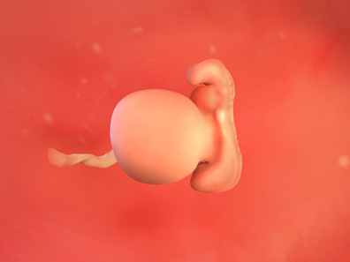
- 1. Sự phát triển của thai nhi
-
Tuần 1: Sự ra đời của một em bé bắt đầu bằng quá trình thụ tinh, từ khoảnh khắc tinh trùng và trứng gặp nhau trong ống dẫn trứng. Kích thước của phôi lúc này chỉ tầm 0.2mm. Sau khoảng 12-15 giờ kể từ khi thụ tinh, phôi bắt đầu phân chia tế bào.
Tuần 2: Lúc này, em bé chưa được gọi là “thai nhi” mà chỉ là “phôi thai”, vì chưa hình thành hình dạng của một em bé rõ ràng👶. Phôi di chuyển dọc theo ống dẫn trứng và không ngừng phân chia tế bào.
Nói một cách cụ thể hơn:
📌 Khi tính tuổi thai và ngày dự sinh, bác sĩ sẽ dựa trên ngày đầu kỳ kinh cuối của bạn. Nghĩa là ngày đầu tiên của kỳ kinh cuối được xem là ngày bắt đầu mang thai. Thông thường, sự rụng trứng diễn ra khoảng giữa chu kỳ (tầm ngày thứ 14 với người có chu kỳ 28 ngày), nên thụ thai xảy ra vào thời điểm được tính là khoảng tuần thứ 2 của thai kỳ.
📌 Tuần thứ 2 là giai đoạn chuẩn bị thụ thai. Cơ thể đang chuẩn bị cho sự sống mới. Trong những ngày gần đây, estrogen và progesterone tăng lên khiến niêm mạc tử cung dày hơn, sẵn sàng đón trứng đã thụ tinh. Trong buồng trứng, các noãn (trứng) nằm trong các nang chứa dịch đang phát triển và “chín”.
📌 Khi rụng trứng, một trứng sẽ thoát khỏi nang và được ống dẫn trứng “đón” lấy. Rụng trứng không phải lúc nào cũng xảy ra đúng ngày giữa chu kỳ, có thể trong khoảng ngày 9-21 (với chu kỳ 28 ngày).
📌 Trong 24 giờ sau rụng trứng, nếu có một tinh trùng khỏe mạnh bơi từ âm đạo → cổ tử cung → tử cung → ống dẫn trứng và xâm nhập được vào trứng → thụ tinh xảy ra. Một lần xuất tinh có thể chứa khoảng 250 triệu tinh trùng, nhưng chỉ khoảng 400 con sống sót đủ lâu để tới được trứng, và thường chỉ 1 con chiến thắng.
📌 Trong 10-30 giờ tiếp theo, nhân tinh trùng và nhân trứng hòa vào nhau và kết hợp vật chất di truyền. Nếu tinh trùng mang nhiễm sắc thể Y → bé trai. Nếu tinh trùng mang nhiễm sắc thể X → bé gái. Trứng đã thụ tinh gọi là hợp tử (zygote).
- Trong 3-4 ngày, hợp tử di chuyển từ ống dẫn trứng vào tử cung và liên tục phân chia thành 100+ tế bào, lúc này gọi là phôi nang (blastocyst). Sau 1-2 ngày, phôi nang bắt đầu bám và làm tổ vào lớp niêm mạc tử cung, và từ đó tiếp tục phát triển.
Tuần 3: Phôi bắt đầu làm tổ trong niêm mạc tử cung và chia thành 3 nhóm tế bào. Khoảng 1 tuần đến 10 ngày sau thụ tinh, phôi bám chặt vào niêm mạc tử cung và bắt đầu phát triển.
Khoảng 5 ngày sau khi làm tổ, phôi tách thành 3 lớp tế bào, từ đó sẽ hình thành:
- Ống thần kinh🧠 (sau này phát triển thành não và tủy sống)
- Hệ mạch máu và hệ tuần hoàn💓
Lúc này, tim bắt đầu hình thành và đẩy máu.
Nước ối bắt đầu tích tụ trong túi ối, có tác dụng bao bọc và bảo vệ bé trong suốt thai kỳ.
Hình dáng của phôi còn rất sơ khai, trông giống như một chú cá nhỏ, có 4 khe mang và một cái đuôi dài. Chiều dài phôi khoảng 0.2 cm, cân nặng chưa tới 1g.
Tuần 4: Bề ngoài, bé vẫn chưa có hình dạng giống con người. Thai nhi lúc này quá nhỏ để nhìn thấy rõ bằng siêu âm. Dây rốn bắt đầu phát triển. Đã có túi ối bao quanh bé, chứa nước ối giúp bảo vệ bé. Cũng có túi noãn hoàng, tạm thời cung cấp chất dinh dưỡng và tạo ra tế bào hình thành dây rốn, hệ tiêu hóa và cơ quan sinh sản.
Tuần 5: Đến tuần này, bạn có thể nhìn thấy thai bằng siêu âm. Hình ảnh túi thai (gestational sac) sẽ xuất hiện trên siêu âm. Đây cũng là giai đoạn tim, gan, dạ dày và các cơ quan quan trọng khác bắt đầu hình thành.
Sâu bên trong tử cung, phôi thai đang phát triển rất nhanh, và lúc này trông giống một chú nòng nọc hơn là hình người.
Phôi được tạo thành từ ba lớp tế bào: ngoại bì (ectoderm), trung bì (mesoderm), nội bì (endoderm). Ba lớp này sẽ phát triển thành tất cả các cơ quan và mô trong cơ thể bé.
Sự hình thành não bộ: Não, tủy sống và hệ thần kinh bắt đầu phát triển từ ống thần kinh, được hình thành từ lớp ngoại bì. Lớp này cũng sẽ phát triển thành da, tóc, móng, tuyến mồ hôi, tuyến sữa và men răng.
Sự phát triển của tim: 💓Trái tim và hệ tuần hoàn bắt đầu hình thành từ trung bì. Lớp trung bì cũng phát triển thành cơ bắp, xương, sụn và các mô nằm dưới da.
Phổi và hệ tiêu hóa: Lớp nội bì sẽ phát triển thành phổi, ruột, hệ tiết niệu ban đầu, tuyến giáp, gan và tuyến tụy.
Trong khi đó, nhau thai và dây rốn sơ khai đã bắt đầu hoạt động để cung cấp chất dinh dưỡng và oxy cho bé.
Bé có kích thước khoảng bằng một hạt mè (vừng).😊
- 2. Thay đổi của cơ thể mẹ
-
Tuần 2: Bạn dễ thụ thai nhất trong 3 ngày trước rụng trứng. Một số dấu hiệu rụng trứng có thể xuất hiện như:
- Nhiệt độ cơ thể cơ bản thay đổi
- Căng tức ngực nhẹ
- Đau tức hoặc âm ỉ bụng dưới🤕
- Dịch nhầy âm đạo tăng lên và lỏng, trong, dai như lòng trắng trứng.
Tuy nhiên, không phải ai cũng cảm nhận rõ ràng các dấu hiệu này.
Tuần 3: Nếu bạn đang mong có thai, thì hai tuần sắp tới có thể cảm thấy dài nhất trong đời. Que thử thai chỉ cho kết quả chính xác từ ngày đầu tiên bạn bị trễ kinh trở đi, vì vậy bạn chưa nên thử thai quá sớm. Trong lúc chờ đợi, bạn có thể ghi chú lại những thay đổi nhỏ của cơ thể như đau tức nhẹ, thay đổi khẩu vị, thay đổi tâm trạng… vì đôi khi cơ thể sẽ có tín hiệu sớm.
Nhiều người chưa có cảm giác gì cho đến khi trễ kinh. Nhưng có thể có các dấu hiệu sau:
- Đầy hơi, chướng bụng
- Đau âm ỉ bụng
- Ra chút máu hồng🩸
- Ngực căng và nhạy cảm hơn
- Khứu giác nhạy hơn👃 (đột nhiên cảm thấy mùi nhà, mùi người khác, mùi chó, mùi thức ăn… khác lạ)
Tất cả là do hormone nội tiết tăng lên. Các tế bào tạo nên nhau thai sẽ tiết ra hormone hCG - loại hormone khiến:
- Buồng trứng ngừng rụng trứng
- Duy trì progesterone, giúp giữ niêm mạc tử cung, bảo vệ phôi
- Khi lượng hCG trong nước tiểu đủ cao → que thử thai sẽ lên 2 vạch.
Tuần 4: Ở tuần này, bạn có thể nhận được kết quả thử thai dương tính, vì que thử thai phát hiện hormone hCG trong nước tiểu.
Một số que thử quảng cáo rằng có thể phát hiện rất sớm (từ 5 ngày trước khi trễ kinh), nhưng để kết quả chính xác nhất, bạn nên thử từ ngày đầu tiên bị trễ kinh.
Nếu thử quá sớm, bạn có thể gặp: kết quả âm tính giả (thực ra đã có thai nhưng chưa đủ hCG), hoặc vạch mờ, khó phân biệt.
Về ngày dự sinh, bạn có thể dùng các “Công cụ tính ngày dự sinh” dựa trên ngày đầu tiên của kỳ kinh cuối, hoặc ngày thụ thai (nếu biết).
Tuy nhiên, ngày dự sinh chỉ là ước tính. Chỉ 1/20 mẹ bầu sinh đúng ngày dự sinh. Có thể sinh sớm hoặc muộn trong vòng 2 tuần so với ngày dự sinh đều bình thường.
Tuần 5: Ở tuần thứ 5, bạn có thể chưa thấy bụng to, hoặc có thể cảm thấy bụng căng, chật hơn do đầy hơi. Điều này hoàn toàn bình thường.
Trong tam cá nguyệt đầu tiên, bạn không cần ăn nhiều hơn bình thường, và có thể tăng khoảng 1-2 kg, hoặc thậm chí không tăng cân. Một số người còn giảm cân do buồn nôn, điều này thường không nguy hiểm, nhưng nếu nôn quá nhiều, hãy trao đổi với bác sĩ vì có thể là dấu hiệu của ốm nghén nặng (hyperemesis gravidarum).
Khi nào nên thông báo đang mang thai?
Không có quy tắc bắt buộc cho việc công bố tin mang thai. Nhiều bố mẹ thường đợi đến cuối tam cá nguyệt đầu tiên (khoảng tuần 12) mới thông báo📢, vì khi đó nguy cơ sảy thai giảm đi đáng kể. Nhưng quyết định là tùy ở bạn, muốn chia sẻ khi nào là quyền của bạn.
Về khả năng song thai👶👶, là khoảng 3/100 đối với hầu hết mọi người, nhưng nếu bạn có dùng các phương pháp hỗ trợ sinh sản, tỉ lệ có thể cao đến 30%. Thông thường, phụ nữ sẽ biết mình mang đôi qua siêu âm trong tam cá nguyệt đầu tiên.
Triệu chứng mang thai trong tuần thứ 5:
Đi tiểu thường xuyên:🚽 Hormone thai kỳ kết hợp với lượng máu trong cơ thể tăng lên khiến bạn cảm thấy cần đi tiểu nhiều hơn. Hãy tiếp tục uống đủ nước, nhưng nên hạn chế uống quá nhiều vào buổi tối để đỡ phải thức dậy nhiều lần ban đêm.
Ngực đau và căng: Đây là một trong những dấu hiệu sớm nhất của thai kỳ. Lượng hormone tăng làm tăng lưu lượng máu, khiến ngực trông đầy hơn, nhạy cảm hơn và đôi khi cảm giác tê hoặc căng tức.
Mệt mỏi:😴 Chưa rõ chính xác nguyên nhân, nhưng sự thay đổi hormone (đặc biệt là progesterone) được cho là nguyên nhân chính. Bạn có thể cảm thấy kiệt sức. Hãy cố ngủ nhiều hơn, nghỉ ngơi, nhờ hỗ trợ và chăm sóc bản thân tốt hơn. Năng lượng thường sẽ trở lại trong tam cá nguyệt thứ hai.
Ra máu nhẹ (spotting): Khoảng 1/4 phụ nữ bị ra máu nhẹ trong tam cá nguyệt đầu tiên. Thường không có vấn đề gì, nhưng đôi khi có thể là dấu hiệu sảy thai hoặc thai ngoài tử cung. Hãy thông báo cho bác sĩ hoặc nữ hộ sinh. Nếu ra máu nhiều hoặc đau dữ dội và bạn không thể liên hệ với bác sĩ, hãy đến phòng cấp cứu ngay.
Ốm nghén:🤢 Buồn nôn và/hoặc nôn ói thường bắt đầu từ tuần 5-6. Không phải ai cũng bị, nhưng khoảng 80% phụ nữ mang thai có cảm giác buồn nôn. Có nhiều cách an toàn để giảm, đó là thay đổi thói quen ăn uống, ăn/uống gừng, tránh thức ăn gây mùi khó chịu, hoặc dùng thuốc theo hướng dẫn bác sĩ.
Sợ mùi hoặc không chịu được một số món ăn: Hormone tăng và khứu giác nhạy hơn có thể khiến một số loại mùi hoặc món ăn khiến bạn buồn nôn. Một số món thường gây khó chịu gồm thịt, cà phê, trứng, sữa hoặc thức ăn nhiều dầu mỡ. Bạn có thể thử ăn đồ nhạt, lạnh hoặc nhờ người khác nấu giúp.
- 3. Lưu ý về sức khỏe
-
Tuần 2:
Hãy sử dụng thực phẩm hữu cơ (유기농 식품).🍎 🥦 🥕 🥗 🍓 🍊 Về cơ bản, bạn có thể ăn uống đa dạng như bình thường. Tuy nhiên, để đảm bảo an toàn, nếu có điều kiện, hãy ưu tiên thực phẩm hữu cơ, dù giá có thể cao hơn. Ngày nay, trong quá trình trồng trọt, người ta sử dụng nhiều thuốc trừ sâu và phân bón hóa học, ngay cả khi rửa kỹ cũng khó loại bỏ hoàn toàn. Để giảm tối đa tác động xấu đến thai nhi, hãy cố gắng lựa chọn những thực phẩm được trồng ít hoặc không sử dụng thuốc hóa học và phân bón (가급적 농약이나 화학비료의 사용을 적게 하여 재배한 먹거리를 찾아 먹는 것).
Quản lý cân nặng một cách hiệu quả (효과적인 체중 관리). Sai lầm thường gặp là nghĩ rằng “mang thai thì phải ăn cho hai người”😵, nên từ đầu thai kỳ đã cố ăn thật nhiều. Điều này dễ khiến cân nặng tăng mất kiểm soát. Để duy trì cân nặng hợp lý khi mang thai, bạn cần có hiểu biết cơ bản về dinh dưỡng: nắm rõ 5 nhóm dinh dưỡng, lượng calo, khẩu phần phù hợp, và bảng calo của các món ăn thường dùng (5대 영양소와 칼로리, 분량을 익혀두고, 자주 먹게 되는 음식과 칼로리 표를 알아두는 것). Điều này sẽ giúp ích rất nhiều trong việc quản lý dinh dưỡng thai kỳ.
Chăm sóc sức khỏe để tránh bệnh🤒 (병에 걸리지 않도록 건강관리에 유의). Cần tăng sức đề kháng, hạn chế đến nơi đông người, và giữ thói quen rửa tay chân sạch sẽ sau khi ra ngoài.
Tuần 3:
Hãy ăn uống đều đặn và đúng bữa. Trong giai đoạn này, các chất dinh dưỡng và oxy cần thiết cho sự phát triển của thai nhi đều đến từ mẹ. Vì vậy, để hỗ trợ sự phát triển của thai nhi, cần lưu ý đến chế độ ăn uống. Tùy theo sự phát triển của em bé, lượng calo, protein, khoáng chất và vitamin cần thiết mỗi ngày cũng cần được tăng dần. Dù giai đoạn này chưa cần đặc biệt tăng lượng calo, nhưng để đảm bảo sức khỏe mẹ và sự phát triển tốt của thai nhi, bạn không nên bỏ bữa mà hãy hình thành thói quen ăn 3 bữa đều đặn mỗi ngày. Ví dụ: nếu buổi sáng ăn bánh mì thì bữa trưa nên ăn cá, bữa tối ăn thịt để thay đổi món và đảm bảo cân bằng dinh dưỡng.
Thực phẩm cần ăn và lượng khuyến nghị
- 🌾Ngũ cốc: nên ăn cơm ngũ cốc hỗn hợp (nấu bằng cách trộn gạo và các loại hạt/đậu) thay vì chỉ ăn cơm trắng.
- 🥬Rau: tập trung vào rau màu xanh đậm và vàng (녹황색 야채), mỗi bữa khoảng 100g, mỗi ngày khoảng 300g.
- 🌊Rong biển và tảo (해조류): mỗi ngày 25g, giai đoạn cuối thai kỳ tăng lên 75g.
- 🍎Trái cây: ăn 3–4 lần/ngày như món tráng miệng hoặc bữa phụ.
- 🍖Thịt hoặc cá: 150g/ngày, giai đoạn cuối tăng lên 200g.
- 🥛Sữa: uống ít nhất 1 ly/ngày.
- 🧂Muối (염분): hạn chế dưới 10g/ngày.
Quản lý cân nặng hiệu quả
- Chỉ số BMI (BMI지수) thường dùng để đánh giá mức độ béo phì, nhưng cũng hữu ích trong quản lý cân nặng khi mang thai.
- BMI 20-22: cân nặng tiêu chuẩn.
- Trong 3 tháng đầu: giữ BMI tối đa 24.
- Từ tháng 4-7: tối đa 26.
- Sau tháng thứ 8: nếu vượt 28 → được xem là béo phì khi mang thai (비만 임신부).
Tránh sauna và tắm nước nóng.
Nếu trong vòng 3 tuần đầu thai kỳ, thai phụ bị sốt cao hoặc tiếp xúc với môi trường nhiệt độ cao như sauna hay tắm nước nóng, có thể làm tăng nguy cơ biến đổi gen. Vì vậy, từ sau ngày rụng trứng (배란일), nếu đang mong có thai, hãy tránh tắm nước quá nóng, tránh để cơ thể nhiễm cảm nhiệt.
Việc cần làm khi mang thai tuần 3
- Lắng nghe và chăm sóc cảm xúc của bản thân.
- Tránh tắm nước quá nóng, sauna, bồn xông hơi.
- Ăn đầy đủ dinh dưỡng: rau củ, trái cây, ngũ cốc nguyên hạt, cá ít thuỷ ngân, thịt và đậu phụ.
- Giảm cà phê xuống khoảng 1 ly/ngày.
- Nếu cần hỗ trợ cai rượu, thuốc lá hoặc chất kích thích → nhờ bác sĩ.
- Bắt đầu xây dựng thói quen ngủ tốt.
- Kiểm tra xem môi trường sống và nơi làm việc có tiếp xúc hóa chất hoặc yếu tố nguy hại không.
Tuần 4:
Nếu kỳ kinh dự kiến trễ khoảng 1 tuần và bạn bắt đầu có cảm giác mình đã mang thai cả về cơ thể lẫn cảm xúc, hãy đến khoa sản (산부인과) để kiểm tra xem mình có mang thai hay không.
Khi đi, nhớ mang theo thẻ bảo hiểm y tế (건강보험카드).💳
Khi khám phụ khoa (내진), nên mặc đồ tách rời trên - dưới, hạn chế quần bó, tốt nhất là mặc váy dài rộng để tiện kiểm tra.
Để khám nhanh và hiệu quả, bạn nên ghi chú trước các thông tin bên dưới và mang theo:
- Ngày bắt đầu kỳ kinh gần nhất📅
- Chu kỳ kinh
- Thay đổi thân nhiệt🌡️
- Việc có dùng thuốc hay không
- Khi bác sĩ khám, họ cũng quan sát sắc mặt để đánh giá sức khỏe, vì vậy hãy tránh trang điểm đậm.
Nguyên tắc trò chuyện với bác sĩ là phải trung thực và chính xác🩺.
- Tình trạng sức khỏe hiện tại của thai phụ rất quan trọng, nhưng tiền sử bệnh lý trong quá khứ cũng quan trọng không kém. Việc đã từng mang thai trước đó, sảy thai tự nhiên (자연유산), phá thai (인공유산), sinh con dị tật (기형아 출산 경험), từng phẫu thuật hoặc đang mắc bệnh, hay đã từng mắc bệnh trong quá khứ đều có thể ảnh hưởng lớn đến thai kỳ hiện tại.
- Nếu đã từng sảy thai hoặc có tiền sử bệnh trong gia đình thì ngay lần khám đầu tiên phải nói rõ với bác sĩ và tiến hành một số xét nghiệm cần thiết.
- Những bệnh bắt buộc phải thông báo gồm bệnh tim, tiểu đường, bệnh thận, rối loạn tuyến giáp, cao huyết áp, hen suyễn (심장병, 당뇨병, 신장병, 갑상선 이상, 고혈압, 천식).
Kiểm tra tại bệnh viện trong lần khám đầu tiên
- Đầu tiên sẽ kiểm tra nước tiểu để xác nhận mang thai. Đây là phương pháp giống với que thử thai tại nhà, nên nếu đã thử ở nhà thì hãy nói với y tá để tránh kiểm tra trùng lặp.
- Khi xác nhận có thai🤰, bạn sẽ được khám phụ khoa. Do hormone mang thai làm tử cung và cổ tử cung mềm ra và khiến máu lưu thông tập trung về vùng chậu, nên cổ tử cung vốn có màu hồng nhạt sẽ chuyển sang màu tím đậm.
- Khi mang thai, tử cung thường mềm và hơi giãn, nhưng lần khám phụ khoa đầu tiên có thể gây co thắt bất chợt hoặc cảm giác hơi cứng. Tuy nhiên, khám phụ khoa là kiểm tra mà bất kỳ thai phụ nào cũng sẽ trải qua, nên không cần lo lắng hay căng thẳng, cũng không gây đau, hãy giữ tinh thần thoải mái.
- Bạn sẽ được cấp sổ theo dõi thai kỳ (임신부수첩)📖. Trong sổ sẽ ghi lại huyết áp, cân nặng và nội dung kiểm tra định kỳ hằng tháng, giúp theo dõi tình trạng thai nhi và sức khỏe mẹ bầu một cách tổng quát. Vì vậy cần giữ sổ cẩn thận cùng với thẻ bảo hiểm y tế và mang theo mỗi lần khám.
⚠️Quy tắc sinh hoạt cho bà bầu (임산부 생활 수칙)
- Vitamin B6 và B12 giúp giảm ốm nghén (입덫).
- Tùy mỗi người, có thai phụ hầu như không bị ốm nghén, nhưng phần lớn phụ nữ mang thai lại nhạy cảm với mùi, thay đổi khẩu vị, đau đầu hoặc buồn nôn. Lúc này, việc bổ sung tích cực vitamin B6 và vitamin B12 sẽ giúp phòng ngừa và giảm nhẹ các triệu chứng ốm nghén.
- Một trong những nguyên nhân làm nặng thêm ốm nghén là rối loạn hệ thần kinh tự chủ, vitamin B6 giúp thúc đẩy hoạt động tiết dopamine - chất dẫn truyền thần kinh, từ đó giảm buồn nôn; còn vitamin B12 giúp ổn định thần kinh.
- Các loại vitamin này có nhiều trong trứng, đậu nành, rau xanh vàng (녹황색 야채), gạo lứt (현미).
Quản lý cân nặng hiệu quả⚖️
- Trong thai kỳ, tăng cân cơ bản gồm: trọng lượng thai nhi 3200g, nước ối và nhau thai 800g, tử cung và mô liên kết 1300g, lượng chất béo và protein tăng thêm trong cơ thể mẹ 3000g, lượng nước 2500g, tổng cộng tăng khoảng 10800g. Nhìn tổng thể thời gian mang thai, tăng 9~12kg được xem là lý tưởng.
- Trong giai đoạn đầu đến tuần 13 nên tăng khoảng 1kg.
- Đến tuần 26 và tuần 36 thì mỗi giai đoạn tăng thêm khoảng 5kg.
- Tuy nhiên mức tăng cân có thể khác nhau tùy tình trạng cơ thể trước khi mang thai: người gầy nên tăng khoảng 13kg, người cân nặng chuẩn tăng khoảng 9kg, người thừa cân tăng khoảng 7kg.
Nếu đã và đang uống thuốc thì hãy hỏi ý kiến bác sĩ 💊.
- Khi mang thai sẽ xảy ra thay đổi hormone. Do đó, ở một số thai phụ, cơ vòng từ thực quản đến dạ dày sẽ giãn ra gây buồn nôn, ợ nóng hoặc táo bón, nhưng không nên tự ý dùng thuốc dạ dày hoặc thuốc táo bón. Cũng không nên tự ý uống thuốc cảm khi thấy lạnh run và đau đầu.
- Nếu không biết mình mang thai và đã uống thuốc, không nên vội bỏ thai, mà hãy nói rõ loại thuốc và liều lượng đã uống để bác sĩ đánh giá.
- Tỷ lệ thuốc gây dị tật thực tế thấp hơn nhiều so với lo lắng thông thường, nên có thể không cần thiết phải cân nhắc đến việc bỏ thai.
Hạn chế đến nơi đông người🚫.
- Để tránh nhiễm các virus như cảm cúm mùa hoặc rubella (풍진), nên hạn chế đến trung tâm thương mại, rạp chiếu phim.
- Nếu không phải bắt buộc đi làm thì cũng nên hạn chế sử dụng phương tiện công cộng vào giờ cao điểm.
Việc cần làm khi mang thai tuần 4
- Kiểm tra lại các loại thuốc đang dùng. Chỉ sử dụng thuốc được bác sĩ xác nhận an toàn cho thai kỳ.
- Để giảm khó chịu tiêu hoá, nên ăn thành nhiều bữa nhỏ, nhai kỹ, tránh nước có ga, kẹo cao su, và sorbitol.
- Tập yoga nhẹ hoặc đi bộ🧘♀️🚶♀️.
- Chăm sóc giấc ngủ, nên hình thành thói quen ngủ ổn định.
- Mặc quần áo thoải mái. Dù chưa cần đồ bầu, bạn có thể sẽ thấy quần cạp bụng hơi chật do đầy hơi. Chọn quần jogger, legging, váy rộng, áo cardigan… sẽ dễ chịu hơn.
Tuần 5:
Lập kế hoạch khám thai định kỳ.
- Từ tháng thứ 2 của thai kỳ bắt đầu tiến hành khám định kỳ chính thức📝.
- Mỗi lần khám định kỳ sẽ bao gồm xét nghiệm nước tiểu, đo huyết áp, cân nặng,…
- 📅Cho đến tháng thứ 7: khám 1 lần/tháng.
- 📅Từ tháng 8-9: khám 2 tuần/lần.
- 📅Khi bước sang tháng thứ 10 khám 1 tuần/lần.
- Ngoài các xét nghiệm định kỳ, tùy từng giai đoạn đầu - giữa - cuối thai kỳ mà có thêm các xét nghiệm khác.
- Trong giai đoạn đầu thai kỳ, sẽ tiến hành xét nghiệm thiếu máu, giang mai, nhóm máu ABO và yếu tố Rh, viêm gan B, và kiểm tra rubella (빈혈검사, 매독혈청검사, ABO혈액형과 Rh인자 검사, B형 간염검사, 풍진검사).
- Siêu âm giúp xác định sự phát triển theo tuần thai, nghe nhịp tim thai❤️, xác định giới tính thai nhi, vị trí thai, kiểm tra dị tật ngón tay, ngón chân, môi, cũng như các bất thường như bệnh tim bẩm sinh (선천성 심장병), thai trứng, u trong tử cung (자궁의 혹), nhau tiền đạo (전치태반 hiện tượng nhau bám thấp),…
- Gần đây có siêu âm 3D, 4D (3차원, 4차원 초음파) cho phép xem mặt thai nhi rõ hơn. Tuy nhiên, vì chi phí tăng thêm nên thông thường siêu âm 3D/4D chỉ thực hiện vào giai đoạn đầu và giữa hoặc khi bác sĩ thấy cần thiết.
🥗Nên ăn/uống gì?
- Axit folic (엽산) thuộc nhóm vitamin B và kẽm (아연) thuộc nhóm khoáng chất là dưỡng chất không thể thiếu để hình thành tim và các cơ quan của thai nhi, đồng thời hỗ trợ phân chia tế bào và hình thành hồng cầu.
- Axit folic giúp phòng thiếu máu, tăng cảm giác ngon miệng và giảm đau đẻ.
- Kẽm giúp cơ bắp mềm mại và ổn định đường huyết, cải thiện thể trạng cho mẹ bầu.
- Vì vậy, cần bổ sung thực phẩm giàu axit folic như lòng đỏ trứng, bí đỏ, rau xanh đậm, đậu đỏ, bánh mì lúa mạch đen; và thực phẩm giàu kẽm như hàu, nghêu, sò, cá trích, trứng, gạo lứt,…
Quản lý cân nặng hiệu quả
- Khi mang thai, mọi người sẽ thường nói “phải ăn nhiều vào”, nhưng thực tế lượng calo cần thêm chỉ khoảng 150-350 kcal so với trước. Đặc biệt ở giai đoạn này chưa cần bổ sung quá nhiều dinh dưỡng.
- Với người bị ốm nghén có thể sút cân, còn người không bị ốm nghén dễ tăng cân quá mức, nên cần điều chỉnh cẩn thận.
- Khi cảm giác nghén giảm, mẹ bầu có thể thèm món ngọt🍫, nhưng nên tránh thực phẩm quá nhiều calo.
- Nên nhớ một nắm cơm chứa khoảng 150-180 kcal, vì vậy cố gắng duy trì chế độ ăn như bình thường để giúp kiểm soát cân nặng tốt hơn.
⚠️Nếu có dấu hiệu dọa sảy thì cần đặc biệt chú ý
- Khoảng tuần thứ 5, nếu túi thai trong tử cung nhỏ hơn tuổi thai hoặc méo hình, cần nghĩ đến khả năng dọa sảy.
- Bác sĩ cũng sẽ kiểm tra xem có xuất huyết xung quanh túi thai không.
- Nếu có dấu hiệu dọa sảy, nên giảm tối đa việc nhà, nghỉ ngơi, và tạm thời kiêng quan hệ tình dục.
Việc cần làm khi mang thai tuần 5
- Chọn cơ sở chăm sóc thai kỳ (bác sĩ sản khoa hoặc nữ hộ sinh). Nếu bạn đã có nơi tin tưởng thì rất tốt. Nếu chưa, hãy hỏi người quen, tham khảo trên bảo hiểm hoặc tìm thông tin trực tuyến.
- Tìm hiểu tiền sử bệnh trong gia đình. Hãy hỏi cha mẹ, ông bà hoặc họ hàng để biết xem gia đình hai bên có bệnh lý mạn tính hoặc bệnh di truyền nào không, bác sĩ sẽ cần thông tin này.
- Tải ứng dụng theo dõi thai kỳ. Ứng dụng 📱 BabyCenter (tiếng Anh), ứng dụng 📱 MamiTalk 마미톡 và 📱 핑크라이트(tiếng Hàn), hoặc các ứng dụng tương tự sẽ giúp bạn theo dõi sự phát triển của bé và thông tin hữu ích hàng tuần.
- Bắt đầu uống vitamin bầu, đặc biệt là axit folic - thành phần này giúp giảm nguy cơ dị tật ống thần kinh của thai nhi (như nứt đốt sống).
- Giảm lượng caffeine. Khuyến cáo không vượt quá 200mg caffeine/ngày (khoảng 1 cốc cà phê lớn).
- 4. Quan hệ vợ chồng khi mang thai
-
Tuần 2: Không nhất thiết phải kiêng hoàn toàn. Bạn vẫn có thể sinh hoạt vợ chồng như bình thường, chỉ cần nhẹ nhàng và chú ý cảm giác cơ thể. Ngoài việc gần gũi thể xác, hai vợ chồng nên dành nhiều thời gian chia sẻ cảm xúc, trao đổi yêu thương để cùng chuẩn bị tâm lý chào đón em bé.
Tuần 3: Không cần phải kiêng hoàn toàn, nhưng cần giữ cơ thể sạch sẽ trước khi quan hệ. Nếu vệ sinh không tốt và gây nhiễm trùng cơ quan sinh dục, mẹ có thể phải dùng thuốc, điều này không tốt cho thai kỳ.
Tuần 4: Nếu không có nguy cơ sảy thai thì không cần kiêng. Nếu tử cung không yếu bẩm sinh và không có tiền sử sảy thai hay vấn đề đặc biệt, có thể tiếp tục sinh hoạt tình dục như trước. Chỉ cần ghi nhớ tránh động tác quá mạnh để không làm thai nhi bị ảnh hưởng.
Tuần 5: Nếu sức khỏe mẹ bầu bình thường thì không cần kiêng tuyệt đối, nhưng vì nguy cơ sảy thai tự nhiên cao trong giai đoạn này nên cần chú ý. Nếu trước đây quan hệ 3-6 lần/tuần thì nên giảm xuống 1-2 lần/tuần. Tránh thay đổi tư thế quá nhiều hoặc quan hệ quá lâu, vì có thể gây co bóp tử cung hoặc chảy máu âm đạo.
- 5. Trọng tâm thai giáo
-
Tuần 2: Đối với người làm bố mẹ lần đầu, mang thai là niềm hạnh phúc lớn nhưng đôi khi cũng đầy lo lắng và bối rối. Nếu trước đó bạn đã đọc sách về nuôi dạy trẻ (육아), bạn sẽ bớt lo hơn khi biết mình mang thai. Bạn cũng có thể tham khảo thông tin trên Internet hoặc nghe chia sẻ từ các mẹ bầu khác đã có kinh nghiệm.
Tuần 3: Hãy duy trì tâm trạng thoải mái và thói quen suy nghĩ tích cực🌈. Khi phụ nữ mang thai bị căng thẳng, hệ miễn dịch suy yếu, dễ mắc bệnh hơn. Để thai nhi có thể bám và phát triển tốt trong tử cung, việc giữ tâm lý thư thái và tập nhìn nhận mọi việc tích cực là rất quan trọng. Có thể khó thay đổi cách nhìn cuộc sống trong một sớm một chiều, nhưng nếu luyện tập nhìn thế giới tươi đẹp hơn mỗi ngày, điều đó sẽ dần trở thành bản năng thứ hai (세상을 아름답게 바라보려는 연습을 하다 보면 습관이 제 2의 천성이 될 수 있습니다 😄😇💕).
Tuần 4:
Bắt đầu thiền hoặc viết nhật ký mang thai sẽ rất tốt.
Đối với phụ nữ, mang thai vừa là niềm vui vừa có thể gây căng thẳng.
Ngoài cảm giác kỳ diệu khi cảm nhận sự sống trong bụng, thì trách nhiệm làm mẹ, sự thay đổi cơ thể và tâm lý có thể dẫn đến trầm cảm thai kỳ.
Thiền sẽ giúp cơ thể thư giãn, loại bỏ suy nghĩ tiêu cực và giúp tinh thần nhẹ nhõm.🧘♀️🧘♀️
Khi thiền và bước vào trạng thái sóng α, thai nhi cũng sẽ cảm thấy thư thái (명상을 통해 α(알파)파가 충만한 상태로 들어가면 태아도 편안해집니다).
Việc viết nhật ký từ khi xác nhận mang thai cũng là một cách tốt. Ghi lại suy nghĩ của mẹ, sự thay đổi của cơ thể và cảm xúc, những thông điệp gửi đến bé trong bụng sẽ vừa là thai giáo tuyệt vời, vừa là món quà đáng trân quý cho con trong tương lai.
Tuần 5:
Thai giáo là nền tảng nuôi dưỡng cảm xúc và trí tuệ của thai nhi trong bụng mẹ. Khi mẹ bầu nghe nhạc phù hợp🎵, sẽ giúp thai nhi phát triển cảm xúc phong phú và trí tuệ tốt. Không cần loại nhạc đặc biệt, chỉ cần nhạc khiến mẹ bầu cảm thấy bình yên. Khi nghe nhạc, không cần cố phân tích giai điệu mà hãy thả lỏng cơ thể và cảm nhận một cách tự nhiên. Tiếng nước suối chảy, tiếng gió, tiếng chim hót,… cũng rất phù hợp.
- Nhạc nên nghe trước khi ngủ (nhấn vào từng tên bài nhạc bên dưới sẽ dẫn đến link youtube):
↗️ 🔗Schubert – Lullaby
↗️ 🔗Badarzewska – The Maiden's Prayer
↗️ 🔗Schumann – Träumerei
↗️ 🔗Mozart – Lullaby
↗️ 🔗Beethoven – Für Elise
- Nhạc buổi sáng:
↗️ 🔗Tchaikovsky – March (from The Nutcracker)
↗️ 🔗Ion Ivanovici – The Waves of the Danube & Franz Lehar
↗️ 🔗Beethoven – Ode to Joy
- Nhạc thư giãn:
↗️ 🔗Kreisler – Madrigal
↗️ 🔗Beethoven – Adagio Cantabile
↗️ 🔗Schubert – Serenade
↗️ 🔗Bach – Air
- 6. Các thông tin cần biết khác
-
Tuần 2: Hạn chế tiếp xúc quá gần với thú cưng (애완동물)🐱🐶. Tiếp xúc trực tiếp với mèo hoặc chó có thể khiến bạn bị nhiễm ký sinh trùng Toxoplasma. Mẹ bầu có thể không có triệu chứng gì, nhưng nếu thai nhi bị nhiễm, hậu quả có thể rất nghiêm trọng, ảnh hưởng đến hệ thần kinh và gây tổn thương não. Nếu trước đây bạn chưa từng nuôi thú cưng, thì trong thời gian chuẩn bị mang thai hoặc khi đang mang thai, hãy hạn chế tiếp xúc với chúng.
Tuần 3: Ở giai đoạn đầu thai kỳ, gần như không có triệu chứng rõ rệt, nên dễ vô tình để cơ thể tiếp xúc với môi trường hoặc hành động gây hại. Thụ thai xảy ra khoảng 2 tuần sau kỳ kinh cuối, tức là sau ngày rụng trứng (배란일).
Vì vậy, nếu đang mong có thai, từ sau ngày rụng trứng đến kỳ kinh kế tiếp, ⚠️hãy tránh:
- Uống thuốc không cần thiết
- Chụp X-ray
- CT scan
Tuần 4: Nếu có thể, tốt nhất là khám và sinh tại cùng một bệnh viện từ khi mang thai đến khi sinh.🏥 Khám với cùng một bác sĩ sẽ giúp tăng cảm giác tin tưởng và yên tâm, đồng thời bác sĩ cũng có thể theo dõi sức khỏe mẹ và thai nhi một cách nhất quán, thuận lợi cho việc đưa ra kế hoạch sinh an toàn. Vì vậy ngay từ lần khám đầu tiên, hãy cân nhắc bệnh viện phù hợp cho cả quá trình khám định kỳ, sinh và nằm viện sau sinh.
Khi chọn bệnh viện, nên chọn nơi gần nhà, được người có kinh nghiệm sinh con tại bệnh viện đó đánh giá tốt, có phương pháp sinh phù hợp mong muốn của mình, và dựa vào đặc điểm của bản thân để cân nhắc ưu - nhược điểm giữa phòng khám tư, bệnh viện đa khoa hoặc bệnh viện chuyên khoa (개인병원 또는 종합병원이나 전문병원).
Tuần 5:
Cần quản lý căng thẳng (스트레스 관리)😌
- Trong thai kỳ, việc điều chỉnh cảm xúc là rất quan trọng. Đặc biệt giai đoạn đầu dễ xảy ra sảy thai, và căng thẳng mạnh có thể gây nguy hiểm. Giai đoạn này cũng trùng với thời điểm ốm nghén nặng, nên thay đổi không khí, xem phim, xem tranh, hoặc đi dạo nhẹ nhàng sẽ giúp cải thiện tâm trạng. Vì ốm nghén chịu ảnh hưởng lớn từ tinh thần, việc lựa chọn sở thích thư giãn kích thích các giác quan (nhìn, nghe, vị, ngửi, xúc giác) có thể giúp giảm mệt mỏi.
- Nhiều mẹ bầu bị ốm nghén đến mức sút cân. Dù giai đoạn này thai chưa cần quá nhiều dinh dưỡng nên sút cân nhẹ không quá lo, nhưng nếu nhiều ngày không ăn được gì thì chất độc trong máu mẹ có thể ảnh hưởng xấu đến thai nhi, khi đó cần truyền dịch chứa glucose hoặc amino acid.
🍽️Thói quen sinh hoạt giúp giảm ốm nghén:
- Chia bữa ăn thành 5-6 lần/ngày để tránh dạ dày trống.
- Tránh thức ăn nhiều dầu mỡ.
- Tránh thức ăn mùi mạnh như tỏi, kimchi cay.
- Có thể giảm nghén bằng vị chua nhẹ như chanh, giấm, mì trộn, miến lạnh, yogurt, thạch.
- Hạn chế muối vì có thể gây nhiễm độc thai nghén.
- Hạn chế uống nước quá nhiều, có thể ngậm đá nhỏ để bổ sung nước. Trà lúa mạch ấm hoặc trà quyết minh tử có thể giúp giảm buồn nôn (미지근한 보리차나 결명자 차).
-
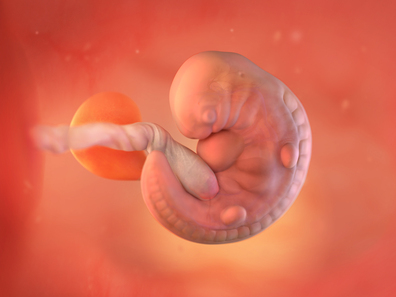
- 1. Sự phát triển của thai nhi
-
Thai nhi dài khoảng 6mm, cỡ một hạt đậu nhỏ, hình dạng trông hơi giống nòng nọc vì cột sống kéo dài ra phía sau thành một phần đuôi nhỏ, sẽ biến mất trong vài tuần tới.
👀Có những chấm tối nhỏ nơi mắt và lỗ mũi đang hình thành.
👂Tai bắt đầu xuất hiện dưới dạng những hõm nhỏ hai bên đầu.
👅Bên trong miệng bé, lưỡi và dây thanh âm đang bắt đầu phát triển.
🖐️Tay chân của bé bắt đầu từ những mầm nhỏ (limb buds) và sẽ dần dài ra thành chi hoàn chỉnh.
🩹Toàn bộ phôi thai được bao phủ bởi một lớp da trong suốt và rất mỏng.
❤️Tim của em bé chưa phát triển hoàn chỉnh, nhưng các tế bào trong ống tim đã bắt đầu đập rất nhanh, khoảng 160 lần/phút. Tuần này, nếu bạn được siêu âm sớm, bạn có thể nghe thấy nhịp tim thai. Nếu khi siêu âm chưa nghe được nhịp tim, bác sĩ sẽ hẹn kiểm tra lại sau 1 tuần.
🧠80% tế bào thần kinh của não và tủy sống được hình thành trong giai đoạn này.
🤰Nhau thai (태반) và dây rốn (탯줄), vốn kết nối mẹ và thai nhi, cũng tiếp tục phát triển.
- 2. Thay đổi của cơ thể mẹ
-
- Khi mang thai (임신), dưới ảnh hưởng của hormone, lượng máu lưu thông đến tử cung (자궁) tăng lên và quá trình trao đổi chất trở nên mạnh mẽ hơn, khiến mẹ dễ đổ mồ hôi và tăng tiết dịch âm đạo (질 분비물).
- Dịch âm đạo thường có màu trắng đục, hơi dính, và hầu như không có mùi hoặc gây ngứa. Lúc này, kích thước tử cung (자궁) lớn bằng quả trứng ngỗng.
- Bụng bầu ở tuần 6 có lộ hay chưa phụ thuộc vào nhiều yếu tố, như: vị trí thai trong tử cung, chiều cao cơ thể, có mang đa thai hay không, đã từng mang thai trước đó hay không. Mẹ thấp bé hoặc phần thân ngắn có thể lộ bụng sớm hơn.
- Những mẹ từng mang thai thường cũng bắt đầu lộ bụng sớm hơn, vì cơ bụng đã giãn từ lần mang thai trước.
Triệu chứng thai kỳ trong tuần 6
🤢 Ốm nghén (buồn nôn): Có thể xảy ra bất kỳ lúc nào, thường bắt đầu vào tuần 5–6 và giảm dần sau tuần 12.
🚽 Đi tiểu thường xuyên: Lượng máu tăng khiến thận làm việc nhiều hơn → bàng quang đầy nhanh hơn. Tiếp tục uống đủ nước; nước tiểu màu vàng nhạt hoặc trong nghĩa là đủ nước.
😟 Thay đổi tâm trạng (Mood swings): Do hormone, mệt mỏi và cảm xúc về việc làm cha mẹ. Nếu tâm trạng xấu kéo dài → hãy trao đổi với bác sĩ.
💓 Ngực đau, sưng: Hormone làm tăng lưu thông máu, khiến ngực căng, nhạy cảm.
😴 Mệt mỏi: Rất phổ biến do hormone progesterone tăng mạnh.
👅 Vị kim loại trong miệng: Có thể giảm bằng cách đánh răng thường xuyên, xúc miệng nước muối hoặc nước baking soda loãng, ăn đồ chua nhẹ, hoặc nhai kẹo bạc hà.
💭 Giấc mơ kỳ lạ: Não đang xử lý những thay đổi lớn trong cuộc sống → có thể xuất hiện giấc mơ sinh con, cơ thể thay đổi, làm mẹ…
🤕 Đau đầu: Thường gặp trong tam cá nguyệt đầu. Hạn chế tác nhân gây đau đầu và duy trì ngủ đủ, uống đủ, ăn đều và vận động nhẹ. Bạn có thể dùng acetaminophen (paracetamol) khi cần - hỏi ý kiến bác sĩ trước, nhưng không dùng aspirin, ibuprofen trừ khi có chỉ định của bác sĩ.
- 3. Lưu ý về sức khỏe
-
📌Đảm bảo môi trường làm việc an toàn: Nếu bạn tiếp xúc với hóa chất, kim loại nặng, sinh phẩm hoặc phóng xạ, hãy báo ngay với quản lý để điều chỉnh công việc phù hợp.
📌Giảm căng thẳng: Hãy ưu tiên nghỉ ngơi, hít thở sâu, vận động nhẹ, nghe nhạc, hoặc viết nhật ký để giải tỏa.
📌Lập danh sách việc cần làm trong thai kỳ📝, có thể bắt đầu từ:
- Bảo hiểm y tế cho bạn (nếu chưa có) và bé
- Kế hoạch khám thai
- Ý tưởng tên cho bé👶
📌Giảm ốm nghén (Morning sickness relief)🤢
- Tình trạng buồn nôn có thể xảy ra vào bất kỳ thời điểm nào trong ngày, nhưng thường nặng hơn vào buổi sáng mới thức dậy. Có thể giúp giảm khó chịu bằng cách để sẵn một món ăn nhẹ (snack) bên cạnh giường và ăn một chút trước khi đứng dậy.
- Hãy thử ăn 6 bữa nhỏ trong ngày, nghỉ ngơi đầy đủ, và duy trì chế độ ăn uống cân bằng, lành mạnh, uống nhiều nước.
- Nhiều người nhận thấy gừng giúp giảm buồn nôn, chẳng hạn như: trà gừng, nước ngọt gừng (ginger ale), bánh quy gừng (ginger biscuits),...
- Một số khác cảm thấy ngậm đá lạnh hoặc đeo vòng bấm huyệt chống say tàu xe (travel acupressure wristbands) cũng có tác dụng.
Ra máu có bình thường không?
- 1 trong 4 phụ nữ có hiện tượng ra máu nhẹ🩸 trong 3 tháng đầu.
- Nếu bạn thấy có máu, hãy liên hệ bác sĩ hoặc cơ sở y tế để kiểm tra.
- Ra máu nhẹ có thể chỉ vì nguyên nhân nhỏ và không đáng lo, nhưng đôi khi cũng có thể là dấu hiệu của vấn đề nghiêm trọng hơn như: thai ngoài tử cung (ectopic pregnancy), sảy thai (miscarriage), hoặc vấn đề liên quan đến nhau thai (placenta)
📌Bổ sung nhiều Vitamin E để phòng ngừa sảy thai (유산 방지).🌰
- Trong thời kỳ này, nhau thai vẫn chưa được hình thành hoàn chỉnh, do đó, nguy cơ sảy thai còn cao. Vitamin E giúp tăng cường tuần hoàn máu trong tử cung, hỗ trợ ngăn ngừa sảy thai. Hãy bổ sung nhiều các thực phẩm giàu Vitamin E như hạnh nhân, mầm lúa mì, trứng, đậu nành, bông cải xanh (아몬드, 밀배아, 달걀, 대두, 브로콜리).
📌Uống sữa hoặc sữa chua🥛 không đường (플레인 요구르트), ăn nhiều trái cây (과일).
- Tuy trái cây có nhiều vitamin, chất xơ và khoáng chất, nhưng fructose trong trái cây cũng chứa nhiều calo → tốt hơn khi ăn cùng các loại rau củ dễ nhai như cà rốt hoặc dưa chuột để hỗ trợ kiểm soát cân nặng.
📌Nghỉ ngơi điều độ và duy trì sinh hoạt hằng ngày.
- Ở giai đoạn đầu, phôi thai chưa bám chắc, vì vậy nên tránh làm việc quá sức, du lịch đường xa, hay vận động mạnh.
- Tuy nhiên, không nên nằm nghỉ suốt ngày. Dù cơ thể dễ mệt mỏi, hãy duy trì vận động nhẹ trong khả năng → giúp cải thiện tinh thần, hỗ trợ tiêu hóa và giảm ốm nghén.
- Vẫn có thể làm việc làm việc nhà, chỉ cần tránh tác động lực lên bụng như mang vác đồ nặng, leo cầu thang nhiều, đi bộ quá lâu, đi xe đạp, xe buýt bị xóc nhiều,...
🚭🚭🚭Tuyệt đối tránh hút thuốc lá trực tiếp hoặc gián tiếp (간접흡연). Nicotine làm co mạch máu của nhau thai, khí CO làm giảm lượng oxy trong máu → dẫn đến thai nhi thiếu dưỡng chất và oxy.
- 4. Quan hệ vợ chồng khi mang thai
-
Nếu bác sĩ không có yêu cầu kiêng đặc biệt thì không cần phải kiêng hoàn toàn.
Tuy nhiên, vì nguy cơ sảy thai trong giai đoạn này vẫn còn, nên cần chú ý: giảm tần suất, giảm thời gian, chọn tư thế an toàn.
Đồng thời, chồng hãy tôn trọng và thấu hiểu cảm giác của mẹ bầu, vì thời điểm này thường bị ốm nghén, mệt mỏi.
- 5. Trọng tâm thai giáo
-
Hãy làm những điều mà thai nhi (태아) cảm thấy dễ chịu.🌸
Ngay cả khi không cố ý, hành vi và cảm xúc của mẹ có ảnh hưởng trực tiếp đến thai nhi.
Điều quan trọng là chú ý để thai nhi không trải qua các cảm xúc gây cản trở sự phát triển như căng thẳng, bị đè nén hoặc áp lực.
Thai nhi thích mẹ đi dạo với tâm trạng thư thái. Vì nhờ vậy oxy trong lành sẽ được truyền đến thai nhi.
Thai nhi thích những âm thanh tự nhiên như tiếng chim hót, tiếng nước chảy. Âm thanh dịu nhẹ giúp thai nhi cảm thấy yên tâm và dễ chịu.
Thai nhi thích nghe giọng nói nhẹ nhàng, vui vẻ của mẹ. Sự thư thái của mẹ giúp thai nhi cảm thấy an toàn.
Thai nhi thích mẹ ngủ sớm và dậy sớm. Điều này giúp thai nhi cảm nhận nhịp điệu sinh học ổn định.
Thai nhi không thích nước lạnh❌. Thay đổi nhiệt độ đột ngột sẽ tạo căng thẳng cho thai nhi.
Thai nhi không thích thức ăn đắng hoặc quá chua❌. Các kích thích vị giác mạnh có thể khiến thai nhi căng thẳng bên trong bụng mẹ.
Thai nhi không thích phim kinh dị❌. Khi mẹ bị giật mình sợ hãi, thai nhi sẽ cảm thấy bất an mạnh mẽ.
Thai nhi không thích tư thế nằm quá mức gây chèn ép❌. Khi mẹ nằm ngửa hoàn toàn, động mạch có thể bị đè ép, khiến tuần hoàn máu giảm. Khi đó thai nhi sẽ đạp mạnh để gửi tín hiệu cho mẹ thay đổi tư thế.
Thai nhi không thích tiếng động lớn hoặc gây giật mình❌ như tiếng động cơ xe máy, còi xe cấp cứu, còi xe ô tô, tiếng mẹ tức giận, tiếng chó sủa, tiếng cãi nhau, tiếng kính vỡ, v.v.
- 6. Các thông tin cần biết khác
-
📌Hãy ghi nhớ chính xác ngày dự sinh (출산 예정일).
- Chúng ta đều háo hức mong chờ khi nào em bé sẽ đến với thế giới này, vì vậy việc ghi nhớ ngày dự sinh là rất quan trọng. Tuy thời gian thai nhi ở trong cơ thể mẹ không hoàn toàn cố định và ngày thụ tinh cũng khó xác định chính xác, nên ngày sinh thực tế có thể khác so với dự kiến. Tuy vậy, nhìn chung, thời gian mang thai được tính là 280 ngày kể từ ngày đầu tiên của kỳ kinh cuối, tương đương 40 tuần (10 tháng, mỗi tháng tính 4 tuần/28 ngày).
- Việc tính ngày dự sinh sẽ khác nhau tùy theo chu kỳ kinh nguyệt đều hay không đều. Nếu chu kỳ kinh nguyệt đều, có thể tính dự sinh dựa trên phương pháp tính từ kỳ kinh cuối (최종 생리일 계산법), phương pháp nhiệt độ cơ bản (기초 체온법) hoặc lịch thai kỳ (임신력). Nếu chu kỳ không đều, có thể dựa vào thời điểm thai máy (태동) và chiều cao đáy tử cung (자궁저 높이). Trong các phương pháp này, cách dễ nhất và tương đối chính xác mà mẹ có thể tự tính là phương pháp tính từ ngày đầu kỳ kinh cuối (최종 생리일 계산법).
1️⃣ Cách tính dự sinh dựa trên ngày bắt đầu kỳ kinh cuối
Từ tháng cuối cùng có kinh, trừ đi 3 tháng; nếu tháng nhỏ hơn 3 và không thể trừ, thì cộng thêm 9 để ra tháng sinh dự kiến.
Sau đó, cộng thêm 7 ngày vào ngày bắt đầu kỳ kinh cuối để ra ngày dự sinh.
Ví dụ 1: Ngày đầu kỳ kinh cuối là 5/12 năm nay.
→ 12 − 3 = 9 (tháng 9)
→ 5 + 7 = 12 (ngày 12)
→ Vì vậy, ngày dự sinh là 12 tháng 9 năm sau.
Ví dụ 2: Ngày đầu kỳ kinh cuối là 1/1 năm nay
→ 1 + 9 = 10 (tháng 10)
→ 1 + 7 = 8 (ngày 8)
→ Vì vậy, ngày dự sinh là 8 tháng 10 năm nay.
2️⃣ Cách dùng lịch thai kỳ (임신력)
Đây là phương pháp thường được bác sĩ sử dụng. Dùng một dụng cụ hình trụ hoặc vòng gọi là lịch thai kỳ (임신력), căn chỉnh ngày đầu kỳ kinh cuối vào thước đo, sẽ hiển thị tuần thai hiện tại và ngày dự sinh.
3️⃣ Phương pháp siêu âm (초음파)
Việc xác định tuổi thai thường chính xác nhất trước tuần thai 20.
- Trong 4–7 tuần đầu: dựa vào kích thước túi thai (태낭).
- Từ 8–11 tuần: dựa vào chiều dài từ đầu đến mông của thai nhi.
- Sau 12 tuần: đo kích thước đầu nhìn từ trên xuống, vòng bụng, và chiều dài xương đùi.
- Từ tuần 6–7 trở đi, có thể nghe nhịp tim thai bằng Doppler siêu âm → giúp điều chỉnh sai số về tuổi thai.4️⃣ Cách tính dựa vào chiều cao đáy tử cung (자궁저 표준 높이)
Từ tam cá nguyệt thứ hai, có thể ước tính ngày dự sinh dựa vào độ cao của đáy tử cung:
- Cuối tháng thứ 6: khoảng 20 cm
- Cuối tháng thứ 7: khoảng 24 cm
- Tháng thứ 8: khoảng 28 cm
- Tử cung đạt độ cao nhất vào tháng thứ 9, và đến lúc gần sinh, thai nhi sẽ tụt xuống dưới nên chiều cao đáy tử cung giảm.
-
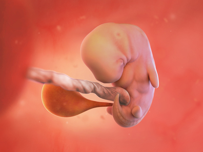
- 1. Sự phát triển của thai nhi
-
- Thai nhi bắt đầu có hình dạng giống con người, dài khoảng 10mm từ đầu đến chân, tương đương với kích thước của một quả nho.
- Phần đầu chiếm khoảng một nửa tổng chiều dài cơ thể. Đầu, thân, tay và chân dần được phân định rõ ràng, não bộ bắt đầu phát triển với tốc độ rất nhanh.
- Khoảng 80% tế bào thần kinh và não bộ được phân hóa trong giai đoạn này. Ống thần kinh, sau này sẽ phát triển thành cột sống và não bộ của em bé, đã được hình thành và đóng kín ở cả hai đầu, với phần não nằm ở phía trên.
- Lúc này, não của em bé được chia thành ba phần chính: não trước, não giữa và não sau.
- Điều đặc biệt là trong suốt thời gian mang thai, não của em bé phát triển rất nhanh, trung bình tăng khoảng 250.000 tế bào não mỗi phút. → Hãy nhớ bổ sung axit folic vì có thể giúp ngăn ngừa các khuyết tật trong quá trình phát triển của bé.
- Các ngón tay và ngón chân xuất hiện, đồng thời mắt, mũi, tai, miệng cũng bắt đầu hình thành dù vẫn còn rất mờ.
- Dạ dày và thực quản của bé bắt đầu hình thành. Thực quản là ống dẫn thức ăn từ miệng đến dạ dày.
- Gan và tuyến tụy của bé cũng bắt đầu phát triển trong tuần này.
- Giới tính vẫn chưa thể xác định bằng siêu âm, nhưng nhóm bộ phận sẽ phát triển thành buồng trứng hoặc tinh hoàn đã xuất hiện.
- 2. Thay đổi của cơ thể mẹ
-
Thường xuyên buồn tiểu.
- Khi mang thai, cơ thể tiết ra hormone hCG (융모성선 자극 호르몬). Một trong những tác dụng của hormone này là tăng lưu lượng máu về vùng chậu, khiến bàng quang dễ bị kích thích.
- Trong suốt thai kỳ, thể tích máu sẽ tăng lên đến 50%💉. Lượng máu bổ sung này sẽ cung cấp oxy và chất dinh dưỡng cần thiết cho tử cung của bạn. Điều này có thể khiến bạn cảm thấy khát hơn bình thường. Hãy cố gắng uống 8 cốc nước vừa mỗi ngày (chẳng hạn như nước lọc, trà hoa quả, nước ép trái cây, sữa tách béo hoặc sữa ít béo,...).
- Đồng thời, tử cung phát triển lớn hơn kích thước quả trứng ngỗng, cũng gây chèn ép bàng quang, làm mẹ cảm thấy buồn tiểu thường xuyên.
Táo bón
- Bụng và vùng thắt lưng có thể trở nên căng tức. Dưới ảnh hưởng của progesterone (황체호르몬), nhu động ruột giảm, thức ăn di chuyển qua hệ thống tiêu hóa chậm hơn, vì vậy mẹ dễ bị táo bón. Khi thai phát triển hơn theo từng tuần, tử cung ngày càng lớn và áp lực lên bàng quang sẽ tăng dần.
- Bạn có thể chống táo bón bằng cách ăn thực phẩm giàu chất xơ🥦🍠🍎 (như ngũ cốc nguyên hạt, trái cây, rau củ và các loại đậu), uống nhiều nước, tập thể dục, vitamin tổng hợp dành cho bà bầu và luôn đi vệ sinh khi cảm thấy buồn tiểu.
Chán ăn😟
Bạn có thể đột nhiên ngán một số loại thực phẩm từng thích. Chán ăn là một tác dụng phụ khác của việc nồng độ estrogen tăng nhanh. Chúng thường bắt đầu trong tam cá nguyệt đầu tiên và biến mất vào tam cá nguyệt thứ hai, cũng có mẹ bị mất cảm giác thèm ăn cho đến khi sinh.
Thay đổi tâm trạng
Nhiều mẹ nhận thấy tâm trạng thất thường💭😢😊 bùng phát vào khoảng tuần thứ 6 đến tuần thứ 10. Cảm xúc thất thường có thể do căng thẳng, mệt mỏi và thay đổi nội tiết tố gây ra. Ngoài ra, còn có nhiều cảm xúc khác nhau mà bạn có thể trải qua khi trở thành mẹ.
Nước bọt tiết ra quá nhiều
Việc tiết ra nhiều nước bọt hơn khi mang thai là điều bình thường. Những thay đổi về nội tiết tố, buồn nôn và ợ nóng đều có thể khiến bạn tiết nước bọt nhiều hơn trong thai kỳ. Hãy thử đánh răng thường xuyên hơn, ăn các bữa ăn nhỏ, cân bằng dinh dưỡng, và uống nhiều nước.
Ợ nóng🔥
- Ợ nóng (còn được gọi là chứng khó tiêu axit hoặc trào ngược axit) là cảm giác nóng rát giữa cổ họng dưới và xương ức. Tình trạng này rất khó chịu và không may là không thể tránh khỏi đối với một số mẹ bầu.
- Để giảm chứng ợ nóng: tránh các loại thực phẩm và đồ uống gây khó chịu cho dạ dày như đồ ăn quá chua-cay-nhiều dầu mỡ🌶️🍟, chia nhỏ bữa, kê cao gối khi ngủ và không ăn trong vòng 2-3 tiếng trước khi đi ngủ.
Kích cỡ ngực to dần
Bắt đầu từ bây giờ, bạn có thể nhận thấy ngực mình to lên rõ rệt và chúng sẽ tiếp tục phát triển trong suốt thai kỳ. Việc tăng thêm một hoặc hai size áo ngực là điều bình thường, đặc biệt nếu bạn có thai lần đầu. Bạn có thể cảm nhận ngứa ở vùng ngực khi da căng ra và có thể xuất hiện vết rạn da.
- 3. Lưu ý về sức khỏe
-
🎯Nếu phát hiện bất thường trong xét nghiệm máu cơ bản, cần xử lý sớm.
- Xét nghiệm bao gồm: nhóm máu, thiếu máu, viêm gan B, HIV (에이즈), giang mai (매독), lao (결핵), kháng thể rubella (풍진항체),... Nếu có kết quả bất thường, cần áp dụng biện pháp phù hợp.
- Nhóm máu: Nếu mẹ có nhóm máu Rh âm tính (Rh-) và thai nhi mang Rh dương tính (Rh+), cơ thể mẹ có thể tạo phản ứng miễn dịch phá hủy hồng cầu của thai nhi → gây tan máu, có khả năng dẫn đến thiếu máu nặng hoặc tử vong thai. → Nếu mẹ Rh âm tính, cần được tiêm Globulin miễn dịch (면역 글로블린 주사).
- Thiếu máu (빈혈): Thiếu máu cần kiểm tra đầu thai kỳ, giữa và cuối thai kỳ. Nếu lượng hemoglobin thấp, lượng máu cung cấp cho thai nhi sẽ không đủ.
- Nếu mẹ là người mang virus viêm gan B, có thể lây sang trẻ trong quá trình sinh. → ngay sau sinh, trẻ cần được tiêm Globulin miễn dịch (감마 글로블린) và vaccine để phòng ngừa lây nhiễm.
🎯Lưu ý đặc biệt đối với mẹ có bệnh nền
- Với bệnh tim, dù triệu chứng nhẹ vẫn có nguy cơ tiến triển bất ngờ trong thai kỳ.
- Người cao huyết áp dễ có nguy cơ tiền sản giật (임신중독증).
- Người bị động kinh (간질) dùng thuốc chống co giật trong giai đoạn sớm của thai kỳ có thể ảnh hưởng đến thai nhi.
- Nếu mẹ có bệnh nền hoặc đang dùng thuốc → cần trao đổi chặt chẽ với bác sĩ chuyên khoa để đánh giá việc tiếp tục thai kỳ và điều chỉnh thuốc phù hợp.
🎯Quy tắc sinh hoạt cho mẹ bầu
Bổ sung đầy đủ đạm và canxi
- Chế độ ăn cân bằng và đầy đủ dinh dưỡng là nguyên tắc cơ bản.
- Đặc biệt ở giai đoạn này, khi thai nhi bắt đầu hình thành rõ hình dạng người và tế bào não phát triển nhanh chóng, mẹ cần tăng cường thực phẩm giàu protein (단백질) và canxi (칼슘).
- Thực phẩm được khuyến nghị bao gồm: sữa, phô mai, sữa bột tách béo (탈지분유), tàu hủ, nấm, cá cơm, cá hồi, các loại đậu, thịt bò,...
- Ngoài ra, các thực phẩm sau cũng cần được bổ sung: khoai lang, ngũ cốc nguyên hạt, quả óc chó, sữa chua Hy Lạp, bông cải xanh và rau lá xanh đậm, trái cây và rau củ nhiều màu sắc, quả bơ và trái cây sấy khô,...
- ⚠️Hạn chế hoặc tránh uống nước có gas (탄산음료). Một số mẹ bầu bị ốm nghén (입덧) thường uống nước có gas để dễ chịu hơn. Tuy nhiên, nước có gas chứa nhiều đường → dễ tăng cân, và chứa phosphate, chất này cản trở hấp thu canxi trong cơ thể → Vì vậy, nên hạn chế hoặc tránh uống nước có gas.
Khi nào cần đến bệnh viện?
- Bình thường, trứng đã thụ tinh sẽ làm tổ trong niêm mạc tử cung (자궁내막). Tuy nhiên, thai ngoài tử cung (자궁외 임신) là tình trạng trứng làm tổ ở bên ngoài tử cung, trong đó 95% xảy ra tại vòi trứng (나팔관).
- Vòi trứng có đường kính rất nhỏ (1–3 mm). Khi thai phát triển tại đây, vòi trứng bị kéo giãn vượt giới hạn → vỡ vòi trứng, gây: đau bụng dữ dội vùng hạ vị (심한 하복부 통증), chảy máu trong ổ bụng, viêm phúc mạc (복막염 증상). Trường hợp nặng có thể gây sốc và nguy hiểm đến tính mạng.
- Thai ngoài tử cung thường biểu hiện rõ khoảng tuần 7–8, với dấu hiệu là đau bụng dữ dội, ra máu âm đạo (배가 몹시 아프고 출혈이 일어남). → Nếu có các dấu hiệu trên, cần đến bệnh viện ngay để kiểm tra sớm.
- 4. Quan hệ vợ chồng khi mang thai
-
Nên tránh kích thích mạnh hoặc quan hệ kéo dài.
Trong phần khởi động, ❌tránh đưa tay hoặc vật vào sâu trong âm đạo, để không gây kích thích trực tiếp đến tử cung.
Nên ưu tiên tư thế nhẹ nhàng, không gây áp lực lên bụng và không làm mẹ mệt.
- 5. Trọng tâm thai giáo
-
Hãy cố gắng duy trì tâm trạng vui vẻ và thư thái😊💗
Trong giai đoạn này, mẹ dễ trải qua:
- Lo lắng về việc mang thai
- Ốm nghén, mệt mỏi
- Thay đổi cảm xúc thất thường
Nếu mẹ buồn bực, căng thẳng hoặc giận dữ → thai nhi cũng sẽ phản ứng với trạng thái tương tự.
Khi mẹ căng thẳng, cơ thể tăng tiết hormone stress như:
- Adrenaline (아드레날린)
- Endorphin (엔도르핀)
- Steroid hormone (스테로이드 호르몬)
Những hormone này có thể đi qua nhau thai, làm giảm lượng máu và oxy đến thai nhi → ảnh hưởng đến phát triển não bộ → Trẻ có nguy cơ chậm phát triển trí tuệ, rối loạn vận động hoặc dễ bất an cảm xúc sau này.😔
Ngược lại, khi mẹ vui vẻ, nhẹ nhàng, hệ thống dẫn truyền thần kinh trong não thai nhi sẽ được kích hoạt đúng cách✨🧠, hỗ trợ phát triển khỏe mạnh.
🌸Vì vậy, thai giáo quan trọng nhất chính là giữ tâm trạng mẹ ổn định và an lành.
- 6. Các thông tin cần biết khác
-
Dinh dưỡng (영양)
- Việc mẹ bầu ăn đa dạng thực phẩm một cách hài hòa và vừa phải là rất quan trọng để đảm bảo cung cấp đầy đủ dinh dưỡng cân bằng. Mẹ hấp thụ dinh dưỡng đầy đủ → sức khỏe mẹ tốt → sức khỏe thai nhi tốt.
- Một trong những cách để xác định liệu mẹ bầu có đang hấp thụ dinh dưỡng đầy đủ hay không là theo dõi quá trình tăng cân. Việc tăng cân trong thai kỳ có liên quan đến cân nặng của trẻ sơ sinh khi chào đời.
- Đặc biệt, nếu mẹ bầu có thể trạng nhẹ cân trước khi mang thai + mức tăng cân trong thai kỳ thấp → nguy cơ thai nhi sinh ra nhẹ cân sẽ cao hơn.
- Mức tăng cân phù hợp của mẹ bầu sẽ khác nhau tùy thuộc vào tình trạng cân nặng trước khi mang thai và mức độ vận động trong thai kỳ, nhưng đối với những mẹ có chỉ số BMI bình thường, mức tăng cân hợp lý là khoảng 12–15kg.
Những chất dinh dưỡng mà mẹ bầu cần bổ sung để đảm bảo tăng cân hợp lý
1️⃣Năng lượng chung
- So với khi không mang thai, mẹ bầu cần bổ sung thêm khoảng 100–300 kcal mỗi ngày, và bắt đầu tăng lượng calo chủ yếu từ tam cá nguyệt thứ hai (제2삼분기).
- Trong tam cá nguyệt thứ hai, khuyến nghị bổ sung khoảng 340 kcal mỗi ngày.
- Trong tam cá nguyệt thứ ba (제3삼분기), nên bổ sung khoảng 450 kcal mỗi ngày.
- Từ giữa thai kỳ, nhu cầu về sắt (철분) tăng lên, vì vậy mẹ nên thường xuyên ăn các thực phẩm giàu sắt và đồng thời bổ sung đầy đủ vitamin C để giúp hấp thu sắt tốt hơn.
🍽️ Lượng calo khuyến nghị nên nạp mỗi ngày được tính theo công thức: cân nặng tiêu chuẩn (kg) × 35 (kcal/kg) + thêm 300 kcal mỗi ngày.
🥛 Để bổ sung thêm khoảng 300 kcal, bạn có thể ăn ví dụ như: 1 ly sữa ít béo (khoảng 80 kcal) + nửa quả cam (50 kcal) + 1 quả trứng (75 kcal) + 1 lát bánh mì (100 kcal) + 1 đĩa rau (20 kcal).
🍊 Các loại trái cây có mức năng lượng tương đương với nửa quả cam gồm: 1/3 quả táo, hoặc 2 quả cà chua nhỏ, hoặc 1/2 quả hồng giòn, v.v.
🍞 Các thực phẩm có mức năng lượng tương đương 1 lát bánh mì gồm: 1/3 bát cơm, hoặc 1 củ khoai tây, hoặc 1/2 củ khoai lang, hoặc 5 cái bánh quy giòn, v.v.
🥩 Thực phẩm giàu sắt bao gồm: các loại sò, hến và nghêu, gan bò, thịt bò, thịt heo, lòng đỏ trứng, và các loại rau lá xanh đậm.
🍓 Thực phẩm giàu vitamin C gồm: ớt xanh, rau chân vịt, lá ớt, kim chi củ cải non, dâu tây, cam, cà chua, v.v.
2️⃣Sắt (철분)
- Thành phần quan trọng trong máu của mẹ đóng vai trò vận chuyển chất dinh dưỡng và oxy cần thiết cho quá trình trao đổi chất của thai nhi chính là tế bào hồng cầu, và trong tế bào hồng cầu có chứa một loại protein sắc tố vận chuyển oxy có thành phần là sắt (철).
- Nhu cầu sắt mỗi ngày: khoảng 27 mg sắt nguyên tố. Có dạng viên và dạng nước (임산부 액상 철분제). Uống viên sắt có thể bị táo bón, nếu nặng, bạn nên chuyển sang dạng nước. Thường các sản phẩm bổ sung sắt cho mẹ bầu ở Hàn Quốc có hàm lượng 24-60 mg/1 lần dùng 1 ngày.
- Khi mang thai🤰, do thể tích huyết tương trong cơ thể tăng lên và nhu cầu về sắt cao hơn nên dù không có bệnh lý gì khác, thiếu máu do thai kỳ vẫn có thể xảy ra.
- Nếu mẹ bị thiếu máu, nên bổ sung sắt chuyên cho người bị thiếu máu (빈혈 철분제)💉 ngay từ đầu thai kỳ. Cần bổ sung 60–120 mg sắt nguyên tố /1 ngày, tùy mức độ thiếu máu và phác đồ của bác sĩ. Thường sẽ được tăng gấp đôi liều so với thai bình thường, uống liên tục ít nhất 3 tháng hoặc cho đến khi chỉ số máu cải thiện.
3️⃣Bổ sung Vitamin C giúp hấp thụ sắt
Duy trì chế độ ăn uống cân bằng, trong đó Vitamin C đóng vai trò hỗ trợ hiệu quả trong việc tăng cường hấp thụ sắt (철분), giúp đáp ứng nhu cầu trao đổi chất mạnh mẽ của thai nhi.
4️⃣Uống đủ nước
Nếu do ốm nghén (입덧) mà thường xuyên nôn ói, cơ thể rất dễ bị thiếu nước💧. Ngoài ra, khi mang thai, cơ thể dễ đổ mồ hôi nhiều hơn nên cần bù nước đầy đủ. Việc uống đủ nước giúp tạo máu và nước ối (양수), đồng thời hỗ trợ đào thải nhanh chóng các chất cặn bã ra ngoài cơ thể, có lợi cho việc kiểm soát cân nặng.
🚫Chú ý không tiêu thụ quá nhiều caffeine (카페인) như cà phê❌
Trong cà phê, trà đen (홍차), trà xanh (녹차), ca cao (코코아), nước ngọt có ga như cola (콜라) đều có chứa caffeine (카페인). Một đến hai cốc cà phê mỗi ngày không gây vấn đề, nhưng nếu tiêu thụ quá mức có thể gây khó ngủ vào ban đêm hoặc làm tăng nguy cơ sảy thai😣. Caffeine không chỉ có trong cà phê mà còn có trong trà, cola, ca cao và socola, vì vậy cần chú ý tổng lượng caffeine (카페인) tiêu thụ không vượt quá mức khuyến nghị.
5️⃣Axit folic (엽산제)
Việc bổ sung axit folic (엽산제) nên duy trì liên tục từ trước khi mang thai cho đến hết 12~14 tuần thai. Nếu trước đó từng mang thai con có dị tật ống thần kinh (신경관결손증), thì cần bổ sung liều cao axit folic (엽산) 4mg mỗi ngày.
6️⃣Vitamin tổng hợp dành cho bà bầu (산모용 종합 영양제)
Hầu hết các thai phụ có thể hấp thụ đầy đủ dinh dưỡng thông qua thực phẩm nên không bắt buộc phải uống thêm vitamin tổng hợp. Tuy nhiên, trong trường hợp ăn uống kén chọn, chỉ ăn một số loại thực phẩm nhất định hoặc thiếu cân đối, việc bổ sung vitamin và khoáng chất (미네랄) trong vitamin tổng hợp có thể giúp cân bằng dinh dưỡng cần thiết cho quá trình trao đổi chất.
-
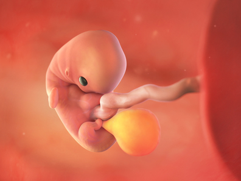
- 1. Sự phát triển của thai nhi
-
- Kích thước thai nhi khoảng 1.5cm, nặng khoảng 2g🥰.
- Thai nhi có những cử động đầu tiên từ tuần thứ 7 đến tuần thứ 8 và có thể nhìn thấy trên siêu âm, nhưng chưa đủ mạnh để mẹ cảm nhận được.
- Hệ hô hấp đang hình thành. Hệ thống ống thở kéo dài từ cổ họng đến các nhánh phổi đang phát triển.
- Mạng lưới dây thần kinh đang lan rộng khắp cơ thể thai nhi, tạo sự kết nối lẫn nhau và kết nối với các cơ, mô, cơ quan như mắt và tai.
- Ngón tay và ngón chân được hình thành, các dây thần kinh thị giác (시신경) của mắt và dây thần kinh thính giác (청각신경) ở tai đang phát triển.
- 2. Thay đổi của cơ thể mẹ
-
- Bầu ngực trở nên to hơn, căng cứng hơn và nặng hơn, có mẹ cảm thấy hơi đau. Màu sắc của núm vú dần sẫm màu, bụng hơi căng tức. Vì nồng độ hormone tăng cao khiến ngực của bạn phát triển để chuẩn bị cho việc sản xuất sữa mẹ 🤱.
- Khí hư màu trắng gia tăng, nhưng không có gì đáng lo ngại. Khí hư bình thường có màu trong suốt đến trắng sữa, loãng hoặc đặc, có mùi nhẹ hoặc không mùi. Tuy nhiên, khí hư màu hơi xanh, mùi khó chịu, gây đau hoặc ngứa,... có thể là dấu hiệu của nhiễm trùng hoặc một vấn đề khác ⚠️.
- Bạn có thể mơ những giấc mơ kỳ lạ khi mang thai 🌙. Điều này là do cảm xúc phức tạp khi được làm mẹ như sự phấn khích, nỗi sợ hãi, lo lắng.
- Đau đầu là tình trạng phổ biến trong thai kỳ, do các yếu tố như tăng lưu lượng máu, mệt mỏi, cắt giảm caffeine,... 😣. Hãy hỏi ý kiến bác sĩ trước khi dùng thuốc giảm đau đầu 🩺. Nhìn chung, acetaminophen an toàn khi dùng theo chỉ dẫn trong thai kỳ, nhưng aspirin, ibuprofen và hầu hết các loại thuốc đau nửa đầu theo toa thì không 🚫. Bạn cũng có thể thử một số biện pháp tự nhiên để giảm đau đầu, chẳng hạn như mát-xa, chườm nóng, thực hành các kỹ thuật thư giãn, tập thể dục và tắm vòi sen 🌼.
- Ốm nghén nghiêm trọng có thể xảy ra ở 3% thai phụ, dẫn đến mất nước, sụt cân và các biến chứng khác 😵💫. Hãy đi khám nếu bạn có các biểu hiện sau: không thể ăn uống được bất cứ thứ gì, nôn ra máu, sụt hơn 2.2 kg, cảm thấy yếu, ngất xỉu hoặc chóng mặt, bị sốt hoặc đau bụng, nước tiểu sẫm màu và có mùi mạnh,...
- 3. Lưu ý về sức khỏe
-
- 📸Tạo một khoảng thời gian thú vị trong thai kỳ bằng cách ghi lại hình ảnh bụng bầu lớn dần mỗi tuần, mỗi tháng.
- 💛Chú ý đến sức khỏe tinh thần của bạn. Cảm thấy buồn bã trong thai kỳ là điều bình thường. Nhưng nếu cảm xúc ủ dột kéo dài hơn hai tuần, hãy làm bài kiểm tra trầm cảm trước khi sinh và thảo luận kết quả với bác sĩ👩⚕️👨⚕️.
- 😴Tập trung vào giấc ngủ ngon khi mang thai. Trong giai đoạn đầu mang thai, bạn có thể kiệt sức hơn bạn tưởng tượng. Cần rất nhiều năng lượng để tạo nên một sinh linh mới👶! Mang thai cũng mang đến một loạt các rối loạn giấc ngủ như đi tiểu thường xuyên, buồn nôn, ợ nóng, chuột rút ở chân và ngáy ngủ. Hãy nghỉ ngơi nhiều hơn bằng cách đi ngủ sớm🌙 và thức dậy với tinh thần sảng khoái vào ngày hôm sau.
- ☀️🧴Sử dụng kem chống nắng luôn quan trọng, nhưng trong thai kỳ, nó có thể giúp bạn tránh tình trạng nám da hoặc chloasma - những mảng da sẫm màu trên mặt hoặc cơ thể, có thể do thay đổi nội tiết tố gây ra. Nám da thường xuất hiện xung quanh môi trên, mũi, gò má và trán theo hình dạng như mặt nạ. Những đốm nám này sẽ biến mất sau khi sinh. Tránh xa ánh nắng mặt trời🌞 và sử dụng kem chống nắng phổ rộng có SPF 30 trở lên mỗi ngày (dù trời có nắng hay không) là cách tốt nhất để ngăn ngừa nám da.
⚠️Kiểm tra ung thư cổ tử cung (자궁경부암 검사)
Ung thư cổ tử cung có thể xảy ra ngay cả ở phụ nữ trẻ. Trong giai đoạn đầu thai kỳ, mọi thai phụ đều sẽ khám tại khoa sản phụ khoa, tuy nhiên nếu chỉ tập trung vào việc mang thai mà bỏ qua xét nghiệm ung thư, thì sau sinh có thể phát hiện bệnh đã tiến triển. Vì vậy, để phòng ngừa và điều trị sớm ung thư cổ tử cung, nên xét nghiệm sớm ngay cả trong giai đoạn đầu thai kỳ.
Quy tắc sinh hoạt cho mẹ bầu
Hãy ăn các thực phẩm giàu sắt🥬🥩🦪 để hỗ trợ quá trình trao đổi chất của thai nhi.
Vì thai nhi hấp thu sắt từ cơ thể mẹ, nên nếu mẹ thiếu sắt sẽ dễ bị thiếu máu.
Cần chú ý bổ sung các thực phẩm giàu sắt như rau bina, gan, hàu, nghêu, các loại rong biển (해조류), lá mè (깻잎) và các thực phẩm giàu sắt khác.
Hãy cẩn trọng với việc tăng cân. Nếu tăng cân quá mức trong thai kỳ, nguy cơ mắc tiền sản giật (임신중독증) và tiểu đường thai kỳ sẽ tăng cao.
Ngoài ra, mẹ dễ mệt mỏi, đau lưng nặng hơn và khi sinh có thể gặp khó khăn dẫn đến chuyển dạ kéo dài. Sau sinh, việc giảm cân cũng trở nên khó hơn và có thể dẫn đến béo phì lâu dài.
📋Nên ghi chú vào bảng theo dõi cân nặng hàng tuần và dán ở nơi dễ nhìn thấy, hoặc trên ứng dụng điện thoại. Việc nhìn thấy mỗi ngày sẽ giúp mẹ kiểm soát cân nặng tốt hơn và tránh tăng cân quá mức.
Hãy tránh uống rượu bia❌❌. Rượu bia uống vào cơ thể mẹ sẽ truyền qua dây rốn (탯줄) và gây ảnh hưởng trực tiếp đến sự phát triển của thai nhi.
Đặc biệt, cồn đi qua nhau thai (태반) rất dễ ảnh hưởng mạnh đến tế bào não.
Nếu mẹ bầu uống một lượng rượu bia nhất định, có thể gây ra rối loạn tăng trưởng trước hoặc sau sinh, suy giảm trí tuệ, rối loạn hành vi và các vấn đề hệ thần kinh trung ương, hoặc gây dị tật như đầu nhỏ hoặc khuôn mặt phẳng.
Những ảnh hưởng này được gọi là “Rối loạn phổ rượu ở thai nhi (태아알코올증후군)”. Một số nghiên cứu cho thấy chỉ một đến hai ly rượu nhỏ mỗi ngày cũng có thể làm giảm cân nặng sơ sinh và tăng tỷ lệ sảy thai.
Thống kê ở các nước phương Tây cho thấy rượu là nguyên nhân phổ biến gây suy giảm trí tuệ và dị tật. Vì vậy, ngay cả lượng nhỏ cũng có thể gây ảnh hưởng nghiêm trọng, mẹ bầu cần đặc biệt hạn chế.
Không phải mọi trường hợp chảy máu đều là dấu hiệu sảy thai.
Tình trạng lộ tuyến cổ tử cung (자궁경부미란) xảy ra khi tuần hoàn máu ở cổ tử cung quá mạnh🩸 khiến niêm mạc dễ bị trầy xước và gây chảy máu; đây là nguyên nhân chảy máu phổ biến nhất trong thai kỳ. Không gây đau, nhưng cổ tử cung có thể sưng đỏ và có thể xuất hiện máu lẫn trong dịch tiết hoặc chảy máu sau quan hệ tình dục. Tình trạng này không ảnh hưởng đến việc duy trì thai kỳ.
Ngoài ra, nếu có polyp cổ tử cung (자궁경관폴립) là khối u lành nhỏ trong cổ tử cung, cũng có thể gây chảy máu nhẹ nhưng có thể loại bỏ dễ dàng bằng thủ thuật đơn giản, vì vậy không cần lo lắng quá mức.
- 4. Quan hệ vợ chồng khi mang thai
-
Hãy tránh kích thích mạnh hoặc quan hệ kéo dài. Vì thời điểm này phôi thai vẫn đang trong giai đoạn làm tổ chưa hoàn chỉnh, nên cẩn thận là điều cần thiết. Tư thế chính diện, trong đó chồng ở phía trên đối mặt với vợ, được xem là phù hợp. Để hạn chế việc xâm nhập sâu, mẹ bầu có thể co đầu gối để giảm áp lực lên tử cung. Ngoài ra, trong tinh dịch có chứa chất gây co bóp tử cung. Sự co bóp này trong một số trường hợp có thể dẫn đến nguy cơ sảy thai. Vì vậy, sử dụng bao cao su để ngăn tiếp xúc trực tiếp với tinh dịch là một lựa chọn an toàn.
- 5. Trọng tâm thai giáo
-
Hãy dán những bức ảnh em bé đáng yêu trong nhà và ngắm chúng😊😍. Đây là giai đoạn thị giác của thai nhi bắt đầu hình thành. Khi mẹ thường xuyên nhìn những hình ảnh em bé dễ thương và tưởng tượng về thai nhi trong bụng, đó sẽ là một hình thức thai giáo tốt.
- 6. Các thông tin cần biết khác
-
📍Sự quan tâm của chồng
Trong thời kỳ ốm nghén (입덧)🤢, mẹ trở nên nhạy cảm với mùi, khẩu vị thay đổi liên tục và buồn nôn. Việc chuẩn bị bữa ăn có thể trở nên rất vất vả. Để giúp người vợ luôn mệt mỏi, buồn ngủ và dễ kiệt sức, người chồng có thể chia sẻ việc nấu ăn👨🍳. Chia sẻ việc đi chợ, sơ chế thực phẩm, nấu ăn, dọn bàn và rửa chén sẽ giúp mẹ bầu trải qua giai đoạn ốm nghén nhẹ nhàng hơn💗.
📍Chụp X-quang khi mang thai (임신 중 X-ray 촬영)
Việc tiếp xúc với tia phóng xạ trong thai kỳ được cho là thiếu an toàn, từ tuần 8 đến tuần 15, và từ tuần 16 đến 25 vẫn có thể làm tăng nguy cơ chậm phát triển trí tuệ🧠. Tuy nhiên, ảnh hưởng này phụ thuộc nhiều vào liều lượng phóng xạ. Nếu lượng phóng xạ dưới 5rad thì không làm tăng nguy cơ dị tật. Trong chụp X-quang ngực, lượng phóng xạ mỗi ảnh rất thấp (0.01–0.05 mrad), vì vậy khi sử dụng dụng cụ bảo vệ vùng bụng và chỉ chụp 1–2 ảnh thì không gây hại cho thai nhi.
📍Điện từ trường
Điện từ trường (전자파)⚡ phát ra từ các thiết bị điện, đường dây điện cao thế, nam châm,... Hiện chỉ có giả thuyết rằng điện từ trường có ảnh hưởng đến thai kỳ, nhưng chưa có kết luận nghiên cứu rõ ràng.
📍Đi du lịch khi mang thai
Việc đi du lịch✈️ trong thai kỳ không phải là chống chỉ định. Tuy nhiên, giai đoạn đầu thai kỳ dễ xuất hiện dấu hiệu sảy thai, còn cuối thai kỳ có thể chuyển dạ bất cứ lúc nào, vì vậy, nên tránh di chuyển xa trong những thời điểm này. Du lịch nước ngoài có thể khiến mẹ tiếp xúc với các bệnh truyền nhiễm(감염병), nếu xảy ra vấn đề liên quan đến thai kỳ thì việc tìm bệnh viện và giao tiếp có thể khó khăn, vì vậy cần tham khảo ý kiến bác sĩ trước khi đi👨⚕️.
- Khi ngồi xe đường dài🚗, nên thắt dây an toàn loại 3 điểm(3점 형식의 안전벨트) và thỉnh thoảng cử động để giúp máu lưu thông(혈액순환이 잘되도록 하는 것) ở chân. Ngồi bất động quá lâu có thể gây giãn tĩnh mạch hoặc hình thành cục máu đông(정맥류나 정맥 혈전증). Nên mang tất áp lực y tế phòng huyết khối(의료용 혈전 예방 압박 스타킹), và cứ mỗi 1 giờ thay đổi tư thế hoặc nghỉ ngơi và duỗi chân.
- Có thể đi máy bay✈️ cho đến tuần 36, nhưng mỗi hãng hàng không có quy định riêng, nên cần kiểm tra trước. Khi trên máy bay, không nên ngồi quá lâu mà hãy đứng dậy vận động mỗi 1–2 giờ.
-
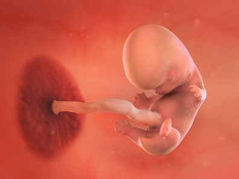
- 1. Sự phát triển của thai nhi
-
- 2. Thay đổi của cơ thể mẹ
-
- 3. Lưu ý về sức khỏe
-
- 4. Quan hệ vợ chồng khi mang thai
-
- 5. Trọng tâm thai giáo
-
- 6. Các thông tin cần biết khác
-
-
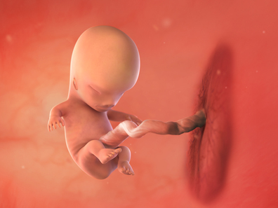
- 1. Sự phát triển của thai nhi
-
- 2. Thay đổi của cơ thể mẹ
-
- 3. Lưu ý về sức khỏe
-
- 4. Quan hệ vợ chồng khi mang thai
-
- 5. Trọng tâm thai giáo
-
- 6. Các thông tin cần biết khác
-
-
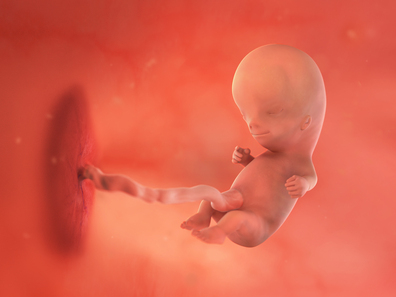
- 1. Sự phát triển của thai nhi
-
- 2. Thay đổi của cơ thể mẹ
-
- 3. Lưu ý về sức khỏe
-
- 4. Quan hệ vợ chồng khi mang thai
-
- 5. Trọng tâm thai giáo
-
- 6. Các thông tin cần biết khác
-
-
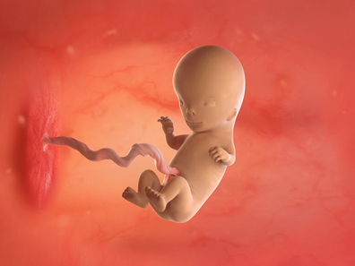
- 1. Sự phát triển của thai nhi
-
- 2. Thay đổi của cơ thể mẹ
-
- 3. Lưu ý về sức khỏe
-
- 4. Quan hệ vợ chồng khi mang thai
-
- 5. Trọng tâm thai giáo
-
- 6. Các thông tin cần biết khác
-
-
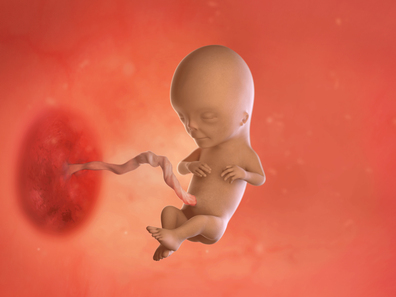
- 1. Sự phát triển của thai nhi
-
- 2. Thay đổi của cơ thể mẹ
-
- 3. Lưu ý về sức khỏe
-
- 4. Quan hệ vợ chồng khi mang thai
-
- 5. Trọng tâm thai giáo
-
- 6. Các thông tin cần biết khác
-
-
- 1. Sự phát triển của thai nhi
-
- 2. Thay đổi của cơ thể mẹ
-
- 3. Lưu ý về sức khỏe
-
- 4. Quan hệ vợ chồng khi mang thai
-
- 5. Trọng tâm thai giáo
-
- 6. Các thông tin cần biết khác
-
-
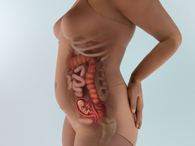
- 1. Sự phát triển của thai nhi
-
- 2. Thay đổi của cơ thể mẹ
-
- 3. Lưu ý về sức khỏe
-
- 4. Quan hệ vợ chồng khi mang thai
-
- 5. Trọng tâm thai giáo
-
- 6. Các thông tin cần biết khác
-
-
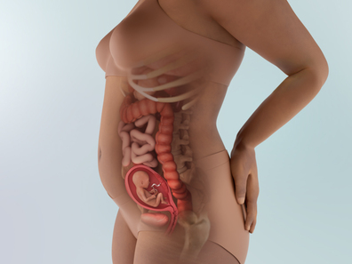
- 1. Sự phát triển của thai nhi
-
- 2. Thay đổi của cơ thể mẹ
-
- 3. Lưu ý về sức khỏe
-
- 4. Quan hệ vợ chồng khi mang thai
-
- 5. Trọng tâm thai giáo
-
- 6. Các thông tin cần biết khác
-
-
- 1. Sự phát triển của thai nhi
-
- 2. Thay đổi của cơ thể mẹ
-
- 3. Lưu ý về sức khỏe
-
- 4. Quan hệ vợ chồng khi mang thai
-
- 5. Trọng tâm thai giáo
-
- 6. Các thông tin cần biết khác
-
-
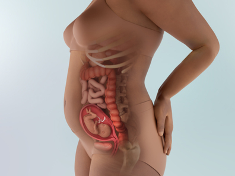
- 1. Sự phát triển của thai nhi
-
- 2. Thay đổi của cơ thể mẹ
-
- 3. Lưu ý về sức khỏe
-
- 4. Quan hệ vợ chồng khi mang thai
-
- 5. Trọng tâm thai giáo
-
- 6. Các thông tin cần biết khác
-
-
- 1. Sự phát triển của thai nhi
-
- 2. Thay đổi của cơ thể mẹ
-
- 3. Lưu ý về sức khỏe
-
- 4. Quan hệ vợ chồng khi mang thai
-
- 5. Trọng tâm thai giáo
-
- 6. Các thông tin cần biết khác
-
-
- 1. Sự phát triển của thai nhi
-
- 2. Thay đổi của cơ thể mẹ
-
- 3. Lưu ý về sức khỏe
-
- 4. Quan hệ vợ chồng khi mang thai
-
- 5. Trọng tâm thai giáo
-
- 6. Các thông tin cần biết khác
-
-
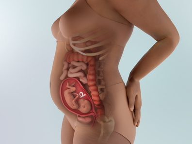
- 1. Sự phát triển của thai nhi
-
- 2. Thay đổi của cơ thể mẹ
-
- 3. Lưu ý về sức khỏe
-
- 4. Quan hệ vợ chồng khi mang thai
-
- 5. Trọng tâm thai giáo
-
- 6. Các thông tin cần biết khác
-
-
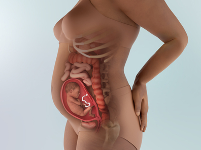
- 1. Sự phát triển của thai nhi
-
- 2. Thay đổi của cơ thể mẹ
-
- 3. Lưu ý về sức khỏe
-
- 4. Quan hệ vợ chồng khi mang thai
-
- 5. Trọng tâm thai giáo
-
- 6. Các thông tin cần biết khác
-
-
- 1. Sự phát triển của thai nhi
-
- 2. Thay đổi của cơ thể mẹ
-
- 3. Lưu ý về sức khỏe
-
- 4. Quan hệ vợ chồng khi mang thai
-
- 5. Trọng tâm thai giáo
-
- 6. Các thông tin cần biết khác
-
-
- 1. Sự phát triển của thai nhi
-
- 2. Thay đổi của cơ thể mẹ
-
- 3. Lưu ý về sức khỏe
-
- 4. Quan hệ vợ chồng khi mang thai
-
- 5. Trọng tâm thai giáo
-
- 6. Các thông tin cần biết khác
-
-
- 1. Sự phát triển của thai nhi
-
- 2. Thay đổi của cơ thể mẹ
-
- 3. Lưu ý về sức khỏe
-
- 4. Quan hệ vợ chồng khi mang thai
-
- 5. Trọng tâm thai giáo
-
- 6. Các thông tin cần biết khác
-
-
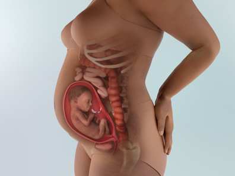
- 1. Sự phát triển của thai nhi
-
- 2. Thay đổi của cơ thể mẹ
-
- 3. Lưu ý về sức khỏe
-
- 4. Quan hệ vợ chồng khi mang thai
-
- 5. Trọng tâm thai giáo
-
- 6. Các thông tin cần biết khác
-
-
- 1. Sự phát triển của thai nhi
-
Kích cỡ bé khoảng 37cm, nặng khoảng 880g.
Mở mắt: Đôi mắt của bé bây giờ đã có thể mở và nhắm lại. Bé có thể phản ứng với ánh sáng: nếu bạn chiếu một đèn pin vào bụng, bạn có thể cảm nhận những chuyển động khẽ, như bé đang di chuyển hoặc rung mình.🐣
Nấc trong bụng mẹ: Những chuyển động nhỏ và đều thì rất có thể là bé đang nấc (fetal hiccups). Mỗi lần nấc thường chỉ kéo dài trong một khoảng thời gian ngắn và hoàn toàn bình thường, nên mẹ cứ thư giãn và tận hưởng cảm giác thú vị này.💗
Vị giác trên lưỡi đã phát triển hoàn thiện: Bé có thể cảm nhận vị rõ ràng hơn bao giờ hết. Tuy nhiên, thức ăn mẹ ăn không truyền ngay lập tức vào nước ối, mà cần khoảng 2 giờ để hương vị ảnh hưởng tới nước ối.
Khoảng 2 giờ sau khi mẹ ăn món cay, bé cũng sẽ cảm nhận được vị cay trong nước ối👅. Khi mẹ ăn đồ cay hoặc có vị kích thích mạnh, đôi khi bé có thể bắt đầu nấc (딸꾹질). Tuy nhiên, đồ ăn quá cay và kích thích mạnh không tốt cho tiêu hóa, cảm giác nóng rát dạ dày và tình trạng phù nề (부종) của mẹ, nên mẹ hãy chú ý hạn chế.
Cơ thể nhăn nheo trước đây đang trở nên đầy đặn hơn: Do trước đây lớp mỡ dưới da còn thiếu nên làn da của bé trông nhăn nheo như một cụ già nhỏ. Nhưng bây giờ lớp mỡ dưới da (피하지방) đang dần hình thành, khiến cơ thể bé trở nên đầy đặn hơn🍑. Các cơ cũng đang dần có độ đàn hồi (탄력).
Bé vẫn đang liên tục nuốt nước ối (양수): Nước ối mà bé nuốt sẽ đi qua thận (콩팥) rồi được thải ra ngoài dưới dạng nước tiểu💧. Chu trình này lặp lại khoảng mỗi 3 giờ một lần.
Chuẩn bị cho việc hít thở: Phổi của bé đang tạo ra chất surfactant (chất hoạt diện). Đây là một chất lỏng giúp các alveoli (phế nang - túi khí nhỏ trong phổi) luôn mở, từ đó giúp bé có thể tự thở sau khi chào đời. Nhờ sự phát triển của các phế nang, số lượng mạch máu xung quanh tăng mạnh để hấp thụ oxy và thải CO₂ cho thai nhi. 👶Lỗ mũi đã mở ra, bé có thể tự thực hiện các nhịp thở nông và thậm chí có thể phát ra âm thanh. Tuy đã phát triển đến mức có thể hoạt động như một con người nhỏ, nhưng vì các cơ quan vẫn còn chưa trưởng thành nên nếu sinh non vào thời điểm này thì gần như không thể tự sống được bên ngoài tử cung.
🎉 Con đang vui vẻ vận động (신나게 놀고 있어요)
Đôi khi bé có thể cử động mạnh đến mức khiến mẹ giật mình😆. Nhưng việc bé vận động tích cực là dấu hiệu bé khỏe mạnh, nên mẹ cứ yên tâm nhé!
- 2. Thay đổi của cơ thể mẹ
-
Bụng to hơn nên mẹ có thể cảm nhận nhiều hơn các đau nhức khi mang thai.
- Đây là điều bình thường khi tam cá nguyệt thứ ba sắp đến.
- Đai đỡ bụng (pregnancy belt / belly band) có thể hỗ trợ phần bụng và lưng dưới, giúp giảm đau vùng chậu và đau lưng. Một số loại đai quấn gọn quanh hông và nằm dưới bụng, trong khi một số loại bao quanh toàn bộ bụng và hỗ trợ từ hông đến dưới ngực.
- Một trong những cách tốt nhất để phòng tránh và giảm đau là duy trì vận động thể chất an toàn cho thai kỳ. Tập thể dục nhẹ nhàng giúp giảm nhiều triệu chứng khó chịu như táo bón, đầy hơi và đau lưng. Vận động đúng giúp kiểm soát tăng cân, tăng sức mạnh cơ, cải thiện tư thế và hỗ trợ tuần hoàn máu.
- Để giảm đau lưng và đau vùng chậu: hãy ngồi trên ghế có tựa vững, ngồi xuống khi mặc quần áo, nâng vật nặng đúng tư thế, và hạn chế đứng trong thời gian dài nếu có thể.
Đường nâu giữa bụng (임신선) trở nên đậm hơn và có thể bị chuột rút về đêm.
- Đáy tử cung lúc này cao khoảng 24~28cm khiến bụng nhô rõ. Bụng lớn lên làm trọng tâm cơ thể thay đổi, khiến việc giữ thăng bằng khó hơn và cử động trở nên vụng về. Đây là thời điểm dễ té ngã nên cần đặc biệt cẩn thận.
- Cân nặng thường tăng từ 6-7kg trở lên, gây áp lực lên đôi chân, làm cơ chân nhanh mỏi. Chân có thể bị sưng, nặng, và đôi khi bị chuột rút do tĩnh mạch đùi bị chèn ép. Triệu chứng này có xu hướng nặng hơn vào ban đêm, và việc xoa bóp nhẹ bắp chân có thể giúp giảm bớt.
- Vết rạn da màu tím (보라색 선) trong thai kỳ là thay đổi tự nhiên của da.
- Nếu mẹ thấy xuất hiện những đường rạn màu nâu tím ở bụng, ngực hoặc mông, đó là do da bị kéo giãn, khiến mạch máu dưới da bị giãn và lộ ra.
- Tình trạng này thường xảy ra nhiều hơn ở mẹ tăng cân nhanh hoặc có làn da mỏng, yếu. Sau sinh, những vết rạn này sẽ dần mờ nhạt và biến mất tự nhiên.
Lông tóc mọc nhiều, dày và khỏe hơn.
- Do ảnh hưởng từ thay đổi nội tiết tố nên nhiều nang tóc phát triển. Đây là một trong những thay đổi tích cực mà nhiều phụ nữ mang thai yêu thích.
- Tuy nhiên, song song với đó, lông ở mặt và cơ thể cũng có thể mọc nhiều hơn. Nếu điều này khiến bạn khó chịu, các phương pháp loại bỏ lông an toàn gồm waxing, nhổ, cạo hoặc threading (se chỉ). Có rất ít nghiên cứu về độ an toàn của laser, kem tẩy lông hoặc thuốc làm rụng lông trong thai kỳ, nên tránh dùng.
Hội chứng chân không yên (Restless Leg Syndrome - RLS)
- Vào 3 tháng cuối thai kỳ, một số phụ nữ có cảm giác chân như bị châm chích, ngứa ngáy, râm ran, khó chịu,... và kèm theo thôi thúc muốn cử động chân khi đang nghỉ ngơi hoặc nằm ngủ. Nếu cảm giác này giảm bớt khi bạn chuyển động, rất có thể bạn mắc RLS.
- Người ta chưa rõ lý do chính xác vì sao 20% thai phụ gặp RLS. Thiếu sắt, thiếu folate, thay đổi nội tiết tố và thay đổi tuần hoàn máu đều có thể liên quan.
- Nếu bạn có triệu chứng RLS, hãy tránh nằm trên giường quá lâu trước khi ngủ, vì càng nằm lâu triệu chứng càng nặng.
- Tin tốt là RLS sẽ biến mất sau sinh. Trong thời gian này, nên vận động nhẹ, giãn cơ, thiền, và massage để giúp giảm khó chịu. Một số phụ nữ cho biết việc bổ sung canxi, magie, hoặc sắt (dưới hướng dẫn của bác sĩ), ăn chuối,... sẽ giúp dễ ngủ hơn.
Tiểu không tự chủ (urinary incontinence)
- Thay đổi nội tiết làm các cơ vùng đáy chậu giãn ra, giảm khả năng nâng đỡ bàng quang nên nhiều thai phụ bị rò rỉ nước tiểu. Đồng thời, tăng lượng máu khiến thận tạo ra nhiều nước tiểu hơn.
- Phụ nữ trên 35 tuổi, đã từng sinh thường, hoặc thừa cân dễ gặp tình trạng này hơn. Tiền sử gia đình hoặc bệnh lý mạn tính cũng làm tăng nguy cơ.
- Tránh cà phê, trà, nước ngọt có ga và uống nước lọc sẽ giúp giảm triệu chứng. Tập bài tập cơ đáy chậu (Kegels) và ăn đủ chất xơ cũng hữu ích.
- Nếu gặp tình trạng này, hãy trao đổi với bác sĩ - họ sẽ kiểm tra xem có nhiễm trùng tiểu hay không và đưa ra hướng hỗ trợ phù hợp.
Sưng phù (Edema)
- Sưng vừa phải, đặc biệt ở bàn chân và mắt cá, là tình trạng phổ biến trong tam cá nguyệt thứ 3, xuất hiện ở khoảng 2/3 phụ nữ mang thai.
- Thay đổi nội tiết và cơ thể tự nhiên tích nước để hỗ trợ thai kỳ là nguyên nhân chủ yếu. Cuối thai kỳ, cơ thể tăng khoảng 1–1.5kg nước.
- Tử cung ngày càng lớn gây áp lực lên các tĩnh mạch, làm chậm dòng máu trở về từ chân, khiến dịch thoát ra mô gây sưng. Sưng nặng hơn khi mẹ đứng hoặc ngồi lâu.
- Để giảm sưng: nghỉ ngơi, gác chân cao, mang compression socks (vớ áp lực), uống đủ nước, ngủ nghiêng trái, massage và ăn uống lành mạnh.
- Hầu hết trường hợp sưng là bình thường, nhưng nếu sưng nhiều, đột ngột, chỉ một bên, hoặc sưng mặt và tay, cần báo bác sĩ vì có thể liên quan đến tiền sản giật (preeclampsia) hoặc huyết khối tĩnh mạch sâu (DVT).
Tăng cân
- Tăng cân quá nhiều hoặc quá ít đều có thể làm tăng nguy cơ biến chứng, nên mẹ cần theo dõi. Nếu mẹ có cân nặng bình thường trước khi mang thai và mang một thai, nên tăng khoảng 11–16kg. Nếu thiếu cân: tăng 13–18kg; nếu thừa cân: tăng 7–11kg; nếu béo phì: tăng 5–9kg (mang song thai thì mức tăng sẽ cao hơn).
- Trong tam cá nguyệt thứ 3, mẹ cần thêm khoảng 450 kcal mỗi ngày. Không được giảm cân khi đang mang thai, nhưng cũng nên tránh tăng quá nhanh. Nếu khó kiểm soát, hãy trao đổi với bác sĩ hoặc chuyên gia dinh dưỡng.
Đau vùng chậu (Pelvic pain / Pelvic girdle pain)
- Khi thai lớn, mẹ có thể cảm thấy đau nhói hoặc âm ỉ ở hông và vùng háng. Nguyên nhân là thay đổi nội tiết, tăng cân, và trọng tâm cơ thể thay đổi.
- Đai nâng bụng (pregnancy girdle / belly band) hoặc gối ôm bà bầu có thể giúp giảm đau. Khi nằm ngủ, kẹp một chiếc gối giữa hai đầu gối để giữ hông ở vị trí cân bằng.
- Nếu đau nhiều, bác sĩ có thể gợi ý vật lý trị liệu hoặc thuốc giảm đau phù hợp. Tập vận động nhẹ và nghỉ ngơi giữa các hoạt động cũng giúp giảm đau.
- 3. Lưu ý về sức khỏe
-
⚠️Tư thế ngủ thoải mái nhất là nằm nghiêng.
- Ở giai đoạn này, rất khó nằm ngửa vì bụng lớn. Nằm ngửa trong tam cá nguyệt giữa và cuối không tốt, vì tử cung lớn chèn ép tĩnh mạch chủ dọc cột sống, gây giảm tuần hoàn. Nằm nghiêng và kê một chân lên gối hoặc đặt gối giữa hai chân giúp nâng đỡ bụng và tạo cảm giác an toàn.
- Nằm sấp không tốt vì gây xoay cổ lâu, dễ đau và gây chèn ép bụng.
- Tư thế ngủ chỉ là một phần, độ cao gối và độ cứng bề mặt nằm cũng rất quan trọng. Gối quá cao làm căng cơ cổ và vai, gây đau đầu hoặc choáng. Độ cao gối thích hợp khoảng 12cm khi nằm nghiêng.
- Việc nằm trên ván cứng để giảm đau lưng là sai❌, vì không hỗ trợ đều cho cơ thể, khiến đau nặng hơn. Đệm quá mềm cũng không tốt vì không nâng đỡ được đường cong sinh lý cột sống.
Cần lựa chọn bề mặt hỗ trợ vừa phải để duy trì đường cong S tự nhiên của cột sống.
⚠️Cẩn thận với tiền sản giật, tăng huyết áp thai kỳ và triệu chứng có protein trong nước tiểu
- Các triệu chứng có thể bao gồm: tăng cân đột ngột, phù nề, giảm lượng nước tiểu,… nhưng những biểu hiện này dễ nhầm với triệu chứng thai kỳ bình thường, vì vậy không thể chỉ dựa trên triệu chứng để phát hiện. Thường bệnh được phát hiện qua xét nghiệm nước tiểu, xét nghiệm máu và đo huyết áp.
- Tiền sản giật mức độ nhẹ có thể điều trị tại nhà. Sinh non ở giai đoạn này, thai nhi rất khó sống bên ngoài tử cung, nên nếu xuất hiện tiền sản giật phải điều trị sớm.
- Tăng huyết áp được xác định khi huyết áp tâm thu ≥ 140mmHg hoặc huyết áp tâm trương ≥ 90mmHg, thường kèm đau đầu hoặc chóng mặt. Protein niệu có thể đi kèm mệt mỏi bất thường, chán ăn, lượng nước tiểu giảm và cảm giác rất khát. Nếu vượt chỉ số đó, kèm protein niệu và phù nề nặng, nên nhập viện.
- Nếu triệu chứng nhẹ, có thể nghỉ ngơi và điều chỉnh chế độ ăn tại nhà.
- Nên ngủ ít nhất 8 tiếng mỗi ngày và ngủ trưa khoảng 1 tiếng😴. Khi nghỉ ngơi, nên nằm nghiêng để tăng lưu lượng máu đến thận và nhau thai. Tránh làm việc quá sức và căng thẳng tâm lý, vì điều này làm tăng huyết áp và giảm tuần hoàn.
- Với mẹ bầu đi làm, cần đặc biệt lưu ý vì việc đi lại, đứng lâu và áp lực công việc dễ gây quá tải. Hạn chế đi lại nhiều, hạn chế các hoạt động phải dùng lực ở bụng dưới. Nên tranh thủ nghỉ ngơi, kê chân lên ghế hoặc nằm thư giãn 5–10 phút trong giờ nghỉ.
⚠️Chú ý trong ăn uống và bổ sung dưỡng chất
- Các dưỡng chất tham gia tạo hồng cầu gồm cobalt, axit folic, vitamin B6 và vitamin B12. Cobalt là dưỡng chất không thể thiếu trong tế bào hồng cầu, còn axit folic, vitamin B6 và B12 cần thiết cho việc hình thành và tái tạo hồng cầu. Nên tích cực bổ sung các loại thực phẩm như gan, nghêu, hàu🦪, sò lụa, và thịt nạc.
- Lưu ý khi dùng gia vị. Ở giai đoạn này cần đặc biệt hạn chế muối🧂. Ăn nhiều muối làm tăng cảm giác khát, dẫn đến giữ nước gây phù nề và làm tăng cân. Chẳng hạn món ăn Trung Quốc thường khiến khát nước vì trong đó có nhiều gia vị. Khi nấu ăn tại nhà cũng cần lưu ý rằng gia vị công nghiệp chứa nhiều hóa chất và natri.
- 4. Quan hệ vợ chồng khi mang thai
-
Quan hệ tình dục: Tư thế người chồng quỳ và người vợ ngồi lên trên là tư thế (전좌위) giúp mẹ bầu chủ động điều chỉnh độ sâu, tạo cảm giác thoải mái và an toàn hơn.
👨Vai trò của chồng
Giúp giảm đau lưng cho vợ bằng massage:
Đau lưng là triệu chứng rất thường gặp ở phụ nữ mang thai trong giai đoạn giữa của thai kỳ. Hãy thử giúp vợ giảm đau bằng massage.
- Để vợ nằm nghiêng, đặt gối giữa hai chân và dưới tay để giữ cho cột sống được thẳng.
- Xòe lòng bàn tay và đẩy theo chiều lên xuống dọc hai bên sống lưng.
- Dùng ngón cái ấn nhẹ và massage vùng cơ quanh cột sống theo chiều lên xuống xen kẽ.
- Dùng ngón cái day tròn vùng cơ quanh hông và khớp háng.
- Lặp lại các động tác trên trong khoảng 10–15 phút với lực vừa phải, sao cho vợ không bị đau.
💖Một lời nói dịu dàng có thể trở thành sức mạnh lớn nhất🥰
Khi mang thai, cơ thể thay đổi rất nhiều. Có những lúc mẹ nhìn vào gương và không tránh khỏi cảm giác bối rối, lo lắng. Những lúc như vậy, một lời nói của bố có thể tạo ra sự khác biệt rất lớn.
Dù bố có thể vô tình nói rằng mẹ đã tăng cân nhiều, nhưng đối với mẹ, những lời như vậy có thể làm tổn thương sâu sắc. Vì vậy, trong khoảng thời gian ở bên cạnh mẹ, 🤗hãy dùng những lời nói đẹp và sự quan tâm ấm áp để giúp mẹ cảm thấy yên tâm và được yêu thương.
- 5. Trọng tâm thai giáo
-
Bồi dưỡng thính giác và cảm nhận thông qua trải nghiệm âm nhạc đa dạng. Đây là giai đoạn các giác quan và chức năng não phát triển mạnh. Có thể cho thai nhi nghe dân ca, bài hát nhẹ nhàng hoặc âm thanh nhạc cụ có nhịp điệu để phát triển cảm nhận âm nhạc. Với người bố bận rộn, có thể ghi âm giọng nói hoặc bài hát, sau đó cho mẹ và bé nghe lại, giúp thai nhi ghi nhớ giọng của bố.
- 6. Các thông tin cần biết khác
-
💡Tìm hiểu cách phòng và điều trị rôm sảy (땀띠) khi mang thai
- Nếu mẹ vốn là người đổ mồ hôi nhiều, thì trong thai kỳ càng dễ bị rôm sảy.
- Do thay đổi hormone và tăng lượng máu, cơ thể trở nên nhạy cảm với sự thay đổi nhiệt độ. Cộng với cân nặng và vóc dáng thay đổi, chỉ cần vận động nhẹ cũng có thể đổ mồ hôi rất nhiều.
- Rôm sảy thường xuất hiện dưới bụng hoặc phần ngực. Nếu ngứa mà gãi, hoặc không điều trị, có thể dẫn đến nhiễm khuẩn. Vì vậy hãy trao đổi với bác sĩ để được kê thuốc an toàn.
- Cố gắng tránh môi trường nóng🔥, nên tắm thường xuyên, và có thể dùng túi đá chườm mát để giảm khó chịu tạm thời.
🛍️Chuẩn bị mua sắm cho tam cá nguyệt thứ ba.
- Bạn sắp bước vào giai đoạn cuối của thai kỳ. Một số vật dụng cần thiết sẽ giúp giai đoạn cuối và thời gian sau sinh trở nên dễ dàng hơn. Kiểm tra tủ đồ và chuẩn bị áo ngực cho con bú (nursing bras) hoặc áo ba lỗ cho con bú (nursing camis), một chiếc áo choàng mềm mại và quần rộng thoải mái cho vài tuần đầu sau sinh.
🧘♀️Bắt đầu tập Kegel (bài tập cơ sàn chậu - Kegel exercises).
- Bài tập Kegel giúp giảm rò rỉ nước tiểu trước và sau sinh, giảm nguy cơ trĩ, đồng thời tăng độ săn chắc của cơ vùng âm đạo, giúp đời sống tình dục thoải mái hơn.
- 🎯Cách tập Kegel: Hãy tưởng tượng bạn đang cố gắng ngăn mình xì hơi và ngưng tiểu cùng lúc. Hoặc tưởng tượng bạn đang ngồi trên một viên bi nhỏ và cố “kéo” nó lên bên trong âm đạo - cảm giác sẽ giống như bạn đang siết và nâng cơ sàn chậu. Lưu ý đừng hóp bụng, đừng siết đùi, đừng siết mông và đừng nín thở.
- Tập đều đặn mỗi ngày vài phút có thể mang lại hiệu quả rõ rệt. Bắt đầu từ từ, tập vài lần mỗi đợt rồi tăng dần khi cảm thấy cơ khỏe hơn. Tuy nhiên, Kegel chỉ là một phần trong việc bảo vệ cơ sàn chậu. Nếu bạn lo lắng về tình trạng cơ sàn chậu, hãy trao đổi với bác sĩ để được biết thêm thông tin.
-
- 1. Sự phát triển của thai nhi
-
Em bé dài khoảng 38cm, nặng khoảng 1kg.😇
- Não bộ phát triển hơn, số lượng mô não tăng lên và các nếp gấp đặc trưng bắt đầu hình thành, dần tạo ra hình dạng bộ não nhăn quen thuộc.
- Càng nhiều nếp gấp não xuất hiện, càng có nhiều tế bào thần kinh được tạo ra. Vỏ não (대뇌피질) phát triển, giúp bé có khả năng cảm nhận và ghi nhớ. Ngoài ra, bé cũng bắt đầu có khả năng duy trì nhiệt độ cơ thể và điều hòa nhịp thở.
- Ở giai đoạn này, việc kích thích não bộ của thai nhi thông qua nhiều phương pháp khác nhau là rất tốt.
- Mỗi khi mẹ vận động nhẹ, trong nước ối xuất hiện những dao động ổn định, bé sẽ nhận được cảm giác dễ chịu, giúp hỗ trợ phát triển não bộ của bé.
- Bé có thể cảm nhận được những gì chạm vào da bé ở mức độ nào đó👣, như cảm giác đau, cảm giác dễ chịu, cảm giác lạnh.
- Bé có thể nằm mơ😴. Khi chúng ta mơ, nhãn cầu chuyển động rất nhanh phía sau mí mắt. Giai đoạn này được gọi là giấc ngủ REM (렘 수면). Tương tự như người lớn, em bé đang trải qua giai đoạn giấc ngủ REM trong tử cung. Điều này có nghĩa là bé cũng đang mơ.🌙
- Thính giác đã phát triển đều đặn trong suốt thời gian qua và đến giai đoạn này gần như hoàn thiện. Bé có thể căng người hoặc giật mình trước những âm thanh lạ từ bên ngoài cơ thể mẹ. Bé không thích😌 những âm thanh giận dữ hoặc tiếng ồn lớn, và thích âm nhạc nhẹ nhàng hoặc giọng nói của mẹ.💗
- Thị giác cũng phát triển, nên khi có ánh sáng mạnh chiếu từ bên ngoài, bé có phản ứng giật mình hoặc co lại.
- Nhịp tim của bé thay đổi theo thời gian. Khoảng tuần 5–6, khi tim bắt đầu hoạt động, nhịp tim khoảng 110 nhịp/phút (bpm – beats per minute). Đến tuần 9–10, nhịp tim tăng lên khoảng 170 bpm. Hiện tại, nhịp tim đã giảm xuống khoảng 140 bpm và sẽ vào khoảng 130 bpm khi chào đời.👶
- Đây vẫn là tốc độ nhanh hơn nhiều so với nhịp tim của bạn (khoảng 80–85 bpm), bởi vì trái tim của em bé rất nhỏ nên lượng máu bơm ra ít, bù lại bằng cách đập nhanh hơn. Điều này cũng giúp giữ ấm cho cơ thể bé.
- Nhịp tim của bé có thể nghe được bằng ống nghe (stethoscope)🩺, người khác có thể nghe được bằng cách tựa tai lên bụng bạn, nhưng sẽ hơi khó để tìm đúng vị trí.
- 2. Thay đổi của cơ thể mẹ
-
Tử cung lúc này đã nâng lên đến khoảng giữa rốn và vùng thượng vị nên có thể gây cảm giác đầy tức do dạ dày và tim bị chèn ép🤰. Các triệu chứng khó chịu như tim đập nhanh và nóng rát dạ dày (가슴이 두근거리고 위가 쓰림) trở nên rõ rệt hơn. Vào buổi tối, chân và bàn chân có thể bị phù, núm vú cũng trở nên sẫm màu hơn. Các cử động cơ thể trở nên vụng về hơn, bụng ngày càng lớn khiến vùng bụng dễ bị ngứa. Vào mùa lạnh, vùng ngực có thể bị khô và bong các mảng da.
🌼 Bụng thỉnh thoảng bị căng cứng
- Thỉnh thoảng bạn cảm thấy bụng căng cứng, hiện tượng này còn được gọi là cơn gò sinh lý (가진통 - Braxton Hicks). Đây là phản ứng bình thường khi cơ thể mẹ đang bắt đầu chuẩn bị trước cho quá trình sinh nở, và càng về sau sẽ xuất hiện thường xuyên hơn.
- Khi căng thẳng hoặc đứng lâu ở một tư thế gây mệt mỏi, cơn gò có thể nặng hơn. Tuy nhiên, đa số trường hợp chỉ cần nằm nghỉ ngơi thư giãn là sẽ nhanh chóng giảm bớt.
- Nhưng nếu cơn gò xuất hiện hơn 6 lần trong 1 giờ, có khả năng đây là dấu hiệu chuyển dạ sớm, vì vậy cần tìm đến bác sĩ ngay.
🌼 Hay quên nhiều hơn
- Khoảng 80% phụ nữ mang thai trải qua tình trạng hay quên trong thai kỳ.😵
- Dù có nhiều nghiên cứu được tiến hành, nhưng nguyên nhân chính xác vẫn chưa được xác định.
- Có phân tích cho rằng đây là ảnh hưởng của hormone. Một phân tích khác cho rằng từ khi mang thai, một phần não của người mẹ được ưu tiên tập trung cho việc liên quan đến em bé, khiến khả năng chú ý vào những việc khác giảm đi.
- Điều quan trọng nhất là tình trạng này không chỉ xảy ra riêng với bạn, và đây hoàn toàn là hiện tượng bình thường.
- Đừng tự trách mình hay căng thẳng vì việc quên trước quên sau. Bạn có thể ghi chú và cài báo thức để nhắc nhở mình.
🌼 Đau thần kinh tọa (좌골신경통), có thể giảm bằng chườm ấm và giãn cơ
- Từ khoảng tháng thứ 6 trở đi, có thể xuất hiện cơn đau từ thắt lưng lan xuống mông, gọi là đau thần kinh tọa (좌골신경통). Nếu đau nặng hơn, cơn đau có thể lan xuống chân, đầu gối và gót chân.
- Vì khi em bé và tử cung lớn hơn, chúng tạo áp lực lên dây thần kinh tọa nằm ở vùng cột sống dưới.
- Ngoài ra, khi cơ thể thay đổi trọng tâm để giữ thăng bằng, mẹ thường vô thức đẩy khung chậu ra phía trước, khiến áp lực lên lưng tăng và dây thần kinh tọa càng bị chèn ép, gây đau nhiều hơn.
- 💡Có thể giảm đau bằng chườm ấm, tắm nước ấm, tập giãn cơ, hoặc sử dụng đai nâng hỗ trợ vùng chậu. Tuy nhiên, nếu đau quá nhiều, cần điều trị bằng vật lý trị liệu hoặc dùng thuốc theo chỉ định bác sĩ.
🌼 Triệu chứng sưng nhẹ và chuột rút
- Mắt cá chân, bàn chân và mặt của bạn có thể bị sưng nhẹ, đặc biệt là khi thời tiết nóng. Điều này có thể do cơ thể giữ nước (water retention), nhưng cũng nên đi kiểm tra để loại trừ nguy cơ tiền sản giật. Đây là một tình trạng mà bạn có thể cảm thấy hoàn toàn bình thường, nhưng huyết áp có thể tăng rất cao trong thời gian rất ngắn.
- Chuột rút trong thai kỳ xuất hiện nhiều hơn ở tam cá nguyệt thứ ba. Nguyên nhân là do trọng lượng cơ thể tăng, hoặc thiếu một số vitamin, hoặc ít vận động. Chuột rút thường tạm thời và cải thiện khi bạn thay đổi tư thế, uống nước hoặc vận động nhẹ. Nếu đau kéo dài hoặc dữ dội, hãy nói với bác sĩ để được hướng dẫn phù hợp.
🌼 Trĩ
- Nếu thấy có máu kèm phân, có thể do trĩ. Trĩ trong thai kỳ rất phổ biến do táo bón, tử cung chèn ép tĩnh mạch, và thay đổi hormone.
- Uống nước nhiều, ăn chất xơ, vận động sẽ giúp cải thiện. Nếu táo bón kéo dài → trao đổi với bác sĩ, có thể được khuyên dùng thuốc làm mềm phân hoặc magnesium an toàn cho thai kỳ.
- Nên báo với bác sĩ nếu có chảy máu hậu môn thường xuyên để loại trừ nguyên nhân khác.
🌼 Giấc mơ kỳ lạ
- Thay đổi hormone và giấc ngủ gián đoạn khiến bạn có những giấc mơ sống động, mạnh mẽ hoặc kỳ lạ🌙. Những giấc mơ này phản ánh sự hồi hộp, lo lắng hoặc mong đợi của bạn về sinh nở và làm mẹ.🤰
- Tăng lưu lượng máu đến vùng sinh dục trong tam cá nguyệt cuối cũng có thể làm tăng giấc mơ liên quan đến tình dục - hoàn toàn bình thường.
🌼 Phát ban trong thai kỳ
- Phát ban có thể do chàm (eczema), viêm da tiếp xúc (contact dermatitis), hoặc nhiễm trùng. Ngoài ra, một số mẹ có thể bị atopic eruption of pregnancy - phát ban ngứa ở thân, tay, chân.
- Trường hợp hiếm gặp hơn là PUPPP (pruritic urticarial papules and plaques of pregnancy): ngứa dữ dội, nhưng không gây hại cho bé. Điều trị có thể gồm thuốc bôi corticosteroid hoặc thuốc kháng histamine. Tuy nhiên, ⛔không được tự ý dùng thuốc khi chưa hỏi bác sĩ⚠️.
🌼 Chảy sữa non
- Ở tam cá nguyệt thứ ba, bạn có thể thấy vệt dịch vàng nhạt trong áo lót. Đây là sữa non (colostrum) – rất giàu kháng thể và dinh dưỡng.👶
- Không phải ai cũng bị rỉ sữa non, điều này hoàn toàn bình thường.
- Nếu khó chịu, hãy dùng miếng lót sữa (nursing pads).
- 3. Lưu ý về sức khỏe
-
📌Người có nhóm máu Rh âm tính (Rh 음성) cần tiêm globulin miễn dịch.
Sản phụ có Rh âm tính sẽ được tiêm globulin miễn dịch vào thời điểm này.
Sau khi sinh, trong vòng 48 giờ, cần tiêm bổ sung lần nữa.
Hạn chế muối trong ăn uống bằng các cách sau:
- Giảm lượng muối và sử dụng vị chua từ giấm, chanh để tăng vị ngon khi ăn.
- Nấu nước dùng từ tảo bẹ (다시마) hoặc cá cơm khô (멸치), để trong tủ lạnh dùng dần, giúp món ăn vẫn ngon dù nêm nhạt.
- Không cho nước sốt hay xì dầu (간장) trực tiếp lên món ăn, mà cho ra đĩa nhỏ để chấm.
- Tăng cường sử dụng gừng (생강), rong biển khô (김), hạt mè, hạt vừng.
- Khi nấu canh tương (된장국), giảm lượng nước và tăng lượng cái để hương vị đậm hơn dù ít muối.
- Thông thường ngủ trưa quá nhiều dễ làm tăng cân, nhưng nếu ngủ trưa hợp lý thì lại giúp kiểm soát cân nặng tốt. Ngủ trưa khoảng 1 giờ vào thời điểm dễ đói sẽ giúp giảm cảm giác thèm ăn.
📌Tiêm phòng ho gà (백일해), cả em bé và gia đình đều nên tiêm.
- Ho gà (백일해) là bệnh nhiễm trùng đường hô hấp do vi khuẩn gây ra. Ở giai đoạn đầu, triệu chứng giống cảm lạnh như chảy nước mũi, hắt hơi, sốt nhẹ và ho nhẹ, sau đó ho sẽ nặng dần. Sau 1–2 tuần, cơn ho nhanh và dồn dập sẽ xuất hiện.
- Có 76–86% trường hợp trẻ sơ sinh mắc ho gà là do lây từ người trong gia đình như mẹ, bố, ông bà. Khi trẻ sơ sinh mắc ho gà, có nguy cơ gặp biến chứng như viêm phổi do khó thở, co giật do thiếu oxy, tổn thương não, và trong trường hợp nặng có thể dẫn đến tử vong.
- Trẻ sơ sinh chưa có khả năng miễn dịch với ho gà trước khi được tiêm phòng. Vì vậy, mẹ cần tiêm vắc xin trong thai kỳ để truyền kháng thể sang cho thai nhi, giúp trẻ khi sinh ra đã có sẵn miễn dịch.
Khuyến nghị tiêm phòng trong mỗi lần mang thai, vào khoảng 27–36 tuần (bác sĩ sẽ đề xuất tiêm vào khoảng tuần thứ 28 khi mẹ đi khám thai định kỳ).
- Ngoài ra, những người thường xuyên tiếp xúc với trẻ sơ sinh, như gia đình, cũng nên tiêm vào thời điểm gần sinh (khoảng tuần thứ 37).
📌Phòng tránh sinh non (조산 방지)
- Thai nhi ở giai đoạn này vẫn phù hợp phát triển trong bụng mẹ, nên nếu sinh non thì khả năng sống sót kém. Tỷ lệ sống của trẻ sinh ở tuần 28 hiện khoảng 90%. Vì vậy ⚠️cần phòng ngừa sinh non cẩn thận.
- Trong các dấu hiệu sinh non, nếu có các cơn co thắt tử cung đều đặn và đau kèm theo hiện tượng cổ tử cung mở hoặc mỏng trước 37 tuần, điều này được gọi là chuyển dạ sớm (조기진통). Nếu bạn cảm thấy mình có dấu hiệu này, hãy nhanh chóng đến bệnh viện.
-Tuy nhiên, trong số những người nhập viện vì nghi chuyển dạ sớm, 30% sẽ tự hết triệu chứng và 50% sẽ không bị sinh non. Vì vậy, khi nghi ngờ chuyển dạ sớm, khả năng an toàn vẫn rất lớn, điều này mẹ cần biết để yên tâm hơn.
- Hạn chế căng thẳng, nghỉ ngơi xen giữa các công việc nhẹ để không bị quá sức.
- Việc nhà nên có sự hỗ trợ tích cực từ chồng. Đặc biệt việc gấp chăn mền cất lên cao nên để chồng làm, vì động tác cúi xuống rồi nâng lên hoặc đưa lên vị trí cao dễ gây căng cơ bụng và đau lưng.
- Không để bụng bị lạnh vì dễ kích thích co bóp tử cung, dẫn đến sinh non.
- Cần đặt các miếng lót chống trơn trượt trong nhà tắm để tránh té ngã, vì ngã có thể gây tổn hại nghiêm trọng cho cả mẹ và bé.
- Tránh mang vật nặng, tránh ngồi xổm lâu, và tránh đứng quá lâu. Khi đi xe, nên ngồi hàng ghế sau để giảm chấn động khi phanh gấp.
📌Tiêm ngừa RSV (respiratory syncytial virus)
- RSV là một loại virus phổ biến có thể gây nhiễm trùng phổi ở trẻ sơ sinh, gọi là viêm tiểu phế quản (bronchiolitis). Tình trạng này có thể khiến trẻ khó thở và khó bú.
- NHS khuyến nghị tiêm vắc xin RSV vào khoảng tuần thai thứ 28. Vắc xin vẫn có thể được tiêm muộn hơn, cho đến trước khi bạn chuyển dạ. Việc tiêm vắc xin có thể giảm 70% nguy cơ trẻ bị viêm tiểu phế quản nặng trong 6 tháng đầu đời.
- Kháng thể bạn nhận được từ vắc xin sẽ truyền sang em bé qua nhau thai, giúp bảo vệ trẻ ngay từ khi chào đời.
📌Ngăn ngừa vi khuẩn có hại cho thai nhi:
- Rửa tay thường xuyên bằng xà phòng và nước trong ít nhất 20 giây, đặc biệt khi bạn tiếp xúc với trẻ nhỏ hoặc thay tã, vì có thể mang virus CMV (cytomegalovirus).
- ⭐Nếu bạn nuôi mèo, hãy đeo găng tay khi dọn khay vệ sinh cho mèo, hoặc nhờ người khác làm giúp. Phân mèo có thể chứa vi khuẩn gây nhiễm toxoplasmosis, rất nguy hiểm. Bạn cũng nên đeo găng tay khi làm vườn, phòng trường hợp tiếp xúc với phân động vật.
- Nếu bạn chưa từng bị thủy đậu (chickenpox), hãy báo với bác sĩ nếu bạn tiếp xúc với người có thể đang lây bệnh. Thủy đậu có thể lây 2 ngày trước khi xuất hiện nốt mụn nước cho đến khi tất cả các nốt đều đóng vảy khô (thường khoảng 5 ngày sau khi xuất hiện mụn nước). Tránh tiếp xúc với người bị thủy đậu cho đến khi họ không còn nốt mới hoặc mài ướt.
- 4. Quan hệ vợ chồng khi mang thai
-
Quan hệ tình dục: Cổ tử cung (자궁경부) và âm đạo trở nên mềm hơn, độ axit trong âm đạo giảm và dịch tiết tăng, đây là quá trình chuẩn bị cho sinh nở. Vì chỉ cần kích thích nhẹ cũng có thể gây tổn thương hoặc kích thích co tử cung, nên cần giảm tần suất quan hệ và chọn tư thế không gây áp lực lên bụng, hạn chế độ sâu khi quan hệ để tránh nguy cơ sinh non.
👨Vai trò của chồng:
Chăm sóc vợ nhiều hơn, đặc biệt khi vợ có triệu chứng hay quên trước quên sau.
- Trước khi mang thai, vợ bạn vốn rất cẩn thận và thậm chí còn chăm sóc bạn nhiều hơn. Nhưng dạo gần đây, cô ấy có thể hay quên nhiều hơn bình thường.
- Ngoài ra, chứng hay quên chưa từng có trước đây có thể ảnh hưởng đến công việc hay sinh hoạt khiến cô ấy bị căng thẳng.
- Trong lúc này tuyệt đối không được nổi giận hay càu nhàu với vợ! Hãy luôn để ý xung quanh xem điện thoại, chìa khóa, ví của vợ có bị để quên ở đâu đó hay không. Và nếu vợ cảm thấy bối rối thì hãy nở nụ cười trìu mến nói “không sao đâu”.
Nuôi con bằng sữa mẹ (모유 수유), cần sự thấu hiểu và ủng hộ, không phải sự ép buộc.
- Nuôi con bằng sữa mẹ rất tốt, nhưng trên thực tế không phải tất cả các sản phụ đều có thể nuôi con bằng sữa mẹ. Bởi vì kinh nghiệm mang thai, độ tuổi, và tất cả những gì người mẹ đã trải qua trong thời kỳ mang thai đều có thể ảnh hưởng đến lượng sữa.
- Trong trường hợp gặp khó khăn khi nuôi con bằng sữa mẹ, đừng ép buộc vợ phải tiếp tục. Điều đó có thể khiến vợ trở nên mệt mỏi và căng thẳng nhiều hơn.
- Sự phát triển của em bé phụ thuộc vào sự tương tác tình cảm thông qua tiếp xúc da giữa mẹ và bố, giao tiếp qua ánh mắt. Vì vậy, không có lý do gì để mối quan hệ giữa hai vợ chồng trở nên xa cách chỉ vì vấn đề nuôi con bằng sữa mẹ.
- Dù trong hoàn cảnh nào, hãy luôn tin tưởng và ủng hộ vợ nhé.
- 5. Trọng tâm thai giáo
-
Hãy cho bé nghe nhiều âm thanh khác nhau với cao độ và nhịp điệu đa dạng.🎵
Ở giai đoạn này, thai nhi có thể phân biệt giọng nói của các thành viên trong gia đình và phản ứng khác nhau với từng người. Vì vậy, khi đọc sách truyện, mẹ nên đọc một cách sinh động, có nhấn nhá. Có thể nói rằng tất cả những gì mẹ nhìn, nghe, và cảm nhận đều trở thành thai giáo trong thời điểm này (엄마가 보고 듣고 느끼는 것이 모두 태교가 되는 시기라고 할 수 있습니다 😊😊).
- 6. Các thông tin cần biết khác
-
Lập kế hoạch mua đồ dùng cần thiết
- Đa số mẹ bầu thường chi tiêu quá nhiều khi mua sắm trước sinh. Lý do là vì đồ cho em bé rất dễ thương, khiến mẹ khó kiềm lòng. Nếu mua quá nhiều theo cảm tính, có thể sẽ có những món gần như không dùng đến và phải chuyển cho người khác sau này.
- Để chỉ mua những thứ thật sự cần thiết, hãy tham khảo lời khuyên từ những mẹ vừa sinh gần đây để lập danh sách hợp lý. Trẻ sơ sinh lớn nhanh, nên nhiều đồ rất nhanh trở nên không vừa. Vì vậy, thay vì chỉ mua đồ mới, mẹ cũng có thể cân nhắc việc nhận đồ từ người quen.
🌸Gợi ý danh sách đồ cần mua:
1️⃣ 의류 (quần áo)
배냇저고리 3벌: áo sơ sinh 3 chiếc, loại thiết kế đơn giản bằng cotton
배냇가운 2벌: áo liền mặc ở nhà cho trẻ sơ sinh 2 chiếc, loại đơn giản bằng cotton
보낭 1벌: túi ngủ 1 cái, loại mở khóa kéo có thể xòe thành hình vuông
천 기저귀 20장: tã vải 20 miếng, loại cotton đơn giản
기저귀 커버 2개: vỏ tã 2 cái, kiểm tra khả năng chống thấm và thông thoáng
턱받이 2개: yếm thấm 2 cái, chọn chất liệu thấm hút tốt
손싸개, 발싸개 각 1세트: bao tay và bao chân mỗi loại 1 bộ, mềm mại và giữ ấm tốt
모자 1개: mũ sơ sinh 1 cái, chất liệu mềm, ít họa tiết
2️⃣ Vật dụng khi ngủ
속싸개 2벌: khăn quấn trong 2 chiếc, chất cotton hoặc chất liệu nhung mềm
겉싸개 1벌: khăn quấn ngoài 1 chiếc, nhẹ, đường may chắc
담요 1벌: chăn mỏng 1 cái, nhẹ và giữ ấm tốt
이불세트, 요 각 1장: chăn ngủ và đệm mỏng mỗi loại 1 chiếc, dễ giặt và màu sắc dịu nhẹ
3️⃣ Đồ dùng cho bú
큰 우유병 5개: bình sữa lớn 5 cái, bền và dễ cầm
작은 우유병 3개: bình sữa nhỏ 3 cái, bền và dễ cầm
젖꼭지 3개: núm vú bình 3 cái, mềm và đàn hồi tốt
우유병 세척솔 1개: cọ rửa bình 1 cái, phần đầu có miếng mút và thân có chổi
소독기 세트 1개: bộ khử trùng 1 bộ, nồi đủ lớn và sạch sẽ
유축기 1개: máy hút sữa 1 máy, dễ vệ sinh và khó vỡ
분유 케이스 1개: hộp chia sữa bột 1 cái, bền và nên chọn loại từ 5 ngăn trở lên
-
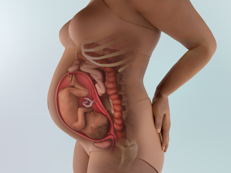
- 1. Sự phát triển của thai nhi
-
- Kích thước thai nhi khoảng 39cm, nặng 1.3kg😊. Từ giai đoạn này cho đến khi chào đời, trong khoảng 11 tuần còn lại, cân nặng của bé sẽ tăng lên hơn gấp đôi.
- Đôi mắt của bé đã hoàn thiện, vì vậy bé có thể nhìn về phía trước và bắt đầu tập trung tiêu điểm để quan sát xung quanh. Bé thậm chí còn biết chớp mắt khi đang ở trong bụng mẹ.
- Bé đang tích lũy mỡ trắng (흰색 지방) dưới da - đây là loại mỡ đóng vai trò là nguồn năng lượng cho cơ thể. Khác với mỡ nâu (갈색 지방) có tác dụng giữ ấm và điều hòa thân nhiệt, mỡ trắng giúp cung cấp năng lượng cần thiết cho hoạt động của bé.
- Khi lượng mỡ dưới da (피하지방) tăng lên, làn da nhăn nheo của bé dần trở nên mịn và cơ thể trông đầy đặn hơn. Đến khi chào đời, bé sẽ có đôi tay và thân người tròn trịa, đáng yêu.
- Bé phản ứng với âm thanh nhiều hơn, có thể cử động mạnh và đôi khi đá mạnh vào thành tử cung khiến mẹ cảm nhận rõ rệt.😄
- Kích thước não của bé tăng lên đáng kể. Để phù hợp với hộp sọ (두개골), não phát triển theo dạng gấp nếp giống như hình quả óc chó, tạo nên các rãnh và nếp gấp đặc trưng của bộ não người.
- Xương của bé đang hấp thụ rất nhiều canxi để trở nên cứng cáp hơn, vì vậy mẹ hãy nhớ uống sữa🍼🍼🍼 hoặc bổ sung từ các nguồn canxi khác như phô mai, sữa chua, hoặc nước cam tăng cường canxi (enriched orange juice). Khoảng 250mg canxi được tích lũy vào xương của bé mỗi ngày.
- 2. Thay đổi của cơ thể mẹ
-
Sạm da ở nhũ hoa, đường giữa bụng có thể rõ hơn, tử cung to đẩy lên phía phổi → gây khó thở, đau lưng – đau hông, dễ mệt mỏi, sưng phù ở tay – chân – mặt, cuối ngày sưng nhẹ → bình thường, sưng từ buổi sáng và không giảm → có thể là dấu hiệu tiền sản giật (임신중독증) → cần đi khám ngay.
👶 Cảm nhận cử động thai nhi nhiều hơn
- Khi bước vào tam cá nguyệt cuối, mẹ sẽ cảm nhận thai máy rõ ràng hơn. Bé thường hoạt động mạnh nhất sau khi mẹ ăn và nằm thư giãn. Nên đếm số lần bé cử động (đạp, xoay, đổi tư thế) trong 1-2 giờ.
- Nếu dưới 10 lần, có thể bé đang ngủ → mẹ hãy đổi tư thế sang nằm, ngồi hoặc ăn nhẹ rồi đếm lại. Nếu vẫn dưới 10 lần, mẹ cần trao đổi với bác sĩ khi khám.
🤰 Sữa non có thể chảy sớm
- Ở một số mẹ, sữa non (초유) có thể chảy ra sớm. Sữa non (초유) có màu vàng nhạt, đặc, giàu protein, và ít chất béo, đường hơn sữa mẹ về sau. Bé hấp thu rất tốt, là nguồn dinh dưỡng đầu tiên tối ưu sau sinh.
✨ Chóng mặt (Lightheadedness)
- Hệ tim mạch thay đổi nhiều trong thai kỳ, nhịp tim tăng, tim bơm nhiều máu hơn mỗi phút và thể tích máu tăng lên. Tử cung lớn cũng gây chèn ép tĩnh mạch và giảm tuần hoàn phần dưới cơ thể.
- Thông thường cơ thể sẽ điều chỉnh được, nhưng đôi khi không kịp, khiến mẹ cảm thấy chóng mặt, hoa mắt hoặc thậm chí ngất.
- Để hạn chế, nên ăn uống đều, tránh nóng, không đứng dậy đột ngột, không nằm ngửa lâu, không vận động quá sức. Hãy liên hệ bác sĩ nếu tình trạng chóng mặt kéo dài hoặc lặp lại.
- 3. Lưu ý về sức khỏe
-
Khám sức khỏe định kỳ 2 tuần 1 lần
- Từ tuần 28-29 trở đi, mẹ sẽ khám thai định kỳ 2 tuần một lần, do nguy cơ các biến chứng thai kỳ như tiền sản giật (임신중독증) có thể tăng lên.
Cũng giống như giai đoạn đầu thai kỳ, mẹ sẽ được xét nghiệm nước tiểu, đo cân nặng, đo huyết áp, khám lâm sàng ngoại trú, và siêu âm Doppler (도플러 초음파).
- Lúc này, 🤰mẹ bầu nên thông báo rõ ràng tình trạng cơ thể cho bác sĩ, bao gồm tình trạng ra máu, cơn gò tử cung, hay dấu hiệu đau chuyển dạ.
- Khi ngày em bé chào đời đến gần, bác sĩ chuyên khoa sẽ kiểm tra bằng siêu âm tình trạng tử cung, vị trí thai nhi, sự phát triển của thai, tình trạng cổ tử cung, kích thước đường sinh, lượng nước ối, và cả cử động thai.
Chú ý nước ối (양수) có thể bị rỉ
- Gần đến ngày sinh, lượng dịch tiết âm đạo tăng lên. Vì vậy mẹ có thể nhầm lẫn nước ối rỉ với dịch thông thường. Đặc điểm của nước ối là chảy ra dù không rặn hoặc dùng sức, và chảy nhiều hơn khi đi lại hoặc đứng.
- Nếu thấy nghi ngờ nước ối bị rỉ, mẹ cần đến bệnh viện kiểm tra ngay để đảm bảo an toàn cho cả mẹ và bé.
Nếu có triệu chứng nhiễm trùng đường tiểu, hãy đi khám
- Giai đoạn cuối thai kỳ mẹ dễ bị nhiễm trùng đường tiểu (요로 감염).
- Dấu hiệu: đau khi đi tiểu, đau âm ỉ vùng bụng dưới, nước tiểu đục, sẫm màu, hoặc có máu, mùi nước tiểu hôi rõ rệt. Nếu xuất hiện các triệu chứng này, nên đi khám ngay.
Kiểm tra protein niệu (단백뇨)
- Protein niệu là tình trạng protein thoát ra nhiều trong nước tiểu, được phát hiện qua xét nghiệm nước tiểu.
- Nếu bị protein niệu, cần nghỉ ngơi đầy đủ, tránh ăn mặn, bổ sung protein chất lượng cao, cần theo dõi xem có đi kèm cao huyết áp, nguy cơ tiền sản giật hay không.
Bổ sung Mangan và Crom (망간과 크롬의 섭취)
- Ở giai đoạn này, các chức năng cơ thể của thai nhi đã phát triển tương đối đầy đủ. Để củng cố và làm chắc thêm hệ cơ xương đã hình thành, cần bổ sung các dưỡng chất như mangan (망간) và chromium (크롬 - crom).
- Mangan là dưỡng chất thiết yếu giúp hình thành và duy trì cấu trúc xương khỏe mạnh, có nhiều trong các loại hạt (hạnh nhân, hạt lanh, óc chó), ngũ cốc nguyên cám (gạo lứt, yến mạch, lúa mì), các loại đậu, rau lá xanh và một số loại trái cây. Đặc biệt, kết hợp cùng axit folic (엽산), mangan hỗ trợ hoạt động của vitamin B1 và vitamin C trong cơ thể.
Crom là dưỡng chất có tác dụng thúc đẩy tăng trưởng, có nhiều trong gạo lứt, gan bò (쇠간), sò huyết, nghêu, và thịt gà .
Giảm tần suất ăn ngoài xuống khoảng 2 ngày một lần
- Khi bụng lớn dần, nấu nướng có thể trở nên phiền phức, dễ dẫn đến việc lựa chọn đồ ăn nhanh hoặc thường xuyên ăn ngoài.
- Tuy nhiên, đồ ăn nhanh và thực phẩm chế biến sẵn thường chứa nhiều calo, chất béo, muối và chất phụ gia, điều này không tốt cho sức khỏe của mẹ bầu và thai nhi.
- Ngoài ra, rất dễ bị thiếu các nhóm vitamin như vitamin C, nhóm vitamin B, cũng như các khoáng chất như canxi và sắt.
- Vì vậy, hãy cố gắng giới hạn việc ăn ngoài hoặc dùng thực phẩm chế biến sẵn xuống mức 2 ngày một lần, và khi ăn vẫn nên bổ sung thêm rau xanh - đậm màu, đậu phụ hoặc sữa để cân bằng dinh dưỡng🍼.
Lưu ý các dấu hiệu sinh non (조산)
- Ở giai đoạn này, dấu hiệu sinh non xuất hiện với tần suất cao hơn. Sinh non là tình trạng khá phổ biến, thống kê cho thấy cứ 13 mẹ bầu thì có 1 người trải qua. Sinh non có thể gây nguy hiểm nghiêm trọng đến cả mẹ và bé, và việc sinh trẻ non tháng thường đi kèm những khó khăn về tâm lý và tài chính😌.
- Điều quan trọng hơn, ngay cả khi được nuôi trong lồng ấp (인큐베이터), trẻ sinh non vẫn có nguy cơ gặp vấn đề về phổi hoặc các cơ quan khác do chúng chưa phát triển hoàn thiện, dẫn đến các di chứng.
- Tuy nhiên, trong phần lớn trường hợp, nếu nghỉ ngơi đầy đủ và xử lý kịp thời, có thể phòng tránh sinh non. Một số nguyên nhân gây sinh non bao gồm: vỡ ối sớm (조기양막파수), tiền sản giật (임신중독증), kiệt sức hoặc sức khỏe của mẹ suy giảm.
Vỡ ối sớm (조기양막파수): Khi gần đến ngày sinh, túi ối bảo vệ thai nhi trong tử cung sẽ vỡ, và nước ối đóng vai trò giúp bé dễ dàng đi qua đường sinh. Hiện tượng vỡ ối để hỗ trợ sinh là tự nhiên. Tuy nhiên, nếu nước ối vỡ trước khi xuất hiện các cơn co chuyển dạ, tức là chưa đau bụng sinh mà nước ối đã vỡ, thì được gọi là “vỡ ối sớm (조기양막파수)”. Một khi nước ối đã chảy ra nhiều thì không thể ngăn lại, vì vậy trong trường hợp này thường cần tiến hành gây chuyển dạ để em bé được sinh ra sớm.
Tiền sản giật (임신중독증): Nếu mẹ bầu mắc tiền sản giật nặng, môi trường trong cơ thể mẹ không còn phù hợp để thai nhi tiếp tục phát triển. Khi đó bác sĩ sẽ phải tiến hành mổ lấy thai (제왕절개수술) để cho bé chào đời sớm nhằm đảm bảo an toàn cho cả mẹ và thai nhi.
- 4. Quan hệ vợ chồng khi mang thai
-
Quan hệ tình dục: Khi thai nhi cử động nhiều và bụng bị cơn gò căng cứng nhiều hơn, sự lo lắng về việc sinh nở cũng trở nên lớn hơn, dẫn đến trạng thái tâm lý của mẹ bầu không còn nhiều hứng thú tận hưởng quan hệ tình dục. Người chồng cần hiểu được tâm lý này của mẹ bầu và nên quan hệ một cách nhẹ nhàng. Tư thế nằm nghiêng sang một bên, khi người chồng ôm từ phía sau, là tư thế giúp mẹ bầu ít cảm thấy áp lực lên bụng và giảm mệt mỏi.
👨Vai trò của chồng:
Hãy cố gắng đồng hành trong các lần khám thai định kỳ (정기검진)
Khi tần suất khám thai định kỳ tăng lên, không phải lúc nào việc cùng đi cũng dễ dàng. Tuy nhiên, chỉ cần cùng đi vào những ngày có các xét nghiệm hoặc kiểm tra quan trọng, người vợ sẽ cảm nhận được cảm giác "không phải một mình, mà là bên nhau"🧑👩, và nhờ đó có được sự ổn định về mặt tinh thần. Khi gặp bác sĩ, chồng có thể nghe giải thích chi tiết về tình trạng sức khỏe của thai nhi và vợ, đồng thời trực tiếp đặt những câu hỏi mà chồng đang thắc mắc.
Hãy tìm hiểu các lớp học về chuẩn bị sinh nở (출산교실 프로그램)
Trước tiên có thể tìm ở trung tâm y tế địa phương hoặc các bệnh viện sản phụ khoa, hoặc tìm các bài chia sẻ đánh giá trong cộng đồng khu vực. Sau khi tổng hợp ưu điểm và nhược điểm rồi cho vợ xem, chắc chắn bạn sẽ trở thành người chồng tinh tế nhất. Vì người trực tiếp mang thai và sinh nở là người mẹ, nên lắng nghe tối đa ý kiến của mẹ chính là cách trở thành một người bố tuyệt vời.👨👩👦
- 5. Trọng tâm thai giáo
-
Hãy đọc sách tranh (그림책), truyện cổ tích (동화책) cho bé nghe. Trong thời kỳ này, việc đọc nhiều sách nuôi dưỡng tâm hồn ấm áp và nhân hậu sẽ rất tốt. Việc đọc tản văn hoặc tiểu thuyết giúp tâm trạng trở nên nhẹ nhàng cũng đáng khuyến khích, nhưng tốt nhất vẫn là đọc truyện cổ tích và sách tranh. Vì khi đọc, cha mẹ sẽ trở về với tầm nhìn và cảm xúc của trẻ nhỏ, đem lại hiệu quả hai trong một. Ở giai đoạn này, sự phát triển thị giác và thính giác của thai nhi đã hoàn thiện, vì vậy khi bố mẹ đọc sách bằng giọng êm dịu, thai nhi sẽ ghi nhớ và cảm nhận giọng nói đó một cách rất thích thú.🥰🤗
- 6. Các thông tin cần biết khác
-
Cần phân biệt cơn đau bình thường và cơn đau do sinh non
Khi tử cung lớn lên, các dây chằng nâng đỡ tử cung hai bên cũng bị kéo dãn. Tuy nhiên, tốc độ tử cung lớn lên nhanh hơn nhiều so với tốc độ giãn của các dây chằng và mô xung quanh, khiến chúng bị kéo căng. Nếu làm việc nhiều ở nhà hoặc nơi làm việc, đi lại nhiều, đứng lâu, hoặc không ngủ đủ giấc, các dây chằng và mô vốn đang căng sẽ bị kéo mạnh hơn và gây đau. Khi đó, vùng bụng dưới có thể đau nhói từng cơn hoặc một bên bụng (trái hoặc phải) có cảm giác bị kéo căng. Đây là cơn đau bình thường (정상적인 통증), cần phân biệt với sinh non. Sinh non là khi bụng đau từng cơn một cách đều đặn và cổ tử cung mở ra, khiến dịch âm đạo tăng đột ngột. Ngoài ra, các mao mạch mảnh có thể bị vỡ và gây ra ra máu. Trong khi đó, cơn đau bình thường chỉ xảy ra vài lần một ngày và mỗi lần kéo dài vài phút. Nếu cảm thấy đau vùng hông, hãy giữ ấm bụng và nằm nghiêng nghỉ ngơi, cơn đau sẽ giảm dần và biến mất.
-
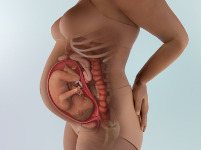
- 1. Sự phát triển của thai nhi
-
- Kích thước thai nhi khoảng 40cm, nặng 1.4kg😊
🍼 Bé bắt đầu xoay người về tư thế chào đời
- Lượng nước ối bắt đầu giảm dần, trong khi cơ thể của em bé ngày càng lớn hơn, khiến không gian trong tử cung thu hẹp lại. Vì vậy, bé không thể dễ dàng xoay trở như trước nữa.
- Vào thời điểm này, hầu hết các bé sẽ xoay đầu xuống dưới để chuẩn bị cho quá trình sinh nở.
- Tuy nhiên, một số bé vẫn ngồi thẳng, với đầu hướng lên trên. Đừng quá lo lắng nếu bé của bạn đang ở tư thế này, vì bé vẫn có thể tự xoay lại tư thế đúng trong vài tuần tới.
- Mẹ có thể thử tập các động tác giúp bé xoay ngôi, chẳng hạn như tư thế con mèo (cat pose) trong yoga cho thai phụ – rất hữu ích trong việc giúp bé đổi ngôi thuận lợi hơn.
🌬️ Thai nhi đang phát triển phổi và luyện tập hô hấp
- Dù bé vẫn nhận oxy thông qua dây rốn, nhưng phổi của bé đã gần như hoàn thiện. Bé bắt đầu tập di chuyển cơ hoành (cơ hô hấp chính) để luyện thở, chuẩn bị cho việc tự hít thở sau khi ra đời.
🩸 Tủy xương bắt đầu tạo ra hồng cầu
- Nếu trước đây hồng cầu được tạo ra ở lách hoặc các mô khác, thì từ giai đoạn này, tủy xương – nơi sản xuất máu chính trong cơ thể – đã đảm nhận nhiệm vụ này.
- Hồng cầu có vai trò vận chuyển oxy và loại bỏ chất thải – là “người bạn” vô cùng quan trọng giúp bé phát triển khỏe mạnh.
- Nhờ hồng cầu hoạt động hiệu quả, bé có thể tích trữ các dưỡng chất thiết yếu như sắt, canxi và phốt pho trong tế bào – chuẩn bị cho quá trình thích nghi và sinh tồn ngoài cơ thể mẹ.
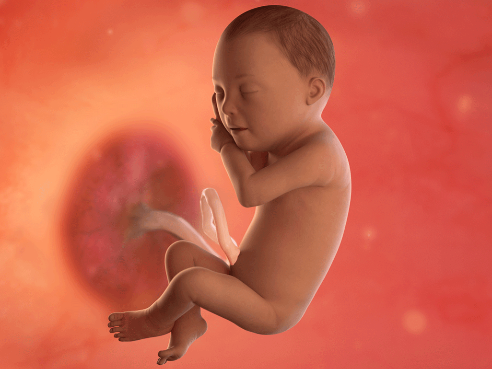
😊 Thông tin thêm
- Lớp lông tơ trên cơ thể bé giảm dần và chỉ còn lại một chút ở vai và lưng, đồng thời tóc trên đầu bé cũng dài hơn.
- Các tế bào da của bé đang sản sinh melanin, là sắc tố quyết định màu da (skin color). Càng sản xuất nhiều melanin, da sẽ càng sậm màu. Tuy nhiên, phần lớn quá trình sản sinh melanin sẽ diễn ra sau khi sinh. Tông màu da vĩnh viễn của bé (permanent skin tone) sẽ được hoàn thiện vào khoảng 6 tháng tuổi.
- Bé có thể mở to mắt và nhìn thấy những hình dạng mờ nhạt. Đến khoảng tuần 31, đồng tử (pupils) của bé có thể co giãn (constrict and expand) để điều chỉnh lượng ánh sáng đi vào mắt. Sau khi sinh, bé có thể tập trung nhìn vào gương mặt mẹ khi mẹ ở khoảng cách 20–25cm, nhưng bé sẽ chưa thể theo dõi vật chuyển động bằng mắt cho đến khi được khoảng 3 tháng tuổi.
- 2. Thay đổi của cơ thể mẹ
-
- ✨ Các triệu chứng của giai đoạn đầu thai kỳ quay trở lại. Dù mức độ không nặng như trước, nhưng vẫn đủ khiến mẹ bầu cảm thấy khó chịu. Đầu của em bé nếu hướng xuống dưới, sẽ tạo áp lực lên bàng quang của mẹ, nên tình trạng tiểu nhiều có thể xuất hiện trở lại.
- 🤰 Ngực căng và đau, bắt đầu tiết sữa non (초유) và tình trạng tăng sắc tố da trở nên rõ rệt hơn. Tùy từng người mà có thể thấy sữa non rỉ ra. Vùng bụng dưới, núm vú và âm hộ có thể trở nên sẫm màu hơn, nhưng những thay đổi này sẽ mờ dần sau sinh, vì vậy mẹ không cần quá lo lắng.
- 😌 Ở giai đoạn này, mẹ thường cảm thấy khó chịu, đầy bụng, và có thể bị đau lưng, giãn tĩnh mạch, hoặc trĩ. Cảm giác mệt mỏi mãn tính (만성피로) và ợ nóng, nóng rát dạ dày (속 쓰림) cũng có thể trở nên nghiêm trọng hơn. Mẹ hãy cố gắng chịu đựng thêm một chút nữa nhé!
- 🩺 Dạo này bụng hay bị căng cứng, các cơ tử cung (자궁 근육) trở nên rất nhạy cảm, nên chỉ một kích thích nhỏ cũng có thể gây co thắt tử cung (자궁 수축). Bạn có thể cảm thấy bụng cứng và căng lại khoảng 5 lần mỗi ngày – khi đó hãy nghỉ ngơi ngay lập tức. Nếu dịch âm đạo có lẫn máu hoặc cơn đau bụng xảy ra thường xuyên, có thể là dấu hiệu sinh non (조산 위험) – cần đến bệnh viện kiểm tra ngay!
- 💆♀️ Cần vận động nhẹ sau bữa ăn. Cơ thể mẹ lúc này không nên làm việc quá sức, nhưng vận động nhẹ nhàng lại rất cần thiết! Đặc biệt, sau bữa ăn, nên đi bộ chậm rãi (걷기) để giúp hạ đường huyết (혈당을 낮추다). Ngoài ra, yoga cho bà bầu (임산부 요가), pilates (필라테스), và bơi lội (수영) cũng rất tốt, giúp tăng sức mạnh cơ bắp và độ dẻo dai (근력과 유연성).
Thay đổi ở rốn (Belly button changes)
Trong tam cá nguyệt thứ ba, tử cung mở rộng gây áp lực lên thành bụng, khiến rốn lồi ra ngoài, biến rốn lõm thành rốn lồi.
Rốn của bạn cũng có thể nhạy cảm khi bị chạm vào hoặc khó chịu khi quần áo cọ sát. Một số mẹ chọn mặc áo rộng hoặc dán miếng băng y tế (adhesive bandage) lên rốn vào giai đoạn cuối thai kỳ để tránh cảm giác này.
⚠️ Trong trường hợp hiếm gặp, phụ nữ mang thai có thể bị thoát vị rốn kẹt (incarcerated umbilical hernia). Đây là khi một phần ruột đẩy ra qua khe mô, lồi vào vùng rốn rồi bị kẹt lại. Cơn đau dữ dội xuất phát từ việc phần ruột bị chèn ép trong không gian nhỏ.
🚨 Nếu mắc phải, bạn có thể cảm nhận một khối cứng gần rốn. Đây là tình huống khẩn cấp (surgical emergency), nên hãy liên hệ ngay với bác sĩ nếu cảm thấy đau rốn dữ dội trong thai kỳ.
Dịch tiết âm đạo màu nâu (Brown discharge)
Khi mang thai, cơ thể tăng sản xuất estrogen, dẫn đến tăng dịch tiết âm đạo. Dịch màu nâu thường là do lẫn máu cũ, và thường không đáng lo ngại.
Bạn có thể thấy đốm máu nâu (brown spotting) hoặc dịch tiết màu nâu sau quan hệ tình dục hoặc khám phụ khoa. Cổ tử cung (cervix) trở nên nhạy cảm hơn trong thai kỳ, nên các hoạt động này có thể gây kích ứng nhẹ và chảy máu ít.
🩸 Khi gần đến thời điểm sinh, bạn có thể thấy dịch tiết giống chất nhầy đặc, trong suốt hoặc có màu hồng nhạt, nâu, hoặc lẫn máu. Đây là nút nhầy cổ tử cung (mucus plug), thường kèm theo hiện tượng ra dịch máu báo.
Tuy nhiên, trong một số trường hợp, dịch tiết âm đạo có thể là dấu hiệu của biến chứng nghiêm trọng, như nhau tiền đạo (placenta previa), bong nhau non (placental abruption), chuyển dạ sớm (preterm labor) hoặc nhiễm trùng (infection). Hãy gọi bác sĩ ngay nếu:
– Dịch tiết màu đỏ tươi và nhiều hơn khoảng 2 thìa canh
– Xuất hiện trước tuần thứ 36
– Hoặc dịch có màu xanh, có mùi hôi
Mệt mỏi
Trong tam cá nguyệt thứ ba, bạn có thể lại cảm thấy mệt mỏi do mang thai😴. Dù không kiệt sức như ở tam cá nguyệt đầu, bạn vẫn sẽ dễ mệt và cần nghỉ ngơi nhiều hơn. Điều này hoàn toàn bình thường – bạn đang mang thêm trọng lượng, trong đó có em bé đang tăng cân nhanh chóng, và có thể khó ngủ hơn.
Mệt mỏi cũng có thể là dấu hiệu của thiếu máu do thiếu sắt. Trầm cảm cũng có thể gây mệt mỏi hoặc mất ngủ, nên nếu bạn cảm thấy buồn bã, tuyệt vọng, không thể làm việc thường ngày, hoặc có ý nghĩ gây hại cho bản thân, hãy liên hệ bác sĩ.
Để giảm mệt mỏi, hãy ăn uống cân bằng, uống đủ nước, tập nhẹ như đi bộ, và nghỉ ngơi bất cứ khi nào có thể.
Phù (Swelling)
Bạn có thể nhận thấy phù mắt cá chân và bàn chân, đặc biệt khi gần đến ngày sinh🦶.
Phù xảy ra do tử cung to lên, gây áp lực đến tĩnh mạch vùng chậu và tĩnh mạch chủ dưới – là tĩnh mạch lớn bên phải cơ thể đưa máu từ chân về tim. Áp lực này làm chậm lưu thông máu, khiến máu ứ lại ở chân và dịch rò rỉ ra mô, gây sưng.
Hormone thai kỳ (pregnancy hormones) và việc giữ nước tự nhiên cũng góp phần gây phù. Cuối thai kỳ, cơ thể bạn có thể tăng 1–1.5kg nước, sẽ được thải ra qua nước tiểu và mồ hôi sau khi sinh.
⚠️ Phù thường không nguy hiểm, nhưng có thể là dấu hiệu của tiền sản giật (preeclampsia) hoặc huyết khối tĩnh mạch sâu nếu:
– Sưng quá mức, sưng đột ngột ở chân hoặc mắt cá
– Sưng nhiều ở tay hoặc mặt
– Một chân sưng rõ hơn chân kia
Thay đổi cảm xúc (Mood swings)
Sự kết hợp giữa triệu chứng khó chịu, căng thẳng và thay đổi hormone có thể khiến tâm trạng thay đổi thất thường trở lại trong tam cá nguyệt thứ ba💭.
Nếu cảm xúc thay đổi mạnh hơn, thường xuyên hơn, hoặc kéo dài trên 2 tuần, có thể bạn đang bị trầm cảm hoặc lo âu thai kỳ (pregnancy depression/anxiety). Hãy thông báo cho bác sĩ để được hỗ trợ.
Các nghiên cứu cho thấy vấn đề tâm lý không điều trị có thể ảnh hưởng đến sức khỏe thể chất của thai nhi và tăng nguy cơ sinh non cũng như trầm cảm sau sinh.
Khó thở (Shortness of breath)
Về cuối tam cá nguyệt thứ ba, chỉ leo vài bậc cầu thang cũng có thể khiến bạn mệt và thở dốc😮💨. Khi thai kỳ tiến triển, cơ thể cần nhiều oxy hơn, đồng thời tử cung lớn lên gây chèn ép cơ hoành (diaphragm), dẫn đến khó thở. Tình trạng này có thể nặng hơn nếu bạn bị hen suyễn (asthma), thiếu máu (anemia), hoặc cao huyết áp (high blood pressure).
Bạn có thể thở dễ hơn vài tuần trước khi sinh, đặc biệt nếu đây là lần mang thai đầu tiên, vì lúc đó thai nhi tụt xuống vùng chậu (baby drops into the pelvis) để chuẩn bị sinh.
Khó thở là hiện tượng phổ biến trong thai kỳ, nhưng hãy đến bệnh viện ngay lập tức nếu bạn gặp:
– Khó thở đột ngột hoặc nghiêm trọng
– Hen suyễn nặng hơn
– Nhịp tim nhanh hoặc không đều (rapid/irregular heartbeat)
– Cảm giác sắp ngất (feeling faint)😵💫
– Đau ngực hoặc đau khi hít thở (chest pain)💢
- 3. Lưu ý về sức khỏe
-
🩸 Nếu mẹ bị đau (통증) và ra máu nhiều (다량의 출혈) thì cần nghi ngờ nhau tiền đạo (전치태반).
Thông thường, nhau thai (태반) nằm ở phía trên của tử cung, nhưng trong trường hợp nhau tiền đạo, nhau thai lại nằm ở phần dưới, khiến khi thai nhi chào đời có thể xảy ra hiện tượng xuất huyết nhiều hoặc đầu thai nhi không thể đi xuống đường sinh, nên phải tiến hành sinh mổ (제왕절개 분만).
⚠️ Triệu chứng của nhau tiền đạo thường xuất hiện vào khoảng sau tuần thứ 29 (29주 이후), khi có đau bụng kèm theo hiện tượng đột ngột ra nhiều máu.
🧠 Tăng cường hấp thu kẽm (아연) và kali (칼륨) giúp thúc đẩy sự phát triển não bộ của thai nhi (태아의 두뇌발달).
Trong giai đoạn này, khi kích thước não của thai nhi lớn lên đáng kể và bắt đầu hình thành nhiều nếp gấp, việc bổ sung các dưỡng chất hỗ trợ phát triển não là rất quan trọng.
🥚 Kẽm (아연), là dưỡng chất không thể thiếu cho hoạt động của não, có nhiều trong hàu, nghêu, sò, gạo lứt, trứng, vì vậy nếu ăn đầy đủ các thực phẩm cơ bản trong thực đơn thai giáo (태교식) thì sẽ không bị thiếu.
🥬 Kali (칼륨) là dưỡng chất giúp cung cấp đủ oxy cho não thai nhi (태아의 뇌에 충분한 산소를 공급), có nhiều trong bắp cải, thịt bò, đậu.
🍽️ Ăn thành nhiều bữa nhỏ và ăn thường xuyên.
⚖️ Cân nặng của thai nhi quá nhiều cũng đáng lo, nhưng quá ít cũng là vấn đề.
Khi tử cung đã nâng lên đến vùng thượng vị (상복부) và gây chèn ép dạ dày, mẹ bầu có thể cảm thấy đầy tức hoặc nóng rát ở ngực.
Một số thai phụ vì khó chịu mà bỏ bữa, nhưng điều này không tốt. Cần chia thành nhiều lần trong ngày, mỗi lần ăn lượng vừa phải, để đảm bảo dinh dưỡng (영양) cung cấp cho cả mẹ và thai nhi không bị thiếu hụt.
🚫 Tránh những động tác cần dùng sức hoặc gây rung lắc đột ngột.
Hạn chế các động tác khiến bụng bị căng hoặc chịu kích thích, và không nên mang vật nặng.
🧎♀️ Khi nhặt vật gì đó dưới đất, không nên cúi người trong tư thế thẳng đứng mà hãy gập gối rồi ngồi xuống để giảm áp lực cho bụng.
🚗 Cũng nên tránh di chuyển bằng ô tô trong quãng đường hơn 1 tiếng. Nếu rung lắc hoặc dao động kéo dài, có thể làm tăng nguy cơ sinh non nên cần hết sức cẩn thận.
💤 Ngoài ra, căng thẳng tinh thần hay lo âu đều không tốt cho thai nhi. Hãy đảm bảo có đủ thời gian nghỉ ngơi và ngủ để giữ trạng thái tâm lý ổn định.
- 4. Quan hệ vợ chồng khi mang thai
-
Trong thời kỳ này, cổ tử cung (자궁 입구) và âm đạo (질) trở nên nhạy cảm, dễ bị xung huyết (충혈) và tổn thương, vì vậy cần đặc biệt thận trọng khi quan hệ tình dục (성생활).
👨Vai trò của chồng:
🤰 Chồng hãy tham gia lớp học tiền sản cùng vợ
- Các trung tâm y tế cộng đồng (보건소) hoặc bệnh viện phụ sản (산부인과) thường tổ chức những lớp học tiền sản (출산 교실), diễn ra trong 2–4 buổi.
- Nội dung chính bao gồm: thay đổi cơ thể trong giai đoạn cuối thai kỳ (임신 후기의 신체 변화), trải nghiệm mang thai dành cho chồng (남편을 위한 임신 체험), các phương pháp sinh nở và kỹ thuật thở (분만법과 호흡법), chuẩn bị cho sinh nở (출산 준비) và cách cho con bú (모유 수유 방법).
- Sau khi kết thúc lớp học, hãy trao đổi với vợ về phương pháp sinh nở mà hai bạn muốn chọn, đồng thời ôn lại kỹ thuật thở (호흡법) để có thể hỗ trợ vợ một cách bình tĩnh và hiệu quả trong lúc sinh.
👨👩👧 Tìm hiểu các thủ tục giấy tờ và chuẩn bị ngân sách sau sinh
- Mang thai và sinh nở thường kèm theo rất nhiều thủ tục giấy tờ (서류작업) mà chồng có thể đảm nhiệm.
- Sau khi sinh, chồng nên lo liệu các việc như: khai sinh (출생신고), các chế độ hỗ trợ sinh nở (출산 지원 제도), nghỉ chăm con (육아 휴직) và các chế độ phúc lợi khác.
- Ngoài ra, người chồng nên tính toán trước ngân sách cần thiết cho sinh nở, bao gồm: chi phí bệnh viện (병원비), bảo hiểm (보험료), chi phí ở viện dưỡng sau sinh (산후조리원) và các vật dụng cần thiết cho em bé (각종 아기 물품).
- Tuy nhiên, những phần liên quan đến sở thích và nhu cầu của vợ thì chồng nên tham khảo ý kiến vợ trước khi quyết định để đảm bảo phù hợp và hài lòng cho cả hai.
- 5. Trọng tâm thai giáo
-
Vì cơ quan thính giác của thai nhi đã phát triển hoàn chỉnh, nên việc đọc truyện thai giáo sẽ giúp bé hình thành vốn từ vựng và năng lực cảm thụ ngôn ngữ sớm. Mỗi ngày, mẹ có thể dành khoảng 5 phút để đọc những câu chuyện nhẹ nhàng tình cảm, có nhịp điệu, hoặc các truyện khoa học - sáng tạo giúp bé phát triển trí tưởng tượng và khả năng tư duy.
Sau đây là một số truyện thai giáo phù hợp để đọc trong giai đoạn này (bằng tiếng Hàn): 바람을 보았니?(김옥애), 어린이가 처음 만나는 수학 그림책(미추마사), 봄 여름 가을 겨울 나무이야기(마이클 로젠), 누구야 누구?파란 토끼 시리즈 중(강덕선), 개구리 세상 구경 (임정진), 안녕! 나는 너의 장난꾸러기야(이형진), 둘이서 둘이서(김복태), 엄마 잃은 아기 참새(루스 에인워즈), 어떻게 잠을 잘가요(야무우치 마사요키), 두드려 보아요, 찾아보아요, 걸어보아요, 물어보아요(안나 클라라 티돌름) 등
- 6. Các thông tin cần biết khác
-
💆♀️✨ Hãy đi massage trước khi sinh
Massage dành cho phụ nữ mang thai là một cách tuyệt vời để thư giãn và giảm bớt những cơn đau nhức vào giai đoạn cuối thai kỳ. Massage còn giúp giảm sưng phù và cải thiện tâm trạng. Hãy chọn chuyên viên massage có chứng chỉ và được đào tạo bài bản về massage cho thai phụ.
💧 Hãy xem xét mua sản phẩm dưỡng da mới
Hãy kiểm tra nhãn mác các sản phẩm chăm sóc da (스킨케어 - skincare) bạn đang sử dụng! Các mỹ phẩm có chứa paraben (파라벤), retinol – vitamin A (레티놀), formaldehyde (포름알데히드), isoflavone (이소플라본), và tinh dầu aroma (아로마 오일) nên tránh dùng cho đến sau khi sinh.
✓ Paraben (파라벤) và Formaldehyde (포름알데히드): Là các chất có thể gây rối loạn hormone và tăng nguy cơ ung thư, vì vậy cần tránh tuyệt đối trong thai kỳ.
✓ Isoflavone (이소플라본): Là phytoestrogen (hormone nữ từ thực vật). Nếu sử dụng trong thời kỳ nồng độ estrogen cao, có thể khiến nám da (기미) trở nên đậm hơn và gây mất cân bằng hormone.
✓ Retinol (레티놀): Là thành phần thường có trong sản phẩm chống lão hóa (안티에이징 제품). Việc dùng quá nhiều có thể dẫn đến thai chết lưu hoặc dị tật bẩm sinh. Hãy kiểm tra nhãn và tránh các thành phần như retinol, retinyl palmitate (레티닐팔미테이트), retinyl retinoate (레티닐레티노에이트), retinyl acetate (레티닐아세테이트).
✓ Tinh dầu aroma (아로마 오일): Dù thường được dùng để massage, nhưng không nên sử dụng trong thai kỳ. Tinh dầu có thể gây rối loạn hormone, kích thích co bóp tử cung (자궁 수축) và giãn cơ (근육 이완), làm tăng nguy cơ sinh non (조산).
🩸🧬 Cân nhắc lưu trữ máu cuống rốn
Máu cuống rốn của em bé – phần máu còn lại trong dây rốn sau khi sinh – chứa nhiều tế bào gốc có giá trị, có thể cứu sống người bệnh. Các tế bào gốc này được sử dụng để điều trị một số bệnh như ung thư, thiếu máu hồng cầu hình liềm, rối loạn miễn dịch và nhiều bệnh khác. Một số bố mẹ chọn lưu trữ riêng máu cuống rốn của con mình để dùng trong tương lai nếu cần cho việc điều trị của bé hoặc người thân trong gia đình👨👩👧👦.
Bạn cũng có thể hiến tặng máu cuống rốn cho ngân hàng máu cuống rốn công. Tốt nhất là nên tìm hiểu trước khi sinh, vì quy trình đăng ký và chọn nơi phù hợp cần thời gian.
Nhận biết các dấu hiệu sinh non (조산) cần đến bệnh viện ngay lập tức
🌟 Có hiện tượng ra máu (출혈이 있다)
Khi có máu đỏ tươi chảy ra nhiều, hoặc dịch tiết âm đạo (질 분비물) lẫn với máu khiến dịch có màu nhạt, thì cả hai trường hợp đều là dấu hiệu cảnh báo sinh non. Cần đến bệnh viện ngay lập tức.
🌟 Cảm giác như bị rỉ tiểu và có nước ấm chảy ra đột ngột
Khi xảy ra vỡ ối sớm (조기 파수), nước ối (양수) chảy ra có thể khiến mẹ bầu cảm thấy giống như dịch loãng hoặc nước tiểu rỉ ra. Nếu lượng nước quá nhiều và cảm giác như nước ấm chảy ra, thì đây là tình huống nguy hiểm cần được xử lý ngay.
🌟 Cổ tử cung (자궁구) bị mở
Hiện tượng mở cổ tử cung thường rất khó để thai phụ tự nhận biết. Vì vậy, cần kiểm tra định kỳ để xem có mắc hội chứng hở eo tử cung (자궁경부무력증) hay không. Nếu đã được chẩn đoán là hở eo tử cung, chỉ cần cảm thấy có dấu hiệu bất thường nhỏ cũng phải đến bệnh viện ngay.
🌟 Bụng căng cứng đều
Nếu cảm thấy bụng căng cứng hoặc có cảm giác co thắt khác với bình thường, xuất hiện đều đều, thì khả năng sinh non (조산) là rất cao. Cần đến bệnh viện ngay để kiểm tra và xử lý kịp thời.
-
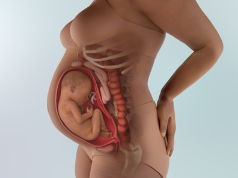
- 1. Sự phát triển của thai nhi
-
- Kích thước thai nhi khoảng 41.5cm, nặng 1.5kg😊
👶 Các giác quan (오감) đã phát triển đầy đủ, bé có thể cảm nhận nhiều thứ hơn
Bé nghe được tất cả âm thanh từ bên ngoài, và phân biệt các âm thanh khác nhau. Một số nghiên cứu còn chỉ ra rằng trái tim của bé phản ứng khác nhau với từng loại nhạc.
Bé có thể cảm nhận các mùi vị trong nước ối, đồng thời tập thở (숨쉬기 연습) một cách độc lập.
Bé cũng có thể cảm nhận và nắm chặt các vật cầm tay, mắt đã hoàn thiện và có thể co giãn đồng tử.
⏳ Tốc độ tăng trưởng bắt đầu chậm lại
- Cho đến nay, bé đã tăng trưởng rất nhanh. Giờ đây, khi ngày sinh sắp đến, tốc độ tăng trưởng của bé bắt đầu chậm lại, nghĩa là bé đã phát triển đủ lớn. Ở giai đoạn này, thời gian ngủ của bé nhiều hơn thời gian thức, giúp bé tiết kiệm năng lượng cho việc phát triển cuối cùng trước khi ra đời.
- Có thể nhìn thấy bụng chuyển động theo cử động đầy sức sống của bé. Bé còn ngọ nguậy các ngón tay, ngón chân và do lực tay chân mạnh hơn nên duỗi – gập tay chân rất khỏe.
- Ở giai đoạn này, bé đã hình thành nhịp ngủ (수면 패턴), nên sẽ có những khoảng thời gian vận động và nghỉ ngơi cố định. Bạn sẽ dần dự đoán được một phần các cử động của bé.
🧠 Não của bé phát triển mạnh mẽ trong tam cá nguyệt thứ ba
Kích cỡ của não sẽ tăng gấp ba lần. Đồng thời, đại não bắt đầu hình thành các rãnh sâu, giúp tăng diện tích bề mặt mà không làm đầu to hơn.
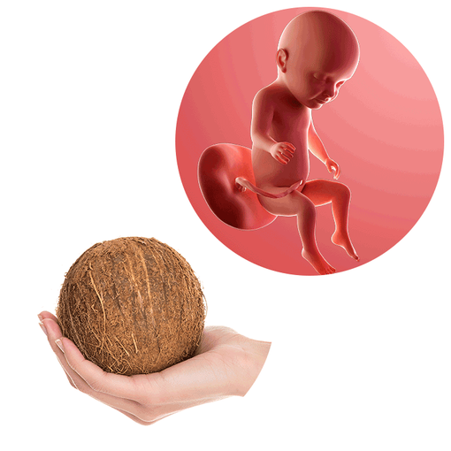
- Kích thước của bé tương đương size của quả dừa.
- 2. Thay đổi của cơ thể mẹ
-
Các triệu chứng cuối thai kỳ trở nên nghiêm trọng hơn ⚡
- Khi chuẩn bị sinh, các triệu chứng gây khó chịu cho mẹ sẽ ngày càng tăng lên.
- Khó thở và cảm giác tức ngực vì tử cung gần chạm tới vùng xương ức, đồng thời khó tiêu (소화 불량).
- Giãn tĩnh mạch (정맥류) và trĩ (치질) có thể trở nên nghiêm trọng hơn.
- Vai đau do nâng đỡ bụng nặng và ngực lớn, ngay cả khi nằm nghỉ cũng cảm thấy khó chịu, dẫn đến khó ngủ.
Cân nặng của mẹ tăng nhanh ⚖️
- Cân nặng tăng nhanh chóng, chủ yếu là do tích lũy trọng lượng của bé cộng với cơ thể mẹ.
- So với giai đoạn đầu thai kỳ, cân nặng có thể tăng gần 10kg, tạo áp lực lên cột sống và lưng dưới.
- Hãy cẩn thận với các động tác gập lưng hoặc nâng vật nặng, tránh làm quá sức để bảo vệ cột sống.
Khó thở và tim đập nhanh cuối thai kỳ 💓
- Khi tử cung lớn lên, chèn ép phổi, đồng thời lượng máu tăng để cung cấp cho bé, tim mẹ cũng phải làm việc nhiều hơn, dẫn đến khó thở (숨 차고) và tim đập nhanh (가슴 두근거림) – là triệu chứng phổ biến ở cuối thai kỳ.
- Khi cảm thấy khó thở hoặc tim đập nhanh, hãy di chuyển chậm lại và thở sâu đều. Hít thở sâu và nhịp nhàng không chỉ giảm triệu chứng mà còn mang lại cảm giác bình tĩnh cho mẹ.
Đau đầu, đau lưng 🤕
- Khi ngày sinh đến gần, lo lắng tăng và hormone thay đổi nhiều, dẫn đến tăng nguy cơ đau đầu (두통).
- Nếu đau đầu nặng, hãy chườm khăn ấm lên trán, xoa bóp sau gáy và thái dương để giảm đau.
- Đau vùng thắt lưng hoặc đau vùng chậu sau (lan xuống mông hoặc mặt sau đùi). Các bài tập nhẹ như bơi, kéo giãn và đi bộ có thể giúp giảm đau. Tư thế đúng, giày thoải mái và tránh mang đồ nặng cũng hữu ích. Nếu vẫn không giảm, hãy hỏi bác sĩ về châm cứu, massage tiền sản hoặc thuốc giảm đau.
Đi tiểu nhiều hơn bình thường 🚽
- Có đến 95% phụ nữ gặp tình trạng này. Đây là kết quả của hormone, lượng dịch tăng lên và áp lực tử cung lên bàng quang.
- Đi tiểu nhiều cũng có thể là dấu hiệu nhiễm trùng tiểu (UTI). Hãy báo bác sĩ nếu bạn đau khi đi tiểu, nước tiểu có máu, đục hoặc hôi, bạn bị sốt, hoặc đau lưng/đau dưới bụng.
- Một số phụ nữ còn bị són tiểu khi ho, cười, hắt hơi hoặc vận động. Nguyên nhân là do hormone thai kỳ làm giãn cơ sàn chậu và tử cung gây áp lực. Tình trạng này có thể hết sau sinh. Tập Kegel giúp tăng sức mạnh sàn chậu.
Khó ngủ, mất ngủ 😴
- Có nhiều lý do khiến mẹ bầu khó ngủ trong tam cá nguyệt cuối: bé đạp, đau nhức, đi vệ sinh nhiều lần, và khó tìm tư thế thoải mái.
- Nếu khó tìm tư thế ngủ phù hợp, hãy thử nhiều cách: ngủ trên sofa, ghế tựa, nệm hơi, hoặc dùng thêm topper mềm và gối ôm bà bầu. Nếu mất ngủ kéo dài dù đã thử nhiều cách, hãy báo bác sĩ.
Đau thần kinh tọa ⚡
- Nếu bạn thấy đau nhói hoặc âm ỉ lan từ lưng dưới xuống mông và chân, đó có thể là đau thần kinh tọa. Điều này xảy ra khi dây thần kinh tọa bị chèn ép hoặc viêm.
- Đau thần kinh tọa rất phổ biến trong thai kỳ, đặc biệt ở giai đoạn cuối khi bé tăng cân và tử cung chèn lên dây thần kinh. Khi bé vào vị trí chờ sinh, đầu bé cũng có thể đè lên dây thần kinh tọa.
- Cơn đau này thường sẽ biến mất sau sinh. Trong lúc này, bạn có thể giảm đau bằng cách chườm ấm, kéo giãn nhẹ nhàng, tập Kegel và bài tập nghiêng xương chậu.
- 3. Lưu ý về sức khỏe
-
Bổ sung hành tây trong chế độ ăn uống
Hành tây (양파) giúp ổn định tinh thần. Khi ngày sinh đến gần, thai phụ dễ bất an, tử cung lớn chèn ép dạ dày khiến tức ngực và tiêu hóa kém. Khi tinh thần của thai phụ bất ổn cũng sẽ ảnh hưởng đến thai nhi, vì vậy cần cố gắng giữ tâm trạng thư thái. Hành tây chứa nhiều iod có tác dụng làm dịu thần kinh, nên nếu thêm nhiều vào món ăn và nấu chín sẽ giúp ổn định tinh thần.
Nếu cân nặng không tăng thì cần ăn thêm bữa phụ ngoài ba bữa chính. Nếu bụng ngày càng lớn nhưng cân nặng không tăng thì nên chủ động bổ sung bữa phụ. Vì chỉ ăn ba bữa chính không thể cung cấp đủ năng lượng, nên dù hơi bất tiện cũng cần tranh thủ ăn thêm các bữa phụ.
Tránh những việc kích thích hoặc va chạm vào bụng
Tiêu chảy nặng có thể làm tăng cơn co tử cung và dẫn đến sinh non.
Khi đi đại tiện nên giảm kích thích cho bụng, còn táo bón thì nên điều trị sớm.
Khi bị táo bón, không nên rặn mạnh và cần tìm cách giảm co cứng vùng bụng.
Ngoài ra, nên tránh đi lại vào giờ cao điểm khi đông người vì dù bản thân cẩn thận nhưng người khác vô tình va chạm có thể gây ảnh hưởng đến bụng. Khi đi ở nơi đông người, nên dùng hai tay ôm lấy bụng để bảo vệ.
Tập các bài tập thở, giãn cơ lưng, mở hông 🤰🧘♀️
Khi ngày dự sinh đến gần, hãy cố gắng tăng độ dẻo dai và tăng cường sức mạnh cơ thể nhiều nhất có thể. Các bài tập giãn cơ là lựa chọn hoàn hảo, giúp mở khung chậu, tăng sức mạnh cơ bụng, giảm đau lưng khi chuyển dạ và giảm căng cơ.
- 4. Quan hệ vợ chồng khi mang thai
-
Để đảm bảo sinh nở an toàn, từ giai đoạn này trở đi nên hạn chế quan hệ tình dục. Bụng đã lớn và cảm giác bị chèn ép nhiều, quan hệ sai cách có thể khiến vỡ ối.
👨Vai trò của chồng:
🛌 Giúp vợ tìm hiểu phương pháp chăm sóc sau sinh (산후조리 방법)
Sau khi sinh, mẹ có thể dùng dịch vụ viện dưỡng sau sinh (산후조리원) hoặc nhờ giúp đỡ từ nhân viên chăm sóc tại nhà (산후 도우미). Ưu nhược điểm của từng phương pháp:
1️⃣ Viện dưỡng sau sinh (산후조리원)
✓ Ưu điểm:
- Nhận chăm sóc sau sinh chuyên nghiệp từ các chuyên gia trong từng lĩnh vực.
- Có cơ sở vật chất tối ưu cho mẹ và bé.
- Có cơ hội gặp gỡ và kết nối với các mẹ khác – những “người bạn” cùng chăm con.
✓ Nhược điểm: Hạn chế về thời gian thăm nom gia đình, chi phí tương đối cao so với chăm sóc tại nhà.
2️⃣ Nhân viên chăm sóc tại nhà (산후도우미)
✓ Ưu điểm:
- Nhận chăm sóc trong môi trường quen thuộc và thoải mái tại gia.
- Người thân trong gia đình có thể đến thăm nom tự do.
- Dịch vụ chăm sóc 1:1 tỉ mỉ và cá nhân hóa.
- Chi phí thường rẻ hơn viện dưỡng sau sinh.
🏡 Bảo vệ an toàn cho vợ – kiểm tra môi trường trong nhà
- Khi bụng của vợ ngày càng to, khả năng bị vấp ngã hoặc va chạm với đồ đạc cũng tăng lên.
- Bụng to khiến khó giữ thăng bằng, kèm theo các triệu chứng như đau vùng chậu, đau đầu.
- Để bảo vệ vợ, chồng có thể: dán miếng bảo vệ góc bàn-ghế để tránh va chạm, nếu có thảm trải sàn thì tạm thời dọn đi vì có thể vấp ngã, vì phòng tắm đặc biệt trơn trượt nên cần lắp tay vịn ở nhiều vị trí trong nhà tắm để tăng độ an toàn.
- 5. Trọng tâm thai giáo
-
Làm dịu cơ thể nhiều bất tiện của mẹ bằng phương pháp thai giáo thông qua hoạt động chăm sóc cây cối. Khi nhìn vào các loại cây xanh, tâm trạng của mẹ sẽ trở nên bình yên hơn. Nếu nhà có vườn thì có thể trực tiếp trồng cây ngoài sân, còn nếu nhà nhỏ không có không gian thì có thể trồng thủy canh trong bình thủy tinh. Các loại cây như syngonium, cây thường xuân - Ivy, cây Lan Ý - Spathiphyllum (싱고늄, 아이비, 스파트 필름) có lá mọc thẳng và xanh mát, chỉ cần nhìn cũng đã tạo cảm giác dễ chịu, giúp làm dịu cơ thể mệt mỏi và ổn định cảm xúc.
- 6. Các thông tin cần biết khác
-
Chú ý nước ối
- Thiếu ối (양수 과소증) là vấn đề, nhưng đa ối (양수과다증) cũng là vấn đề nghiêm trọng. Nước ối là nguồn sống thiết yếu đối với thai nhi, nhưng nếu lượng ối quá nhiều hoặc quá ít đều có thể gây ảnh hưởng xấu cho thai nhi và thai phụ.
- Cả đa ối (양수과다증) và thiếu ối (양수 과소증) đều có thể dẫn đến sinh con dị tật, sinh non hoặc thai chết lưu nên cần đặc biệt chú ý.
- Thiếu ối là tình trạng lượng nước ối thấp hơn nhiều so với mức bình thường. Nếu xuất hiện tình trạng thiếu ối vào cuối thai kỳ thì cần kiểm tra định kỳ bằng siêu âm để đo lượng ối.
- Đa ối là tình trạng lượng nước ối tăng nhanh khi thai phụ mắc bệnh đái tháo đường hoặc khi thực quản của thai nhi bị tắc khiến bé không nuốt được nước ối. Phần lớn trường hợp được chẩn đoán là đa ối khi lượng ối vượt trên 2000ml.
- Tương tự như thiếu ối, đa ối cũng làm tăng tỷ lệ dị tật như vô não (무뇌증), não úng thủy (뇌수종) và trong trường hợp nặng cần điều trị nội trú tại bệnh viện.
Ngủ sấp có thể nguy hiểm cho bé
- Theo nghiên cứu ở Mỹ, các miếng bảo vệ giường cũi (bumpers) đôi khi gây ngạt thở, siết cổ hoặc khó thở, thậm chí trong trường hợp cực đoan có thể dẫn đến tử vong.
- Ngoài ra, 🚼 việc cho trẻ sơ sinh ngủ sấp làm tăng nguy cơ hội chứng đột tử ở trẻ sơ sinh (SIDS – 신생아 돌연사 증후군).
- Khi mua cũi, hãy ưu tiên các sản phẩm an toàn, tránh các nguy cơ trên.
-
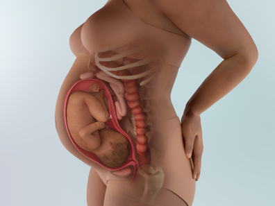
- 1. Sự phát triển của thai nhi
-
Kích thước thai nhi: 42.6cm (1.7kg) ๑◕‿‿◕๑
🌸 Làn da hồng hào, mũm mĩm: Da trước đây có màu đỏ hỏn, giờ đây dày hơn nhờ tích tụ mỡ dưới da (피하지방) và tạo màu hồng hào. Nhờ lớp mỡ này, bé trông mũm mĩm, tròn trịa và rất đáng yêu.
💅 Móng tay, móng chân gần như đã hoàn thiện: Móng tay và móng chân nhỏ xíu đã mọc gần hết đến đầu ngón tay, ngón chân.
💖 Kiểm tra nhịp tim thai (태아 심음 검사): Có thể xác định nhịp tim của bé thông qua kiểm tra nhịp tim thai (태아 심음 검사) – đây là phương pháp kiểm tra cử động thai (태동 검사). Nếu bé vận động tốt, nghĩa là không có vấn đề gì.
👶 Sinh đôi có phổi trưởng thành nhanh hơn: Các bé sinh đôi thường ra đời sớm hơn một bé đơn, nên phổi phát triển sớm hơn. Bé đơn: phổi hoàn thiện vào tuần thứ 36. Bé sinh đôi: phổi hoàn thiện vào tuần thứ 32. Do đó, thai kỳ sinh đôi thường sinh sớm hơn dự kiến, khoảng 80% bà mẹ mang thai đôi cảm nhận cơn chuyển dạ sớm hơn dự kiến khoảng 3 tuần.
🧬 Cơ thể bé đang tích trữ những khoáng chất quan trọng như sắt, canxi và phốt-pho. Lượng sắt mà bé tích trữ ở giai đoạn này sẽ đủ dùng trong 6 tháng đầu đời, cho đến khi bé bắt đầu ăn dặm.
👶 Cơ quan sinh dục của bé: đối với bé trai, cơ quan sinh dục ngoài đã hình thành và tinh hoàn bắt đầu xuống bìu (scrotum); đối với bé gái, tử cung và buồng trứng đã ở vị trí đúng, với tất cả các trứng mà bé sẽ có trong đời.
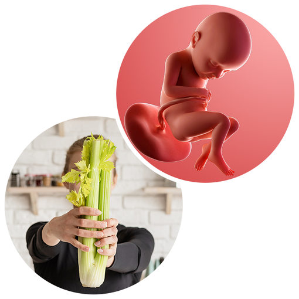
☀️Bé của bạn dài khoảng bằng một bó cần tây (celery)😍.
- 2. Thay đổi của cơ thể mẹ
-
Mẹ thường xuyên phải hít thở sâu (심호흡) và cảm thấy khó ăn uống. Chiều cao đáy tử cung (자궁저부) lúc này khoảng 25–28cm, bụng ngày càng to ra, tử cung dâng lên gần 7–8cm dưới xương ức, gây áp lực lên dạ dày nên việc ăn uống trở nên khó chịu.
Cử động của thai nhi (태동) mạnh hơn, mẹ dễ bị hồi hộp, hụt hơi (숨이 차), và cảm giác không thở đủ ngay cả khi cố hít thở sâu. Khi nằm ngửa, mẹ sẽ khó thở hơn và thường không thể nằm thẳng thoải mái.
Tử cung co thắt nhẹ (자궁이 수축) nên trong ngày mẹ có thể cảm thấy bụng căng cứng 4–5 lần. Cơ thể mẹ bắt đầu chuẩn bị cho sinh nở, đồng thời dịch tiết (분비물) cũng tăng lên.
Khi di chuyển, khớp có thể kêu lục cục. Đây là do hormone thai kỳ làm khớp giãn và yếu đi. Cẩn thận với các cơ quanh cột sống, vì dễ bị chấn thương. Thường đến gần ngày sinh, tình trạng này sẽ tự cải thiện, nên không cần quá lo lắng.
Nếu mẹ dáng cao, thì không gian theo chiều dọc lớn hơn cho tử cung phát triển, có thể bụng lộ muộn hơn. Mẹ có thân hình đầy đặn cũng có thể lộ bụng muộn, vì đường viền bụng có thể không rõ ràng. Hình dáng và cảm giác bụng thay đổi theo hormone, cân nặng trước khi mang thai, chiều cao, hình dáng cơ thể, độ săn chắc cơ bắp và việc đây có phải là lần mang thai đầu tiên không.
Chảy máu nướu (Bleeding gums)
- Khoảng 75% bà bầu bị chảy máu nướu trong thai kỳ. Tình trạng này thường rõ hơn trong tam cá nguyệt thứ ba, khi mức hormone estrogen và progesterone đạt đỉnh. Những thay đổi hormone này làm tăng lưu lượng máu đến niêm mạc (mucous membranes) và khiến nướu nhạy cảm hơn.
- Để giữ nướu và răng (gums and teeth) khỏe mạnh, duy trì thói quen chăm sóc răng miệng (oral health) tốt: đánh răng hai lần mỗi ngày (hoặc sau mỗi bữa nếu có thể) bằng bàn chải mềm, dùng chỉ nha khoa hàng ngày, cân nhắc nước súc miệng có fluoride, và đi khám nha sĩ định kỳ. Trong suốt thai kỳ, việc chụp X-quang răng, cạo vôi răng và gây tê tại chỗ (local anesthesia) đều an toàn.
Ngứa da (Itching skin)
- Nếu các biện pháp đơn giản như dùng kem dưỡng hoặc tắm bột yến mạch ấm không hiệu quả, hãy hỏi bác sĩ về thuốc bôi chống ngứa (topical, over-the-counter anti-itch medications). Hầu hết đều an toàn trong thai kỳ nhưng cần hỏi trước khi sử dụng.
- Ngứa nặng có thể là triệu chứng của bệnh lý tiềm ẩn như ứ mật thai kỳ (cholestasis) – một bệnh gan cần điều trị y tế ngay lập tức. Liên hệ bác sĩ nếu bạn: cảm thấy ngứa nhiều (đặc biệt tay và chân) nhưng không có phát ban, xuất hiện phát ban mới, hoặc bệnh da trở nên nặng hơn.
Rạn da (Stretch marks)
- Thai nhi và cơ thể bạn đang phát triển, da căng nhanh để theo kịp, dẫn đến rạn da, đặc biệt ở bụng và ngực. Một số phụ nữ không bị rạn da, nhưng khoảng một nửa thì có. Các yếu tố ảnh hưởng gồm di truyền: nếu mẹ bạn bị rạn khi mang thai, bạn cũng có khả năng. Tăng cân nhanh, mang đa thai, thai to, hoặc dư nước ối cũng làm tăng nguy cơ rạn da.
- Rạn da thường mờ dần khoảng 6–12 tháng sau sinh, màu sắc nhạt hơn vùng da xung quanh.
- 3. Lưu ý về sức khỏe
-
🤱 Chuẩn bị cho việc cho con bú
Ai cũng biết sữa mẹ (모유 수유) tốt cho bé, nhưng không phải ai cũng thành công khi cho con bú. Để cho con bú thuận lợi, cần chuẩn bị những điều sau:
✓ Hãy kiểm tra xem núm vú của mẹ có phù hợp để bé ngậm dễ dàng không. Nếu núm vú bị tụt (함몰 유두), hãy sử dụng dụng cụ chỉnh núm vú (함몰 유두 교정기) để núm vú nhô ra đủ cho bé ngậm.
✓ Vệ sinh núm vú (유두 청결 관리): Từ giữa thai kỳ, núm vú có thể tiết dịch nhẹ, hãy rửa nhẹ nhàng khi tắm.
✓ Chuẩn bị các vật dụng cho việc cho con bú (모유 수유 용품): Có nhiều sản phẩm hỗ trợ cho việc cho bú, từ miếng lót, gối cho đến túi chườm ngực giảm đau, kem dưỡng núm vú. Bạn có thể tham khảo kinh nghiệm từ các mẹ khác trước khi mua.
💧 Uống nhiều nước
- Hiện tại, mẹ đang “nuôi hai người” (mẹ và bé), nên cơ thể mẹ tích tụ nhiều chất thải hơn bình thường và cần thải ra hiệu quả hơn.
- Nước giúp lọc chất thải qua thận và bài tiết ra ngoài, đồng thời tăng lượng nước tiểu để làm loãng chất thải, giúp ngăn ngừa nhiễm trùng đường tiết niệu.
🧘 Tập vận động vùng chậu để chuẩn bị sinh (골반 운동)
Để tăng cường sức mạnh vùng chậu (골반) và thuận lợi cho quá trình sinh, hãy bắt đầu tập các bài tập vùng chậu từ giai đoạn này. Ví dụ:
- Tựa lưng vào tường, đứng thẳng theo đường cong tự nhiên của cột sống, thả lỏng lưng → Hít sâu, ép phần thắt lưng sát vào tường → Thở ra, trở về tư thế ban đầu.
- Thực hiện khoảng 5 phút, giúp vận động vùng chậu và hỗ trợ quá trình sinh.
Nếu cơ thể ít vận động, ban đêm dễ bị mất ngủ (불면증) hoặc nguy cơ béo phì cao.
Không chỉ cân nặng, nghỉ ngơi quá mức làm nhịp sinh học cơ thể (신체리듬) bị rối loạn, có thể là nguyên nhân sinh non (조산).
Nên vận động vừa phải và làm việc nhà (가사노동) để cơ thể được kích thích hợp lý.
🦴 Bổ sung canxi (칼슘)
- Để xương bé phát triển, cần canxi từ cơ thể mẹ. Nếu mẹ thiếu canxi từ thức ăn, cơ thể sẽ lấy canxi từ xương mẹ, dẫn đến nguy cơ ảnh hưởng đến sức khỏe mẹ.
- Hãy ăn hạt, sản phẩm từ sữa, đậu phụ, rau xanh. Nếu khó bổ sung qua ăn uống, có thể dùng thực phẩm bổ sung canxi.
🔄 Điều chỉnh ngôi ngược (역아 교정)
- Ngôi ngược là khi đầu bé hướng lên thay vì xuống tử cung. Nếu sinh như vậy, chân bé ra trước và có thể gây tổn thương não.
- Từ tháng thứ 8, tập bài tập chỉnh ngôi ngược đều đặn, đến tháng cuối, bé có thể quay đầu về vị trí đúng, không cần quá lo lắng.
Khám định kỳ (정기검진)
- Đừng quên đi khám để kiểm tra protein niệu (단백뇨), cân nặng (체중), huyết áp (혈압)… Khi nước ối (양수) quá ít hoặc quá nhiều có thể gây vấn đề, nên kiểm tra bằng siêu âm (초음파 검사).
- Nếu thai nhi nhỏ bất thường, có thể nghi ngờ suy phát triển trong tử cung (자궁 내 발육 지연).
- Việc sinh trẻ quá cân (거대아) cũng khó nuôi như sinh trẻ thiếu cân (체중미달의 미숙아). Trẻ thiếu cân phát triển chậm, ảnh hưởng đến sự cân bằng cơ thể và tinh thần.
- Phụ nữ vốn cơ thể gầy (마른 체격) có thể sinh trẻ thiếu cân, nhưng nếu mẹ bị cao huyết áp (고혈압), hút thuốc, uống rượu, dùng thuốc, dinh dưỡng kém cũng là nguyên nhân sinh trẻ thiếu cân. Thai nhi thiếu cân cần theo dõi cân nặng thường xuyên qua siêu âm (초음파) để đảm bảo phát triển.
Đề phòng cao huyết áp (고혈압)
- Cao huyết áp là một trong các triệu chứng của tiền sản giật (임신중독증). Để phòng ngừa, bữa tối nên ăn các món chế biến từ đậu nành hoặc đậu phụ (대두, 두부) và ngay khi thức dậy buổi sáng uống một cốc nước.
- Trong đậu có chất nattokinase (나토우키나제) giúp tuần hoàn máu tốt hơn và ổn định huyết áp.
- Ngoài ra, bà bầu (임신부) dễ mất nước do đổ mồ hôi nhiều khi ngủ ban đêm. Nếu cơ thể thiếu nước, tuần hoàn máu kém, dẫn đến huyết áp tăng, vì vậy cần uống nước lọc vào buổi sáng.
Khi đau xương sườn, hãy điều chỉnh nhịp thở
- Ở giai đoạn này, xương của thai nhi phát triển ngày càng hoàn thiện và lớn dần, tư thế co lại không còn thoải mái, nên bé liên tục thay đổi tư thế, gây đau dữ dội như xuyên qua xương sườn mẹ.
- Thai nhi cử động nhiều, mẹ sẽ mệt mỏi theo. Khi đó, nâng một tay lên đầu và thở sâu (심호흡), sau khi thở xong hạ tay xuống và nghỉ một lát sẽ giảm đau. Nếu làm vậy vẫn không hiệu quả thì cũng không còn cách nào khác.
- Cơn đau xương sườn giảm khi thai nhi di chuyển xuống dưới tử cung.
- 4. Quan hệ vợ chồng khi mang thai
-
Cần giảm đáng kể tần suất quan hệ. Dù thai nhi được bảo vệ bởi nhau thai và nước ối (태반과 양수) nên ít nguy hại, nhưng vẫn nên giảm tần suất quan hệ. Cần lưu ý nếu chồng quan hệ quá mạnh thì nguy cơ sinh non tăng cao.
👨Vai trò của người bố:
Nếu bố giúp mẹ, tỷ lệ thành công trong việc cho con bú tăng gấp đôi
Những người bố hiện đại rất tích cực tham gia việc chăm sóc con, nhưng đôi khi vẫn nghĩ việc cho con bú (모유 수유) là chỉ của mẹ. Tuy nhiên, khi bố tham gia tích cực vào quá trình cho con bú, tỷ lệ mẹ nuôi con hoàn toàn bằng sữa mẹ (완전 모유 수유율) có thể tăng gấp đôi👨🍼. Để việc cho con bú thành công, bố có thể hỗ trợ mẹ bằng những cách sau:
✓ Học cách massage ngực để giúp mẹ phòng tránh tắc tia sữa, đau ngực.
✓ Chuẩn bị sẵn gối hoặc ghế sofa cho mẹ khi sắp cho bé bú.
✓ Sau khoảng 20–30 phút mẹ ngồi một tư thế để cho bé bú, mẹ sẽ rất mệt; bố có thể đảm nhiệm việc vỗ ợ, ru bé ngủ sau khi bú.
✓ Sử dụng sữa mẹ đã vắt sẵn để hỗ trợ bú đêm, bố có thể thay mẹ thực hiện.
Bố cũng phải chú ý sức khỏe
- Bố cũng cần chuẩn bị thể trạng khỏe mạnh khi mẹ sinh em bé💪. Khi bé ra đời, bố phải bảo vệ bé khỏi các bệnh như cúm, ho gà (백일해). Những bệnh này có thể gây nguy hiểm cho trẻ sơ sinh và thường lây từ các thành viên trong gia đình.
- Mẹ thường được khám định kỳ, nhưng bố có ít cơ hội kiểm tra sức khỏe, nên nếu có triệu chứng, bố nên đi khám và tiêm phòng đầy đủ.
- 5. Trọng tâm thai giáo
-
Chú ý cung cấp oxy (산소공급)
Trong thai kỳ, não thai nhi đang phát triển nhanh🧠🧠, đặc biệt là các mạch não và mạng lưới thần kinh.
Oxy là yếu tố quan trọng để tế bào não phát triển, giúp tế bào thần kinh phân chia, tạo kết nối, và hình thành bộ máy nhận thức ban đầu của bé.
Nếu mẹ thiếu oxy, não bé có thể phát triển chậm hoặc chịu ảnh hưởng tiêu cực.
💡 Về thực hành:
- Mẹ bầu hít thở sâu, đều, và thở bằng bụng (복식호흡 – thở kiểu cơ hoành) giúp tăng lượng oxy vào máu, từ đó oxy qua nhau thai đến bé tốt hơn.
❌ Tránh căng thẳng, làm việc quá sức, hoặc môi trường thiếu oxy (ví dụ ở cao, khói thuốc, ô nhiễm) vì sẽ giảm oxy đến thai nhi.
✅ Việc mẹ thở tốt là đủ cung cấp oxy đến bé.
Trò chuyện cùng thai nhi (태담)
🗣️ Trò chuyện, hát, đọc sách cho bé, hoặc tưởng tượng nói chuyện với bé không trực tiếp cung cấp oxy, nhưng kết hợp với việc hít thở sâu và thư giãn của mẹ, sẽ giúp:
- Mẹ bớt căng thẳng → huyết áp và lưu lượng máu ổn định → não bé nhận đủ oxy.
- Kích thích cảm xúc tích cực, tạo môi trường thần kinh giàu chất xúc tác cho não bé (những kết nối đầu đời giữa cảm xúc và nhận thức).🌈
Nói cách khác, việc trò chuyện với bé là một hình thức thai giáo tinh thần, còn việc cung cấp oxy cho não bé là khía cạnh vật lý – chúng “đi đôi” với nhau👐. Việc trò chuyện với bé không trực tiếp mang oxy đến cho bé, mà giúp mẹ thư giãn, hít thở sâu, tạo điều kiện tốt cho oxy và dinh dưỡng đến bé.
Vì vậy, giai đoạn này, cha mẹ cần coi thai nhi như một cá thể hoàn chỉnh, không chỉ kể chuyện mà nên trò chuyện như cùng bàn bạc mọi việc với bé. Việc cha mẹ công nhận sự tồn tại và khả năng biết hiểu, biết suy nghĩ của thai nhi sẽ ảnh hưởng rất tốt đến sự phát triển não bộ 💖💖. Đặc biệt, cần chuẩn bị sinh nở cùng bé. Nói với bé: "Mẹ và bố đang chờ ngày gặp con🥰", "Mẹ đang rất phấn khởi chuẩn bị sinh để gặp con😍". Khi tập trung lắng nghe, sẽ cảm nhận được thai nhi trong bụng hiểu và phản hồi. Yêu thương và tôn trọng bé là cách tốt nhất để phát triển não bộ thai nhi.
- 6. Các thông tin cần biết khác
-
⚠️ Sinh non (조산) có thể xảy ra bất ngờ, nên từ lúc này chuẩn bị trước cho sinh nở là tốt.
🗓️ Khoảng 28 tuần (28주경) nên mua và chuẩn bị đồ dùng sinh nở (출산용품) theo kế hoạch. Đây cũng là thời điểm dịch tiết (분비물) tăng lên, nên vệ sinh vùng dưới để tránh độ ẩm cao, và tắm sạch sẽ hàng ngày để đề phòng trường hợp đi sinh bất ngờ.
💪 Luyện tập các động tác hỗ trợ sinh (해산에 필요한 보조 동작). Đăng ký lớp học cho bà bầu (임신부 교실) để học thở bụng (복식호흡), các kỹ thuật ép và căng bụng (압박법 및 배에 힘주기) cùng các động tác hỗ trợ sinh khác, sẽ giúp không bị bối rối khi cơn đau bắt đầu.
🏠 Lập kế hoạch trang trí phòng cho bé (아기 방 꾸미기에 대한 계획). Xác định trước không gian riêng cho bé và trang trí đẹp mắt🌸. Không nhất thiết phải có phòng riêng, có thể chuẩn bị góc ngủ cho bé trong phòng ngủ của vợ chồng. Sắp xếp đồ dùng cho bé (아기용품)🧸 gọn gàng để dễ tìm và sử dụng khi cần. Số lượng đồ dùng cho bé thường nhiều hơn dự đoán, nếu không sắp xếp tốt sẽ gây khó khăn khi tìm kiếm và sử dụng.
-
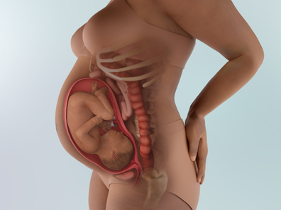
- 1. Sự phát triển của thai nhi
-
Kích thước thai nhi: 43.9cm (1.9kg)☺️😇
🧠 Xương sọ của bé vẫn còn mềm
- Khác với những phần xương khác đã cứng cáp dần theo quá trình phát triển, xương sọ của bé vẫn còn khá mềm. Nhờ vậy, khi sinh, đường kính hộp sọ có thể thu nhỏ lại, giúp bé dễ dàng đi qua đường sinh hơn (birth canal – bao gồm cổ tử cung, âm đạo và âm hộ).
- Áp lực lên đầu trong quá trình sinh mạnh đến mức nhiều em bé khi chào đời có đầu hơi nhọn. Các xương sọ sẽ không hợp nhất hoàn toàn cho đến khi trưởng thành, giúp hộp sọ có thể phát triển theo sự lớn lên của não bộ và các mô khác trong giai đoạn sơ sinh và thời thơ ấu.
🌈 Cơ quan sinh dục đã phát triển đầy đủ
- Ở bé gái, môi lớn đã phát triển; ở bé trai, tinh hoàn đã hoàn toàn di chuyển xuống bìu. Hiện tại, cả bé trai lẫn bé gái đều đang tiết ra hormone giới tính rất mạnh. Vì vậy khi sinh, bộ phận sinh dục của bé có thể trông lớn và hơi sưng.
🤰 Cử động của bé được cảm nhận rõ ràng hơn
- Cơ thể bé vẫn tiếp tục lớn lên, nhưng lượng nước ối đã đạt mức tối đa và sẽ không tăng thêm nữa. Điều này khiến không gian trong bụng mẹ trở nên chật hơn.
- Vì lớp nước ối làm đệm đã ít đi nên những cử động của bé sẽ được mẹ cảm nhận mạnh mẽ hơn nhiều!
- Khi bé chuyển sang tư thế đầu quay xuống để chuẩn bị sinh, mẹ có thể cảm thấy những cú đạp ở vị trí mới.
- Mẹ có thể thấy hơi khó chịu, nhưng cố lên một chút nữa thôi, bé sắp gặp mẹ rồi 🥰🤗
🛡️ Hệ miễn dịch đang phát triển
- Bé đang hình thành hệ miễn dịch dựa trên kháng thể nhận được từ mẹ. Khi hệ miễn dịch đã hình thành, bé có khả năng tự bảo vệ bản thân. Bé đang chuẩn bị để bước ra khỏi tử cung và đối mặt với những vi khuẩn xấu ngoài thế giới này.
😇 Làn da của em bé mềm mại hơn
- Bé yêu đang nhanh chóng mất đi vẻ nhăn nheo trước đó. Làn da của bé ít đỏ và bớt trong suốt hơn, thay vào đó, làn da trở nên mềm mại và mịn màng cùng với cơ thể đầy đặn dần để chuẩn bị chào đời.
- Các cơ quan cũng gần như hoàn thiện và lớp lông tơ trên da hầu như biến mất.
- Móng tay đã dài chạm đến đầu ngón tay, nhưng móng chân vẫn còn phát triển chưa đầy đủ. Tóc trên đầu cũng đã dày hơn khá nhiều.
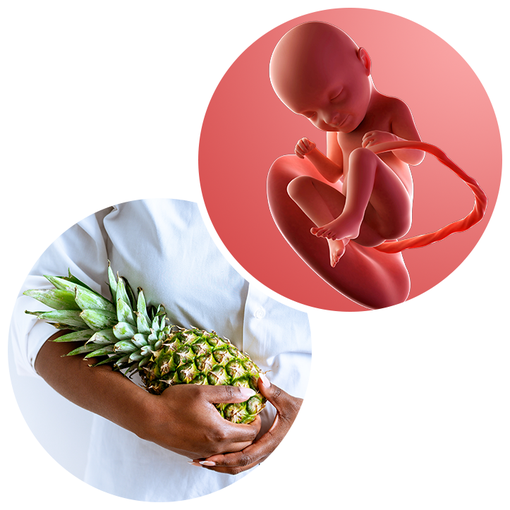
🎀 Bé của bạn có kích thước khoảng bằng một quả dứa (pineapple)🥰.
- 2. Thay đổi của cơ thể mẹ
-
Khó thở
Đây là giai đoạn khó khăn đến mức có thể diễn tả là “thở bằng vai” (어깨로 숨을 쉰다).
Tử cung của mẹ tăng kích thước và đẩy lên gần vùng thượng vị, ép lên lồng ngực khiến mẹ khó ăn đủ bữa, tim bị chèn ép dẫn đến nhịp tim tăng nhanh và hơi thở trở nên dồn dập.
Nếu huyết áp cao hơn bình thường hoặc nếu có quá nhiều nước ối, điều đó cũng có thể gây khó thở.
Khó thở nhẹ đến trung bình là bình thường vào cuối thai kỳ, nhưng nếu triệu chứng nặng hơn, hãy liên hệ bác sĩ. Nếu mẹ khó thở rõ rệt, ho kéo dài hoặc tim đập nhanh, điều này có thể là dấu hiệu của tình trạng sức khỏe nghiêm trọng cần được chăm sóc y tế.
Khí hư ra nhiều hơn và có cảm giác ngứa
Khi ngày sinh đến gần, âm đạo và cổ tử cung trở nên mềm hơn, kèm theo lượng dịch nhầy đặc tiết ra nhiều hơn. Điều này cho thấy cơ thể mẹ đang chuẩn bị cho việc sinh nở!
Nếu không có lẫn máu thì không sao, mẹ đừng lo lắng.
Hãy mặc quần lót chất liệu cotton thoáng khí và thay thường xuyên. Nếu cần, mẹ có thể dùng miếng lót quần lót để tránh ẩm ướt gây ngứa.
Bên cạnh đó, trọng lượng tử cung tăng lên gây đau tại vùng khớp mu (치골), đồng thời mẹ dễ bị táo bón và trĩ.
Sưng môi âm hộ
Sưng môi âm hộ là triệu chứng bình thường trong thai kỳ. Lưu lượng máu tăng kết hợp với áp lực từ tử cung đang lớn dần và sự thay đổi hormone khiến các môi xung quanh lỗ âm đạo bị sưng. Dù tình trạng sưng không phải lúc nào cũng gây đau, nó có thể gây ngứa hoặc khó chịu. Da ở vùng môi âm hộ cũng có thể trông sẫm màu hơn.
Khó có thể ngăn hoàn toàn tình trạng sưng môi âm hộ, nhưng bạn có thể giảm khó chịu bằng cách tránh ngồi hoặc đứng quá lâu. Thay vào đó, hãy thay đổi tư thế thường xuyên trong ngày. Dành thời gian để nằm nghỉ, nhưng cũng nên vận động nhẹ nhàng. Bạn cũng có thể mặc đồ lót hỗ trợ có tính năng nén nhẹ để kiểm soát sưng. Nếu rất khó chịu, hãy chườm lạnh bằng khăn vải sạch lên vùng này.
Đi tiểu nhiều
Hầu hết phụ nữ mang thai đều trải qua tình trạng đi tiểu nhiều. Dù đi tiểu nhiều không gây hại, nó có thể gây khó chịu và phiền toái khi bạn phải liên tục vào nhà vệ sinh. Ngoài ra, thật khó để ngủ ngon khi bạn cứ phải thức dậy nhiều lần để đi tiểu.
Để giảm bớt, hãy hạn chế uống nước khi gần đến giờ ngủ. Tránh cà phê và nước ngọt có ga cũng có thể giúp bạn giảm nhu cầu đi tiểu.
Khi đi tiểu, hãy dành thời gian và đảm bảo bàng quang được làm trống hoàn toàn. (Một mẹo: khi gần tiểu xong, hãy hơi nghiêng người về phía trước để đẩy ra tối đa lượng nước tiểu còn lại.)
Nếu bạn cũng gặp tình trạng són tiểu, hãy đi vệ sinh ngay khi cơ thể báo hiệu và có thể dùng băng lót để phòng ngừa trường hợp rỉ nước tiểu.
Lông, tóc có thể mọc dày hơn
Nhờ thay đổi nội tiết tố, tóc bạn có thể trông dày hơn hoặc mọc nhanh hơn trong thai kỳ. Điều này khá tuyệt với tóc trên đầu, nhưng một số mẹ bầu cũng nhận thấy lông trên cơ thể và mặt xuất hiện nhiều hơn.
Bạn không cần cạo hay tẩy lông nếu không muốn. Nhưng nếu bạn thích ít lông hơn, bạn có thể băn khoăn liệu tẩy lông vùng bikini khi mang thai có an toàn không.
Tẩy lông khi mang thai là an toàn, nhưng da bạn có thể nhạy cảm hơn bình thường. Để giảm kích ứng, hãy đợi đến khi lông dài khoảng 0.6–2cm, vệ sinh sạch vùng da trước khi tẩy, và đảm bảo sáp tẩy ở nhiệt độ an toàn.
Khi gần đến ngày sinh, đừng tẩy hoặc cạo lông vùng bikini hay bụng dưới. Việc cạo hoặc tẩy trước phẫu thuật có thể gây kích ứng nang lông và làm tăng nguy cơ nhiễm trùng.
- 3. Lưu ý về sức khỏe
-
🍎 Hãy chuẩn bị các món ăn nhẹ
- Tăng cân quá nhiều có thể gây các vấn đề như tiền sản giật, nhưng không tăng cân cũng không tốt.
- Nếu chỉ ăn ba bữa mà vẫn không đủ năng lượng, đó có thể là dấu hiệu cơ thể đang thiếu chất. Vì vậy, hãy chuẩn bị những món ăn nhẹ lành mạnh và ăn từng chút một giữa các bữa chính.
🚫 Tạm ngừng các chuyến đi xa
- Từ giai đoạn này, mẹ phải luôn trong trạng thái sẵn sàng đến bệnh viện bất cứ lúc nào. Vậy nên hãy tạm dừng việc di chuyển đường dài.
- Đi xe ô tô dễ khiến mẹ mệt, còn di chuyển bằng máy bay sẽ khó xử lý nếu chẳng may có dấu hiệu sinh non. Thời gian này, mẹ hãy nghỉ ngơi và chuẩn bị thật tốt cho ngày sinh nhé.
🩺 Thực hiện các xét nghiệm để chuẩn bị cho quá trình sinh nở
- Khi mang thai, lượng máu trong cơ thể tăng nhanh, điều này có thể gây gánh nặng cho chức năng tim. Nếu cảm thấy khó thở nhiều, nên thực hiện điện tâm đồ (심전도 검사).
- Do lượng máu tăng gấp 1.5 lần so với trước khi mang thai, mẹ không chỉ dễ bị quá tải tim mà từ tam cá nguyệt giữa trở đi cũng dễ xuất hiện triệu chứng thiếu máu.
- Thời điểm này nên làm xét nghiệm thiếu máu một lần nữa, bao gồm xét nghiệm hemoglobin (혈색소) và hematocrit (적혈구 용적률).
- Nếu có trường hợp phải phẫu thuật hoặc gây mê do tai nạn bất ngờ khi mang thai, việc chụp X-quang (X-선 촬영) trước sẽ hữu ích trong tình huống khẩn cấp.
- Ngoài ra, mẹ cũng được kiểm tra chức năng gan và xét nghiệm bệnh lây truyền qua đường tình dục (성병검사) một lần nữa.
‼️ Ăn các món mềm và chia nhỏ bữa ăn
- Thay vì ăn các món như cơm hay bánh mì, mẹ nên chọn những thực phẩm dễ tiêu như cá thịt trắng, rau củ, rong biển - các loại thực phẩm ít calo nhưng giàu khoáng chất và vi lượng - nhớ nhai kỹ khi ăn nhiều lần trong ngày.
- Do cơ thể trở nên nặng nề, một số mẹ bầu có thể muốn ăn qua loa bằng đồ ăn nhanh. Tuy nhiên, đồ ăn nhanh chứa nhiều calo và dầu mỡ, có thể trở thành chế độ ăn nguy hiểm trong giai đoạn cuối thai kỳ. Nếu thật sự thèm những món như vậy, mẹ nên tự chuẩn bị tại nhà bằng bánh mì lúa mạch đen hoặc bánh mì sandwich, rau củ và thịt nạc để giảm lượng muối và chất béo nạp vào.
⚠️ Nếu bụng bị gò, hãy nằm xuống nghỉ ngay
- Khi xuất hiện triệu chứng bụng gò, hãy lập tức nằm xuống nghỉ ngơi, đặc biệt là thở sâu (심호흡) sẽ giúp cải thiện rõ rệt.
Khi nằm, mẹ nên kê một chiếc gối dưới đầu gối để giúp lưng thả lỏng.
- Ngoài ra, khi đứng dậy từ tư thế nằm, mẹ cần tránh những cử động đột ngột vì điều đó có thể gây áp lực lên bụng. Hãy nghiêng người sang một bên rồi chống tay từ từ nâng phần thân trên lên.
- Khi ra ngoài, mẹ nên dùng một tay ôm bụng để bảo vệ thai nhi khỏi các va chạm nhỏ từ môi trường bên ngoài.
🔔 Đếm cử động của bé trong bụng
- Hãy chọn thời điểm trong ngày mà bé thường hoạt động. Để đếm cử động thai, bạn hãy ngồi yên hoặc nằm nghiêng sang một bên và bấm giờ xem mất bao lâu để cảm nhận được 10 cử động rõ ràng của bé (bao gồm đạp, giật nhẹ, xoay người).
- Hãy gọi cho bác sĩ nếu bạn không cảm nhận được ít nhất 10 cử động trong vòng 1-2 giờ. Có thể không có vấn đề gì, nhưng bác sĩ có thể muốn kiểm tra để chắc chắn mọi thứ ổn.
- 4. Quan hệ vợ chồng khi mang thai
-
Quan hệ tình dục: Nếu chồng kích thích âm hộ hoặc âm đạo bằng tay để tạo khoái cảm, sự kích thích quá mạnh có thể khiến tử cung co thắt và ảnh hưởng đến nhịp tim của thai nhi. Vì vậy, nên tránh những kích thích quá mạnh. Nếu có hiện tượng rỉ ối (양막 파수) hoặc chảy máu, không nên quan hệ tình dục. Hãy duy trì sự thân mật bằng những cách nhẹ nhàng như massage êm dịu.
👨Vai trò của chồng:
🥗 Hãy chuẩn bị những món ăn nhẹ lành mạnh cho vợ
Trong giai đoạn cuối thai kỳ, chỉ ba bữa ăn chính có thể không đủ dinh dưỡng cho mẹ.
Hãy chuẩn bị sẵn các món như các loại hạt, hoa quả theo mùa hoặc trái cây sấy, sữa chua, bánh mì lúa mạch đen, khoai lang, bí đỏ… và đưa cho mẹ ăn khi cần để bổ sung năng lượng.
🚶 Cùng vợ đi bộ - bước đầu cho một ca sinh khỏe mạnh
Mẹ chỉ cần được cùng bố ra ngoài đi bộ chậm rãi trước nhà cũng đã thấy vui rồi.
Vận động nhẹ cũng rất tốt cho một ca sinh nở khỏe mạnh. Nếu thời tiết không thuận tiện để ra ngoài, hai vợ chồng có thể cùng nhau tập vài động tác giãn cơ đơn giản trong nhà!
- 5. Trọng tâm thai giáo
-
- Kể cho bé nghe những câu chuyện cổ tích mang hy vọng như các bài cầu nguyện, truyện danh nhân.🤗
- Đây là giai đoạn cần tập trung hơn vì là phần cuối của quá trình thai giáo. Sau khi trò chuyện với thai nhi về những câu chuyện đời thường, mẹ tiến hành thai giáo bằng truyện cổ tích.
- Nên chọn những câu chuyện không quá ngắn, đặc biệt là các bài cầu nguyện, Kinh Thánh, truyện danh nhân, thần thoại Hy Lạp, truyện lịch sử - những nội dung chứa đựng hy vọng và mong ước chân thành của người mẹ.💞
- 6. Các thông tin cần biết khác
-
👶 Chuẩn bị đủ quần áo cho em bé
Trẻ sơ sinh không làm được nhiều thứ, nhưng tiêu thụ quần áo thì rất nhiều. Trớ sữa và thay tã thường xuyên trong những tuần đầu, nên bạn cần thật nhiều bộ ngủ (sleepers), áo liền thân (gowns), đồ pijama, cùng một vài bộ quần áo đơn giản và phụ kiện.
Hãy chuẩn bị đủ áo ngủ cho cả tuần (cộng thêm vài bộ dự phòng), cùng với những bộ quần áo dễ phối lớp (ví dụ: bodysuit kết hợp quần thun dễ mặc).
Để giữ ấm, trẻ sơ sinh thường cần thêm một lớp so với người lớn. Tùy theo mùa, bạn có thể cần thêm tất hoặc giày mềm để giữ ấm chân bé, áo khoác lót lông (fleece) hoặc áo len, mũ chống nắng. Khi mua về, hãy giặt toàn bộ quần áo. Bạn nên giặt trước lần mặc đầu tiên để loại bỏ chất kích ứng hay hóa chất còn sót lại trên vải.
🚫 Đảm bảo an toàn trong không gian phòng của bé
Mặc dù sẽ còn lâu bé mới tự di chuyển nhiều, nhưng không bao giờ là quá sớm để làm cho phòng bé an toàn. Bạn sẽ bận rộn trong vài tháng đầu sau sinh, nên làm sớm sẽ giúp bạn nhẹ nhàng hơn sau này.
Hãy bắt đầu từ những điều cơ bản. Đảm bảo cũi của bé an toàn, và tránh sử dụng các mẫu cũi lỗi thời hay tấm chắn cũi (crib bumpers) không an toàn.
Nếu bạn treo tranh trong phòng bé, đừng treo ngay phía trên cũi hoặc bàn thay tã.
Nếu dùng đồ treo nôi (mobile), hãy để ngoài tầm với và cố định chắc chắn để tránh rơi vào cũi.
Cố định các đồ nội thất nặng vào tường, để dây điện nằm ngoài tầm với và lắp các nắp bảo vệ ổ cắm.
🤱 Giữ cơ thể luôn ấm
Nếu cơ thể bị lạnh, triệu chứng bụng gò sẽ dễ xuất hiện. Dù vào mùa hè khi bật điều hòa, nguyên tắc là giữ nhiệt độ trong phòng ở mức không làm chảy mồ hôi. Tuy nhiên, tại văn phòng thì không phải lúc nào cũng áp dụng được nguyên tắc này. Vì vậy, mẹ nên chuẩn bị khăn hoặc chăn nhỏ để phủ lên đầu gối, hoặc mang tất dài đến bắp chân để giữ cơ thể ấm.
👣 Đặt một bệ nhỏ dưới chân và kê một chân lên
Khi phải ngồi làm việc lâu trên ghế văn phòng, chân có thể bị sưng và mệt mỏi vào buổi chiều. Đặt một bệ nhỏ cỡ hộp dưới chân và kê chân lên sẽ giúp giảm áp lực lên lưng và ngăn ngừa sưng phù, mệt mỏi ở chân.
🛑 Tránh lái xe đường dài trên 1–2 giờ
Việc lái xe quãng ngắn trong thời gian ngắn thì có thể chấp nhận được đến tháng thứ 9. Tuy nhiên, nếu lái xe hơn 1 giờ liên tục thì nên tránh vì cơ thể duy trì trạng thái rung lắc lâu có thể gây co thắt tử cung.
Nếu bắt buộc phải lái lâu hơn, hãy nghỉ ngơi sau mỗi 30-40 phút. Trong thai kỳ, sự tập trung và phản xạ của mẹ dễ suy giảm so với bình thường, vì vậy càng cần chú ý đến an toàn giao thông.
-
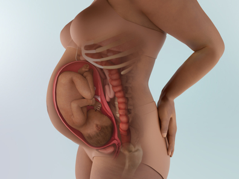
- 1. Sự phát triển của thai nhi
-
Kích thước thai nhi: 45.5cm (2.1kg) 😄💟
🛡️ Hệ miễn dịch đã phát triển
Từ mẹ, kháng thể được truyền qua dây rốn giúp hình thành các tế bào miễn dịch của bé. Trước đây, bé chủ yếu dựa vào kháng thể đi qua nhau thai, bây giờ hệ miễn dịch của bé đã phát triển đến mức có thể tự tồn tại đến 99%. Bé đang dần có khả năng tự bảo vệ mình rồi đấy.
✨ Hầu hết các chức năng đều đã phát triển
- Phổi và khả năng điều chỉnh thân nhiệt của bé vẫn còn hơi non nớt, nhưng gần như tất cả các chức năng khác đã hoàn thiện.
- Lớp gây (vernix - lớp sáp trắng trên da bé) cũng dày lên để chuẩn bị cho việc chào đời. Lớp gây này giúp bảo vệ làn da mỏng manh của bé khỏi nước ối 💧 và giúp bé dễ dàng cử động trong không gian tử cung chật chội.
🐿️ Con đang có ‘lương thực dự trữ’ trong cơ thể
- Bé đang tích trữ sắt mà mẹ truyền qua nhau thai. Giống như chú sóc gom góp hạt dẻ, bé cũng cất từng chút sắt vào gan của mình.
- Lượng sắt dự trữ này sẽ được sử dụng như nguồn dinh dưỡng khẩn cấp trong những lúc bé chưa bú được nhiều sữa mẹ.
🤗 Vị trí của bé gần như đã được cố định
Ở giai đoạn này, hầu hết thai nhi đều quay đầu xuống dưới để vào vị trí sinh. Tuy nhiên, một số bé vẫn giữ đầu hướng lên trên cho đến lúc sinh. Không gian chuyển động của bé trở nên chật hơn nên bé chỉ xoay trở nhẹ, đạp ít hơn và cử động trở nên chậm lại. Tuy vậy, bé vẫn phản ứng bằng cơ thể với các kích thích từ bên ngoài vì các giác quan đã phát triển đáng kể.
- 2. Thay đổi của cơ thể mẹ
-
📌 Đau thắt lưng và hông (요통) trở nên nghiêm trọng
- Tử cung phát triển với chiều cao đáy tử cung khoảng 30cm khiến bụng to lên, làm đau lưng nặng hơn và khiến mẹ trở nên chậm chạp hơn. Tử cung cũng chèn ép bàng quang làm tăng số lần đi tiểu và cảm giác tiểu không hết dù vừa đi xong.
- Bụng lớn cũng kéo trọng tâm cơ thể ra phía trước, làm căng và yếu đi các cơ bụng - những cơ vốn có nhiệm vụ nâng đỡ cột sống.⚡💢
Hormone thai kỳ cũng góp phần gây đau vùng đai chậu, vì chúng làm các khớp lỏng lẻo hơn. Đau vùng chậu có thể rất khó chịu và thậm chí hạn chế khả năng vận động.
- Thai kỳ cũng thường gây đau dây chằng tròn. Loại đau này có thể là một cơn đau nhói, sắc, đột ngột hoặc một cảm giác âm ỉ kéo dài ở bụng dưới hoặc vùng háng.
- Dịch tiết âm đạo trở nên đặc hơn và chứa nhiều chất nhầy hơn. Tình trạng tăng sắc tố trở nên rõ rệt, đường sọc nâu trên bụng (흑색 선) đậm lên trông thấy.
📌 Khi chân bị sưng, hãy làm mát chân
- Giai đoạn này, mắt cá chân và bàn chân sưng nhiều hơn 🦶, tay và mặt cũng có thể bị phù. Có thể bị chuột rút hoặc đau ở chân và bị vọp bẻ khi ngủ.
- Hãy kê chân cao và giữ cho chân mát 👣. Quấn chân bằng khăn lạnh cũng rất hiệu quả.
- Nếu khi ấn vào chỗ sưng mà da không trở lại như cũ, mẹ nên đi khám, đó có thể là dấu hiệu của tiền sản giật ⚠️.
📌 Táo bón
- Khoảng một nửa phụ nữ mang thai bị táo bón🚽😓. Khi mang thai, cơ thể sản xuất nhiều progesterone – loại hormone khiến các cơ giãn ra, bao gồm cả cơ của đường tiêu hóa. Thức ăn vì thế di chuyển chậm hơn và dễ gây táo bón. Mẹ cần uống nhiều nước hơn để duy trì nhu động ruột bình thường.💦💧
- Khi bụng to lên, mẹ di chuyển ít hơn, và giảm vận động dễ khiến táo bón nặng thêm. Để tránh điều này, hãy vận động thường xuyên, uống đủ nước và tăng chất xơ🥦🥦. Có thể dùng thuốc làm mềm phân không kê đơn, nhưng tránh thuốc nhuận tràng. Chủ động phòng táo bón cũng giúp giảm nguy cơ trĩ khi mang thai.
📌 Khí hư âm đạo
- Khí hư màu trắng sữa hoặc trong, mùi nhẹ và có thể loãng hoặc đặc - là bình thường, dù có mang thai hay không.
- Một số dạng khí hư khác cũng bình thường trong thai kỳ – bao gồm khí hư màu nâu (do chứa máu cũ).
- Tuy nhiên, một số khí hư cho thấy có vấn đề như: khí hư màu xanh, có mùi hôi, gây đau hoặc ngứa🤢.
- Gần cuối thai kỳ, mẹ có thể mất nút nhầy (mucus plug). Khi đó, mẹ sẽ thấy khí hư ra nhiều dần trong vài ngày, hoặc xuất hiện một cục dịch nhầy đặc, màu trong, hồng nhạt, nâu hoặc có chút máu.
- Nước ối nếu bị vỡ ối khác với khí hư. Nước ối sẽ chảy ra liên tục (không theo từng đợt), có màu trong hoặc hơi vàng nhạt, loãng và không mùi hoặc hơi ngọt.
- 3. Lưu ý về sức khỏe
-
Luôn chuẩn bị sẵn sàng cho sinh nở
Vì không biết khi nào sẽ sinh, mẹ nên luôn ở trong trạng thái sẵn sàng.
Tắm rửa thường xuyên, thay đồ lót sạch, và luôn trong trạng thái gọn gàng.🌬️
Điều quan trọng hỗ trợ sinh nở là kiểm soát hơi thở. Hãy luyện tập các kỹ thuật thở đã học ở lớp tiền sản hoặc qua video, luyện đến mức phản xạ tự nhiên.
Khi cơn đau đẻ mạnh ập đến, mẹ có thể không nghĩ được gì 😣, nên tập thật nhiều từ bây giờ sẽ rất có ích.
Hãy chuẩn bị sẵn túi đồ đi sinh
Hãy viết ra danh sách những vật dụng cần thiết khi sinh và kiểm tra xem có món nào mẹ chưa chuẩn bị không.👜
Một số bệnh viện sẽ cung cấp vài vật dụng cơ bản, nên mẹ hãy kiểm tra trước nhé!
Đồ của em bé nên được giặt sạch từ trước.
✓ Đồ của mẹ
Sổ khám thai, thẻ BHYT (thẻ 국민행복카드), băng vệ sinh dạng quần mặc vào ban đêm, đồ vệ sinh cá nhân, miếng lót thấm sữa, ống hút gập (vì khi mẹ nằm sẽ khó dùng ống hút thẳng), áo giữ ấm & tất, cardigan, máy hút sữa, đồ lót rộng, khăn ướt, đai bụng, dây buộc tóc, bảo vệ cổ tay, chăn mỏng, dép đi trong bệnh viện, đồ dưỡng da & son dưỡng môi, đệm ngồi sau sinh…
✓ Đồ của bé
Khăn quấn, khăn lớn quấn ngoài, áo sơ sinh, khăn gạc, bao tay/bao chân…
Giảm thị lực trong thai kỳ chỉ là tạm thời
Gần đây mẹ cảm thấy mắt mình yếu hơn?👀 Đừng lo, thị lực của mẹ không thật sự xấu đi đâu — tất cả chỉ là do hormone thai kỳ.
Do sự thay đổi hormone, giác mạc có thể dày lên gây cận thị hoặc viễn thị nhẹ. Lượng nước mắt cũng giảm, gây khô mắt, đặc biệt nếu mẹ đeo kính áp tròng 👁️.
Sau sinh, tình trạng này sẽ trở lại bình thường. Hiện tại mẹ nên ưu tiên dùng kính gọng.
Nếu thị lực giảm nghiêm trọng, đó có thể là dấu hiệu của tiền sản giật ⚠️, nên mẹ hãy theo dõi kỹ.
Kiểm tra vị trí của bé
Kiểm tra bằng siêu âm xem thai nhi có ở ngôi mông (둔위), ngôi ngược (역아) hay không. Nguyên nhân ngôi mông chưa được xác định rõ, nhưng nguy cơ cao hơn ở trường hợp song thai, đa thai, đa ối (양수과다증), nhau tiền đạo (전치태반), hoặc có u xơ tử cung (자궁근종).
Chú ý thực đơn
Tăng lượng tiêu thụ hành tây có thể giúp giảm lo lắng trước sinh. Giai đoạn này, do khung chậu giãn nở nên lưng, vai, cổ dễ nhức mỏi và đau nhiều → bổ sung 100g rau củ có màu xanh–vàng mỗi bữa để cung cấp vitamin nhóm B sẽ hỗ trợ giảm đau hiệu quả.
Chú trọng chuẩn bị bữa ăn nhẹ một cách đầy đủ. Giai đoạn này chỉ cần ăn một chút là thấy no, nhưng không lâu sau lại cảm thấy đói. Một số mẹ bầu dùng bánh kẹo hoặc kem tươi để chống đói, nhưng điều này dễ dẫn đến béo phì nên cần tránh. Hạn chế tối đa đồ ngọt và thực phẩm chế biến sẵn; thay vào đó, ăn bữa phụ có chứa nguồn protein và canxi.
Không nên đi xa một mình và khi ra ngoài cần mang theo đồ chuẩn bị sinh Có nhiều mẹ bầu đang mua sắm ở trung tâm thương mại thì bất ngờ xuất hiện những cơn co thắt, dẫn đến phải vào viện ngay.
Giai đoạn này thường xuất hiện cơn gò chuyển dạ giả khiến bụng căng và đau. Tốt nhất hạn chế đi lại một mình và giảm tần suất ra ngoài. Vì em bé không phải lúc nào cũng sinh đúng ngày dự sinh, nên từ giai đoạn này mẹ phải chuẩn bị sẵn sàng mọi thứ: hồ sơ nhập viện, vật dụng cá nhân cần thiết khi ở viện, đồ sơ sinh,…
- 4. Quan hệ vợ chồng khi mang thai
-
Tránh quan hệ tình dục trực tiếp và nên giải tỏa bằng các phương pháp gián tiếp như quan hệ bằng miệng (오럴 섹스). Quan hệ bằng miệng khi mang thai nhìn chung là an toàn. Tuy nhiên, chồng cần chú ý không thổi không khí vào trong âm đạo khi âu yếm để tránh nguy cơ biến chứng.
👨Vai trò của chồng:
🎒 Chồng cũng cần chuẩn bị túi đồ đi sinh
- Từ lúc bắt đầu chuyển dạ đến khi bé chào đời có thể mất nhiều thời gian. Để có thể hỗ trợ mẹ tốt nhất, bố cần ở trong trạng thái thoải mái và đầy đủ đồ dùng.
- Khi mẹ đau chuyển dạ, bố sẽ rất bối rối 😵, nên hãy chuẩn bị sẵn túi đồ cho bố từ trước, như: đồ vệ sinh cá nhân, quần áo để thay, dép, đồ ăn nhẹ & đồ uống, gối, chăn, sạc điện thoại. Điện thoại rất quan trọng để đo cơn co, chụp ảnh khoảnh khắc sinh con 📸, liên lạc với người thân,...
⚠️ Lắp ghế an toàn cho trẻ sơ sinh và kiểm tra thật kỹ
Nếu gia đình định lắp ghế an toàn cho bé trên ô tô, bố cần chú ý:
✓ Ghế trẻ sơ sinh phải được lắp quay về phía sau. Đây là cách bảo vệ bé hiệu quả nhất.
✓ Hãy lắp ghế ở góc 45 độ. Nếu quá dựng đứng, khi có va chạm, cổ bé có thể bị gập hoặc gây tổn thương nội tạng.
✓ Chỗ an toàn nhất là ghế sau. Đừng lắp ghế trẻ em ở ghế phụ phía trước — túi khí và kính chắn gió rất nguy hiểm.
✓ Khi ngồi vào ghế, không mặc áo khoác dày cho bé. Trong tai nạn, áo khoác dày khiến dây an toàn không cố định được cơ thể bé, có thể khiến bé bị văng ra ngoài.
- 5. Trọng tâm thai giáo
-
- Rèn luyện kỹ thuật thở Sophrology (소프롤로지) hoặc thở Lamaze (라마즈 호흡) để chuẩn bị cho cuộc sinh.
- Từ trước đến nay mẹ đã dành nhiều nỗ lực cho thai nhi. Tuy nhiên, việc sinh dễ hay sinh khó sẽ quyết định mức độ trọn vẹn của những nỗ lực ấy. Vì vậy, cần tiếp tục duy trì các hoạt động giúp mẹ sinh thường thuận lợi.
- Có thể coi việc chuẩn bị cho sinh thuận là nội dung thai giáo quan trọng nhất ở giai đoạn này. Học phương pháp thở Sophrology, thở Lamaze, hoặc các bài tập thể dục cho bà bầu để giảm nỗi sợ sinh nở, đồng thời duy trì trạng thái tích cực và thực hành thiền sẽ rất hữu ích.
- Phương pháp thở Sophrology là kỹ thuật sinh vượt đau dựa trên luyện tập ý thức, kết hợp giữa thiền trị liệu và giãn cơ để ổn định tinh thần và cơ thể.
- Phương pháp thở Lamaze tập trung vào việc điều hòa hơi thở bị rối loạn trong lúc chuyển dạ, giúp cung cấp oxy hiệu quả cho cả mẹ và thai nhi, dựa trên kiểu thở bằng ngực (hô hấp ngực) với nhịp nâng–hạ của lồng ngực.
- 6. Các thông tin cần biết khác
-
Kiểm tra không gò (Non-Stress Test – NST / Kiểm tra cử động thai 태동검사)
Kiểm tra không gò là một phương pháp đánh giá sức khỏe của thai nhi bằng cách sử dụng máy theo dõi tim thai điện tử (전자태아심박동감시 장치) ở sản phụ không có cơn gò tử cung. Máy sẽ ghi lại nhịp tim của thai để bác sĩ đánh giá tình trạng của bé.
Cách tiến hành:
- Mẹ đi tiểu để làm trống bàng quang, sau đó nằm trên giường. Hai cảm biến của máy theo dõi tim thai sẽ được gắn lên bụng. Máy sẽ ghi đồng thời nhịp tim thai và xem có cơn gò tử cung hay không.
- Mỗi khi mẹ cảm nhận thai máy, mẹ nhấn nút trên thiết bị đo nhịp tim để máy ghi nhận cử động đó.
- Khi thai cử động, nhịp tim thai tăng nhẹ là phản ứng hoàn toàn bình thường và khỏe mạnh.
Thời điểm và số lần thực hiện:
Thời gian và tần suất làm NST tùy thuộc vào tình trạng của mẹ và thai nhi. Kiểm tra này được chỉ định trong nhiều trường hợp như:
- Mẹ bị tiểu đường thai kỳ
- Cao huyết áp
- Thai chậm phát triển
- Ít ối
- Quá ngày dự sinh
- Giảm thai máy
Tùy tình trạng thai nhi, bác sĩ có thể yêu cầu thực hiện sớm hơn hoặc thường xuyên hơn.
-
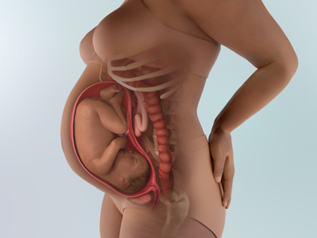
- 1. Sự phát triển của thai nhi
-
Kích thước thai nhi: 47cm (2.4kg) 👶💖
- Bé đã có hình dáng và tỉ lệ giống như một trẻ sơ sinh. Trong khoảng 5 tuần còn lại, bé sẽ tiếp tục lớn nhanh để chuẩn bị gặp bố mẹ!
- Nếu ở tam cá nguyệt giữa, lượng mỡ chỉ chiếm khoảng 2% cơ thể thì bây giờ đã tăng lên 15%, và đến lúc sinh sẽ gần đạt 30%!
- Móng tay, móng chân đã mọc đến hết đầu ngón, và bộ phận sinh dục cũng đã hoàn thiện.💅👣
- Não bộ của bé sẽ tiếp tục phát triển sau khi sinh🧠🧠. Các tế bào thần kinh phát triển mạnh mẽ hơn, nhưng lượng chất bên trong não vẫn chưa đầy đủ. Các kết nối thần kinh cũng cần thêm thời gian để hoàn thiện. Não của bé sẽ tiếp tục phát triển thêm vài năm sau khi chào đời.
- Ngoại trừ phổi, hầu hết các cơ quan nội tạng đã hoàn thiện chức năng; vì vậy nếu sinh non ở giai đoạn này, bé có thể gặp một chút vấn đề về hô hấp nhưng đa số đều có khả năng sống sót.
- Thận của em bé hiện đã phát triển hoàn chỉnh – nước tiểu đã bắt đầu được tạo ra từ khi thai được 13 tuần. Em bé đi tiểu vào trong nước ối. Phân su đầu tiên của em bé (gọi là meconium) đang tích tụ trong ruột của bé.
- Hiện tại em bé đã có các chu kỳ ngủ rõ ràng. Mẹ có thể bắt đầu nhận ra những chu kỳ, cảm thấy bé cử động nhiều hơn khi bé thức và ít hơn khi bé ngủ.😴💤
- 2. Thay đổi của cơ thể mẹ
-
📌 Tình trạng khó chịu trong sinh hoạt hằng ngày tiếp tục tăng lên. Mẹ vừa cảm thấy yên tâm vì sắp đến ngày sinh, vừa lo lắng, đôi khi nôn nóng và khó giữ bình tĩnh dẫn đến cáu gắt và dễ kích động. 😣🤯
📌 Sự lơ đãng trở nên rõ rệt hơn, đôi khi xuất hiện chảy máu cam, nghẹt mũi, ù tai và có thể xuất hiện dấu hiệu thiếu máu. Lợi trở nên yếu và dễ chảy máu.
📌 Cảm giác thèm ăn lúc nhiều lúc ít, kèm theo đau đầu, chóng mặt, choáng váng, khiến mẹ ngày càng cảm thấy không thoải mái.🤢🍽️
📌 Rất nhiều phụ nữ cảm thấy nóng khi mang thai, bất kể thời tiết thế nào. Có nhiều lý do như mẹ đang mang nhiều trọng lượng hơn, tim phải làm việc nhiều hơn để nuôi em bé, và lượng máu tăng khiến da ấm hơn. Hãy uống đủ nước và mặc đồ thoáng, rộng rãi. Vào mùa đông, nên mặc nhiều lớp để có thể cởi bớt khi cần.🔥🥵💧
📌 Trong giai đoạn cuối thai kỳ, mẹ không thể tránh hoàn toàn ợ nóng. ⚠️Cần chú ý kỹ đến những thực phẩm khiến dạ dày khó chịu, như nước có ga🍫, chocolate, 🍊trái cây họ cam quýt và nước ép, cà chua, mù tạt, giấm, bạc hà, thịt chế biến sẵn, các món ăn nhiều dầu mỡ, cay, chiên rán hoặc nêm nếm đậm.
📌 Đau đầu có thể xuất hiện khi mẹ mệt, đói hoặc mất nước. Thay đổi thị lực liên quan đến thai kỳ cũng có thể gây đau đầu, cũng như căng thẳng, trầm cảm và dị ứng. Các chuyên gia thường khuyên ghi nhật ký đau đầu để xác định nguyên nhân. Lần tới khi bị đau nửa đầu hoặc đau đầu, 📝hãy ghi lại mọi thứ đã ăn trong 24 giờ trước đó và mẹ đang làm gì khi cơn đau bắt đầu. Chườm lạnh hoặc ấm lên trán hoặc sau gáy có thể giúp giảm đau. Đừng để đói hoặc khát – hãy ăn các bữa nhỏ thường xuyên để tránh hạ đường huyết. Tập thể dục đều đặn trong thai kỳ có thể giúp giảm tần suất và mức độ đau nửa đầu, giảm căng thẳng gây đau đầu do căng cơ. Massage, thiền, yoga tiền sản và châm cứu cũng có thể giúp giảm đau đầu. 🧘♀️❄️
📌 Trĩ rất phổ biến trong tam cá nguyệt thứ ba. Những mạch máu nhỏ, sưng lên ở vùng trực tràng thường xảy ra do áp lực từ tử cung đang lớn dần, cùng với nồng độ progesterone tăng và táo bón thai kỳ. Trĩ thường gây ngứa, đau và khó chịu nhẹ – hoặc rất đau nếu bạn rặn. Một số trường hợp có thể gây chảy máu trực tràng hoặc có máu trong phân. Nên duy trì đủ nước, ăn thực phẩm giàu chất xơ và vận động thường xuyên. Tránh rặn, và nếu đã táo bón, hãy dùng thuốc làm mềm phân. Ngồi quá lâu cũng có thể gây trĩ, vì vậy hãy đứng dậy và đi lại thường xuyên nhất có thể.🍐🚶♀️💦
📌 Hầu hết các mẹ bầu xuất hiện một đường đen dọc giữa bụng gọi là linea nigra. Nếu tóc hoặc da bạn sẫm màu, đường này có thể đậm hơn. Ngoài ra, một số mẹ còn xuất hiện các mảng da sẫm màu trên mặt gọi là nám (melasma) hoặc “mặt nạ thai kỳ”. Những vùng da có sắc tố cũng có thể sẫm hơn, ví dụ như quầng vú, môi lớn, hoặc vùng nếp gấp như nách, bẹn. Chúng sẽ mờ dần sau sinh và thường trở lại màu da trước khi mang thai. Để tránh sạm da thêm, hãy dùng kem chống nắng, dùng sản phẩm chăm sóc da dịu nhẹ và tránh waxing vùng da bị ảnh hưởng.🌞🧴🌸
- 3. Lưu ý về sức khỏe
-
Luyện tập trước các phương pháp thở khi sinh
- Những kỹ thuật thở đúng giúp cung cấp đủ oxy cho cơ thể mẹ, hỗ trợ thư giãn cơ và mô, đồng thời cung cấp oxy đều đặn cho bé.
- Trong lúc chuyển dạ, hơi thở còn giúp giảm đau bằng cách phân tán sự tập trung khỏi cơn co thắt.
- Hãy thử luyện thở Lamaze, thở Sofrology, hoặc phương pháp phù hợp với bạn. Lúc sinh, dù hồi hộp hay lo lắng, bạn vẫn có thể điều chỉnh hơi thở tự nhiên hơn.
Đừng quên bổ sung chất xơ
- Khi tiêu hóa kém, nên ăn thực phẩm giàu chất xơ như rau củ, trái cây, gạo lứt, hoặc các loại ngũ cốc. Bổ sung đủ chất xơ mỗi bữa sẽ giúp phòng táo bón và kiểm soát cân nặng.
- Tuy nhiên, đừng nạp quá nhiều một lúc, vì có thể khiến bạn bị đầy hơi. Hãy tăng lượng chất xơ từ từ.
Duy trì vận động nhẹ nhàng giúp giảm đau bụng ở trẻ sơ sinh - Những bé có mẹ vận động đều đặn thường dễ ngủ hơn vào ban đêm và ít bị đau bụng hơn.
- Các nhà khoa học cho biết: nhịp tim và mức oxy của mẹ thay đổi trong lúc tập luyện giúp bé dễ chìm vào giấc ngủ. Âm thanh và chuyển động mẹ tạo ra khi tập cũng giúp giảm đau bụng cho bé sau này.
- Vì vậy, hãy duy trì vận động nhẹ nhàng đều đặn.
Hỏi trước bác sĩ về các việc cần làm khi dấu hiệu sinh xuất hiện
Khi nào cần gọi bệnh viện?
Khi nào cơn co đủ mạnh để đi viện?
Nếu vỡ ối thì xử lý thế nào?
Tình huống nào cần lập tức đến viện?
Khi đã có kế hoạch rõ ràng, bạn sẽ bớt hoang mang trong ngày chuyển dạ.
Nếu chảy máu âm đạo, hãy đi khám ngay
- Đừng tự phỏng đoán tại nhà. Dù lượng máu ít, vẫn có thể liên quan đến biến chứng nguy hiểm như nhau bong non.
- Đặc biệt, nếu chảy máu kéo dài hơn một ngày, hoặc có máu đỏ sẫm kèm đau dữ dội, có thể là nhau bong non hoặc nhau tiền đạo — hãy đến bệnh viện lập tức.
Theo dõi xem thai máy có xuất hiện đều đặn hay không
- Việc không cảm nhận thai máy một thời gian không có nghĩa là thai đã tử vong. Chẩn đoán thai lưu cần được xác định bằng cách theo dõi kích thước tử cung và nhịp tim thai lặp lại nhiều lần trong khoảng 2–3 tuần.
- Tuy nhiên, nếu bụng không lớn lên theo tháng, vùng bụng dưới cảm thấy nặng và lạnh, ngực bớt căng, và thai máy vốn có trước đây đột ngột biến mất thì phải đến bệnh viện ngay lập tức.
Khi khát, hãy ngậm đá thay vì uống nước
- Với mẹ bầu đã tăng cân quá nhiều, ngay cả một cốc nước cũng cần cân nhắc, vì bụng to gây chèn ép dạ dày khiến mẹ cảm thấy khát hơn.
- Nếu uống quá nhiều nước để giải khát, cân nặng có thể tăng thêm. Khi khát quá mức, hãy ngậm một viên đá và để đá tan từ từ để tránh nạp quá nhiều nước.
Cố gắng ngủ đủ và nghỉ ngơi nhiều nhất có thể
- Giai đoạn này mẹ dễ mệt hơn bình thường, và mức độ mệt mỏi tăng lên khi gần đến ngày sinh. Để tránh kiệt sức, mẹ cần ngủ đủ giấc và dành thời gian thư giãn nhiều hơn. Nên chuẩn bị chăn hoặc khăn để có thể nằm nghỉ bất cứ khi nào mệt. Tránh uống nhiều nước trước khi ngủ để không phải thức dậy quá nhiều lần giữa đêm, điều này sẽ làm giấc ngủ bị gián đoạn.
Giặt quần áo và chăn gối của em bé
- Hãy giặt tất cả các bộ đồ nhỏ xinh và khăn mền để loại bỏ các chất có thể gây kích ứng.
- Bạn có thể dùng loại nước giặt dành riêng cho trẻ sơ sinh, hoặc loại không mùi, dịu nhẹ, không gây dị ứng.
- Tránh dùng chất giặt có chất chống tĩnh điện hoặc làm mềm vải vì chúng có thể gây kích ứng da trẻ sơ sinh.
- 4. Quan hệ vợ chồng khi mang thai
-
Sinh hoạt tình dục: Đáy tử cung đã nâng lên đến sát vùng thượng vị, kèm theo các cơn co tử cung không đều khiến ham muốn tình dục của mẹ bầu giảm mạnh. Chồng cần thấu hiểu thể trạng của vợ và không nên đòi hỏi quá mức. Nếu cần duy trì quan hệ, có thể chọn tư thế như: chồng quỳ gối, vợ ngồi lên đùi chồng từ phía trước. Tuy nhiên, để tránh nguy cơ sinh non, nguyên tắc bắt buộc là phải giao hợp nông.
👨Vai trò của chồng:
👨👩👦 Tìm hiểu chế độ nghỉ thai sản cho người chồng
📅 Ở Hàn Quốc, từ ngày 23/02/2025, chế độ nghỉ thai sản cho chồng đã được tăng lên 20 ngày.
🔄 Có thể chia tối đa 3 lần để sử dụng, và phải xin trong vòng 120 ngày tính từ ngày sinh.
📘 Vì đây là chế độ bắt buộc theo luật, công ty phải cho nghỉ - bố hãy tìm hiểu và chuẩn bị trước để sử dụng đầy đủ quyền lợi.
🚗 Chuẩn bị trước để có thể đưa vợ đến bệnh viện thật nhanh
🗺️ Nên tính trước đoạn đường nhanh nhất đến bệnh viện.
⛽ Từ giờ, nhớ kiểm tra để xe lúc nào cũng còn đủ xăng.
🧺 Đặt vài chiếc khăn lớn ở ghế sau - có thể rất hữu ích trong tình huống khẩn cấp.
- 5. Trọng tâm thai giáo
-
Khi cảm thấy lo lắng hoặc bồn chồn, mẹ có thể tập thêu để xua bớt tạp niệm🧵. Khi cầm kim và tỉ mỉ thêu từng mũi, tâm trí mẹ sẽ được tập trung, không còn khoảng trống cho những suy nghĩ tiêu cực. Việc duy trì sự tập trung cho đến khi hoàn thành sản phẩm giúp ích cho cả mẹ và thai nhi. Ngoài ra, 🖐️việc cử động bàn tay khi thêu giúp kích thích não bộ, mang lại tác động tích cực đến sự phát triển não của bé. 🌈Màu sắc phong phú của sợi chỉ cũng giúp phát triển khả năng cảm nhận màu sắc của thai nhi. Tuy nhiên, mẹ cần đảm bảo tư thế thêu thoải mái, tránh ngồi lâu trong tư thế gây đau mỏi.
- 6. Các thông tin cần biết khác
-
Trước khi nhập viện sinh, mẹ cần chuẩn bị trước một số việc sau:
Gửi gắm con lớn: Trong trường hợp sinh bé thứ hai, mẹ cần tính trước người có thể chăm con lớn khi cơn chuyển dạ bắt đầu bất ngờ. Nhờ sự hỗ trợ của người thân thiết để có thể dễ dàng liên lạc bất cứ lúc nào.
Ghi chú kỹ những việc như khóa cửa, kiểm tra gas, ngày thu tiền phí quản lý, nhà hàng thường gọi, số điện thoại giao nước,… và dán lên cửa tủ lạnh.
Lưu lại danh bạ liên lạc: Chuẩn bị hai bản danh sách số điện thoại cần thông báo khi sinh như nhà chồng, nhà mẹ đẻ, bạn bè, họ hàng, hàng xóm, công ty của chồng. Một bản dán ở nơi dễ thấy ở nhà, một bản bỏ vào sổ mẹ bầu để tiện liên lạc tại bệnh viện.
Kiểm tra đồ dùng sinh hoạt như giấy vệ sinh, kem đánh răng, bàn chải, xà phòng, chất tẩy rửa,… để đảm bảo gia đình không bị thiếu thốn.
Chuẩn bị món ăn sẵn: Vứt bỏ thức ăn cũ trong tủ lạnh và chuẩn bị vài món ăn sẵn mà gia đình thường ăn. Có thể chuẩn bị cà ri ăn liền, tương đen jjajang (자장), các loại canh/ súp đóng gói,… để chồng – người có thể không giỏi nấu ăn – dùng cho tiện.
Sắp xếp quần áo thay đổi trong 3–7 ngày nằm viện cho chồng và các con, gồm đồ lót, tất, áo sơ mi, khăn tay, áo khoác,… và gấp gọn vào ngăn tủ.
-
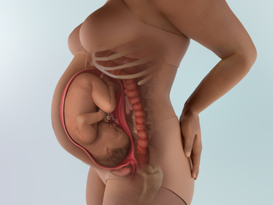
- 1. Sự phát triển của thai nhi
-
Kích thước thai nhi: 47.8cm (2.6kg) 😄💟
👶 Bé đạp ít hơn
Em bé càng gần ngày sinh thì sẽ dần đưa đầu xuống thấp vào trong khung chậu. Tùy từng bé mà vẫn có bé quay đầu lên trên và ngồi thẳng. Khi bé đã vào vị trí, mẹ có thể cảm nhận bé hoạt động ít mạnh mẽ hơn trước, nhưng thực tế số lần vận động của bé không hề giảm. ⚠️Nếu bé hoàn toàn không cử động, hoặc sau khi cử động mạnh rồi đột ngột dừng lại, đó có thể là dấu hiệu bất thường của thai nhi, cần đến bệnh viện ngay lập tức.
🌟 Giai đoạn cuối thai kỳ, tốc độ phát triển dần chậm lại
Bé đang tích trữ năng lượng để chuẩn bị bước ra thế giới bên ngoài💪. Nếu tiếp tục phát triển nhanh, việc sinh ra sẽ khó khăn hơn, nên sự tăng trưởng sẽ dần tạm ngừng. Ngoài ra, xương bé vẫn còn mềm giúp quá trình chào đời dễ dàng hơn, và các mảnh xương sọ sẽ chồng lên nhau khi sinh để làm cho đầu bé thu nhỏ lại, hỗ trợ bé chui ra thuận lợi hơn. Đây chính là điều kỳ diệu của cơ thể.
🍀 Chức năng các cơ quan nội tạng trở nên hoàn thiện hơn
Cơ thể có thêm mỡ và hệ cơ phát triển rõ rệt. Thông qua nhau thai, bé nhận được miễn dịch với bệnh tật từ cơ thể mẹ và sẵn sàng chờ đến lúc chào đời.
🌬️ Phổi của bé đã sẵn sàng để thích nghi với thế giới bên ngoài
Khi trẻ sơ sinh hít vào lần đầu tiên – thường trong vòng khoảng 10 giây sau khi sinh – phổi sẽ nở ra và phần chất lỏng còn lại trong các phế nang sẽ được thay thế bằng không khí.
🦴 Xương của em bé đang cứng dần
Xương của em bé đang dần cứng lại, dù vẫn mềm hơn xương người lớn. Một số xương lúc này vẫn được tạo thành hoàn toàn từ sụn mềm và sẽ dần được thay thế bằng xương thật trong suốt thời thơ ấu. 🦵Thông tin thú vị: Trẻ sơ sinh có hơn 275 chiếc xương, nhưng người lớn chỉ có 206 chiếc, bởi vì một số xương sẽ hợp nhất lại theo thời gian.
💩 Hình thành phân su (meconium)
Em bé đang rụng phần lớn lớp lông tơ bao phủ cơ thể (lanugo) cùng lớp chất gây màu trắng bảo vệ da trong tử cung (vernix caseosa). Bé nuốt cả hai thứ này, cùng với các dịch tiết khác, tạo thành hỗn hợp màu đen gọi là phân su (meconium) – đây sẽ là dạng phân đầu tiên của trẻ sau khi chào đời.🧸
- 2. Thay đổi của cơ thể mẹ
-
😣 Đau nhức vùng chậu
Thai nhi đang chèn lên dây thần kinh vùng chậu và chân nên có thể gây đau nhói, cảm giác như bị kéo xuống dưới, hoặc cảm giác tê bì⚡. Càng gần sinh thì triệu chứng càng tăng, nhưng sẽ hết ngay khi sinh em bé. Có thể sử dụng đai hỗ trợ (pregnancy bands/belts) để ổn định xương chậu, tập vật lý trị liệu, châm cứu giảm đau (trao đổi với bác sĩ trước).
🐧 Bắt đầu bước đi lảo đảo kiểu “chim cánh cụt” ^__^
Ở tuần 36, dáng đi lảo đảo là đặc trưng. Không chỉ vì bụng lớn mà còn do hormone khiến các mô liên kết trở nên lỏng lẻo, làm thay đổi dáng đi. 💃Cơ thể mẹ giờ đây đang mềm mại và linh hoạt hơn để chuẩn bị cho việc sinh nở.
🥚 Hãy tăng cường protein (단백질)
Ở tam cá nguyệt cuối, protein đặc biệt quan trọng. Não bé đang phát triển với tốc độ mạnh mẽ và rất cần protein, đặc biệt là các acid béo Omega-3 như ALA và DHA. Thực phẩm giàu protein chứa Omega-3 gồm thịt, cá🐟, trứng. Omega-3 hỗ trợ phát triển trí não cho bé và còn giúp giảm nguy cơ trầm cảm sau sinh ở mẹ.
👩 Chuẩn bị chỗ ngủ cho em bé
Nếu bỗng thấy tràn đầy năng lượng, đó là bản năng tự nhiên của giai đoạn gần sinh. Cũng như mèo hay chim trước khi sinh con, mẹ có bản năng tạo môi trường tốt nhất cho bé.🧸 Quanh tuần 38, cơ thể tiết ra nhiều adrenaline hơn nên mẹ cảm thấy khỏe và muốn dọn dẹp, sắp xếp nhiều hơn, đặc biệt là chỗ ngủ, chỗ nằm chơi cho bé.
💥 Chuột rút (Cramping)
Ở thời điểm này của thai kỳ, mẹ có thể gặp chuột rút do cơn gò sinh lý giả. Chuột rút cũng có thể là dấu hiệu báo trước cơn chuyển dạ thật sự. Hãy gọi cho bác sĩ nếu: cảm thấy co thắt kèm theo đau lưng dưới, có hơn sáu cơn co thắt mỗi giờ (dù không đau), các cơn co thắt xảy ra theo nhịp đều đặn, có dịch tiết âm đạo hoặc chảy máu, hoặc có bất kỳ dấu hiệu chuyển dạ sớm nào khác.
⚡Thai tụt thấp
Nếu thai tụt xuống khung chậu, mẹ có thể cảm thấy áp lực thêm ở bụng dưới, khiến đi lại khó chịu hơn. Nếu thai tụt rất thấp, vùng âm đạo có thể bị khó chịu do áp lực, đôi lúc đau nhói hoặc giật ở vùng chậu hay âm đạo - hiện tượng này gọi là “lightning crotch”, xảy ra khi đầu thai tạo áp lực lên cổ tử cung và các dây thần kinh quanh phần dưới tử cung.
🌈Mặt tích cực là mẹ có thể dễ thở hơn nếu thai tụt thấp, vì thai tạo ít áp lực lên cơ hoành, giảm khó thở. Việc ăn uống cũng dễ dàng hơn, vì dạ dày không bị ép quá nhiều.
- 3. Lưu ý về sức khỏe
-
Mẹ bầu cần sinh mổ (mổ lấy thai – 제왕절개) phải sắp xếp ngày phẫu thuật
- Cần thực hiện các xét nghiệm trước sinh để luôn trong trạng thái sẵn sàng sinh con.
- Các xét nghiệm cần làm gồm điện tâm đồ, chức năng gan, xét nghiệm thiếu máu, chụp X-quang ngực.
- Trước khi sinh, mẹ cần khám thai định kỳ và khám cổ tử cung (내진) mỗi tuần.
- Qua việc kiểm tra xem cổ tử cung đã mở hay chưa, vị trí của thai và nhau thai, cũng như tình trạng sức khỏe của thai nhi, mẹ có thể chuẩn bị cho việc sinh nở an toàn.
- Những mẹ bầu cần sinh mổ - như trường hợp thai ngôi ngược, đã từng sinh mổ con đầu, hoặc thai quá lớn - nên đặt lịch phẫu thuật trước.
- Ngày mổ thích hợp nhất thường là lúc thai đạt gần 3 kg, khoảng tuần 38–39.
- Tuy nhiên, với trường hợp song thai, cơn gò có thể đến sớm hơn 1–2 tuần, vì vậy nên đặt lịch mổ vào khoảng tuần 37–38.
Việc chú ý lượng muối (natri) nạp vào cơ thể vẫn là một vấn đề quan trọng
- Giai đoạn này, vì thai đang dần tụt xuống khoang chậu để chuẩn bị sinh nên áp lực lên dạ dày biến mất, khiến mẹ lại cảm thấy ăn ngon miệng.
- Tuy nhiên, không thể chủ quan với nguy cơ tiền sản giật nên mẹ cần hạn chế muối.
- Không nên ăn quá nhiều sản phẩm từ sữa. Uống sữa, ăn phô mai, hoặc sữa chua không đường cũng cần lưu ý vì thực phẩm giàu chất béo sữa có hàm lượng calo cao. Dù thế nào thì việc ăn quá nhiều đều không tốt.
Nếu không phải trường hợp đặc biệt, mẹ bầu không nên đổi bệnh viện khác so với nơi đã khám trong suốt thai kỳ
- Càng gần ngày sinh, mẹ càng dễ bất an và lo lắng. Vì vậy, những mẹ bầu vốn khám thai tại phòng khám tư đôi khi lại cảm thấy không yên tâm và muốn chuyển sang bệnh viện lớn.
- Tuy nhiên, nếu có thể thì nên tiếp tục sinh tại nơi đã theo dõi từ đầu thai kỳ.
- Nếu đổi bệnh viện ngay trước khi sinh, bác sĩ mới có thể chưa nắm rõ toàn bộ tình trạng của mẹ, làm giảm khả năng xử lý kịp thời khi có tình huống khẩn cấp phát sinh.
- 4. Quan hệ vợ chồng khi mang thai
-
Sinh hoạt tình dục: Theo thống kê ở Mỹ, có đến 15% phụ nữ mang thai từng quan hệ tình dục ngay cả vào ngày trước khi sinh. Điều này cho thấy nếu không quá gắng sức và chọn tư thế không gây áp lực lên bụng thì không nhất thiết phải kiêng hoàn toàn. Dù vậy, ở giai đoạn này, mẹ bầu đang tiến gần đến ngày sinh nên tinh thần rất dễ bất an, vì thế người chồng cần thấu hiểu và quan tâm để giúp vợ giảm lo lắng. Ngoài ra, nếu việc quan hệ khó khăn và người chồng dùng tay kích thích bộ phận sinh dục của vợ để giúp đạt cực khoái thì cần tránh, vì điều đó làm tăng nguy cơ nhiễm khuẩn. Đồng thời, sự kích thích quá mức của mẹ bầu có thể gây co thắt tử cung dẫn đến nguy cơ sinh non, vì vậy cần đặc biệt chú ý.
👨Vai trò của chồng:
🧰 Chuẩn bị đón em bé
Sau khi mua đồ sơ sinh, hãy tiếp tục với: lắp giường và tủ, thay đổi vị trí đồ nội thất, sắp xếp khu vực để đồ cho bé, giặt quần áo – khăn sữa – chăn gối của bé, lắp ghế ngồi ô tô (카시트) và nhiều việc nhỏ khác.
🏢 Thông báo với công ty trước
Đây là tháng cuối cùng của thai kỳ, ngày sinh có thể đến bất cứ lúc nào. Hãy báo cho công ty biết để chuẩn bị và phòng trường hợp cần xin nghỉ đột xuất. Nếu có thể, hãy hỏi xem có được làm việc tại nhà đến lúc sinh không. Nếu nơi làm việc xa, có thể xin nghỉ gần ngày sinh.
- 5. Trọng tâm thai giáo
-
Khi ngày sinh càng đến gần, nhiều mẹ bầu trở nên lo lắng và mất ngủ vì những bất an về việc sinh nở. “Liệu mình có thể sinh con an toàn không?”, “Em bé có khỏe mạnh không?” – và khi người chồng không hiểu những lo lắng này, mẹ bầu rất dễ trở nên cáu kỉnh. Trong những lúc như vậy, đừng một mình chịu đựng sự căng thẳng và bất an, tốt nhất là nên chia sẻ thẳng thắn với chồng về những cảm xúc đó. Nếu bạn lập ra một danh sách “Điều gì khiến em lo lắng nhất” và cùng chồng trao đổi từng mục một, cảm xúc của bạn sẽ ổn định hơn. Khi biết rằng em bé cũng đang rất mong đến ngày được gặp bố mẹ, những nỗi lo ấy sẽ phần nào dịu lại.
- 6. Các thông tin cần biết khác
-
Nắm rõ các dấu hiệu báo trước khi sinh.
Cảm giác vùng bụng trên nhẹ hơn. Do thai nhi tụt xuống khung chậu nên dạ dày vốn bị chèn ép trước đó sẽ giảm áp lực.
Bụng thường xuyên căng cứng. Do sự co thắt tử cung chuẩn bị cho quá trình sinh, bụng thường xuyên căng.
Thai máy ít hơn. Vì thai nhi đã di chuyển xuống vùng khung chậu để chuẩn bị chào đời nên cử động giảm.
Đi tiểu thường xuyên. Thai nhi tụt xuống bụng dưới của mẹ, chèn lên bàng quang khiến mẹ buồn tiểu nhiều hơn.
Xuất hiện dịch nhầy hồng (dịch nhầy báo sinh). Dịch tiết đặc, nhầy như chất nhầy cổ tử cung, màu trắng và có lẫn một chút máu. Thường sau khi thấy dấu hiệu này khoảng 2–3 ngày, cơn đau chuyển dạ sẽ xuất hiện.
Xuất hiện cơn đau chuyển dạ theo chu kỳ. Ban đầu là những cơn gò không đều (전진통), sau đó xuất hiện những cơn đau mạnh kéo dài 10–20 giây với khoảng cách 20–30 phút. Khi thời gian giữa các cơn đau ngày càng rút ngắn và xuất hiện đều đặn mỗi 10 phút thì đó là dấu hiệu bắt đầu chuyển dạ thật sự.
Bị vỡ ối. Khi cổ tử cung mở ra, màng ối bao quanh thai nhi và nước ối bị rách khiến nước ối chảy ra ngoài. Khoảng 2–3 trên 10 mẹ bầu sẽ gặp tình trạng vỡ ối sớm (조기양막파수) trước khi bắt đầu chuyển dạ.
-
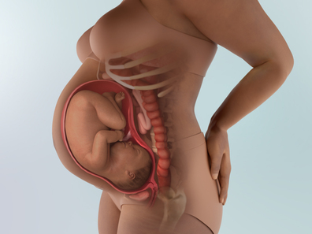
- 1. Sự phát triển của thai nhi
-
Kích thước thai nhi: 49cm (2.8kg) 👶💟
✨ Lớp gây (태지) và lông tơ (솜털) đang bong dần
Những phần bong ra này sẽ được bé nuốt vào cùng với các chất tiết khác, giúp tăng cường nhu động ruột. Chúng sẽ lưu lại trong ruột và sau sinh sẽ được thải ra tự nhiên dưới dạng phân su. Đôi khi ngay trước sinh hoặc trong lúc sinh, bé có thể hít phải phân su, điều này có thể gây khó thở nên cần theo dõi cẩn thận.
🌟 Bé đang chăm chỉ chuẩn bị để bước ra thế giới
- Tất cả các cơ quan như tim (심장), gan (간장), hệ hô hấp (호흡기), hệ tiêu hóa (소화기), hệ tiết niệu (비뇨기) đều đã hoàn thiện, khả năng chống nhiễm trùng cũng trở nên mạnh mẽ.
- Bé vẫn đang tiếp tục tập thở, mút tay, chớp mắt, cử động toàn thân – như một buổi diễn tập trước khi chào đời😊😊. Trên lòng bàn tay bé đã có đường chỉ tay và dấu vân tay nhỏ xíu.
🩺 Nếu đầu bé lớn, có thể cân nhắc sinh mổ (제왕절개)
- Cơ thể bé đã lớn đến mức lấp đầy tử cung (자궁), trong tư thế cong lưng và co tay, co chân về phía trước.
- Nếu kích thước đầu của bé lớn hơn đường kính khung chậu của mẹ, bác sĩ có thể đề xuất cân nhắc sinh mổ (제왕절개) để đảm bảo an toàn. Việc quyết định trước khi chuyển dạ rằng sẽ sinh thường hay sinh mổ không hề dễ, nhưng quan trọng là cần trao đổi kỹ với bác sĩ để chọn phương pháp phù hợp nhất.
- 2. Thay đổi của cơ thể mẹ
-
Mỗi tuần, mẹ sẽ được khám định kỳ, bác sĩ kiểm tra xem bé đã xuống được bao nhiêu, đánh giá hình dạng khung chậu và tình trạng cổ tử cung🔎.
Âm đạo trở nên mềm mại hơn để em bé có thể ra ngoài dễ dàng. Cổ tử cung (자궁구) ẩm ướt hơn, mềm và dễ co giãn hơn, giúp dễ sinh hơn. Một số mẹ có thể bị mở cổ tử cung sớm, trong trường hợp này cần nghỉ ngơi và theo dõi kết quả.
Có thể thấy dịch nhầy lẫn máu trong bồn cầu hoặc quần lót, thường xuất hiện cùng lúc hoặc ngay sau nút nhầy, hình thành khi cổ tử cung mềm, mỏng và bắt đầu mở để chuẩn bị sinh, làm một số mạch máu trong cổ tử cung vỡ.
Mẹ trở nên nhạy cảm hơn với những kích thích nhỏ. Để bé dễ đi qua đường sinh, cổ tử cung sẽ trở nên ẩm và mềm hơn, khiến dịch tiết âm đạo tăng lên. Tuy nhiên, điều này cũng khiến mẹ dễ bị chảy máu khi có kích thích nhỏ, vì vậy cần cẩn thận hơn.🌸
Bác sĩ dựa vào mức độ mở cổ tử cung (자궁경부). Nếu cổ tử cung mới mở 1cm thì vẫn chưa đủ, bé chỉ có thể đi qua khi mở khoảng 10cm. Bác sĩ cũng kiểm tra độ mỏng của cổ tử cung – so với khi không có cơn gò thì hiện tại đã mỏng đi bao nhiêu. Nếu cổ tử cung mỏng đáng kể, điều đó nghĩa là thời điểm sinh đã rất gần.
Đến thời điểm này, mẹ hãy hoàn tất mọi chuẩn bị. Đừng nghĩ rằng bé chắc chắn sẽ sinh đúng 40 tuần. Thực tế, từ tuần 38 trở đi bé có thể chào đời bất kỳ lúc nào. Vì vậy trong tuần này, mẹ hãy hoàn thành toàn bộ việc chuẩn bị cần thiết.
Dù cơ thể đau nhức, nặng nề và mẹ dễ mệt mỏi, nhưng có một điều tích cực: tử cung đang dần hạ xuống. Không phải mẹ bầu nào cũng gặp hiện tượng này, nhưng khi tử cung hạ thấp, áp lực lên dạ dày giảm, mẹ sẽ dễ ăn uống hơn. Đồng thời, áp lực lên cơ hoành giảm nên việc hít thở trở nên dễ dàng hơn.😮💨
Lúc này bé đã lớn và không còn nhiều không gian để cử động. Bé cũng đã chui sâu vào trong khung chậu để sẵn sàng chào đời, nên mẹ sẽ cảm thấy thai máy ít hơn👣. Tuy nhiên, nếu thai máy giảm rõ rệt so với bình thường thì đó có thể là dấu hiệu bất thường, cần đến bệnh viện kiểm tra ngay.
Những cơn gò tử cung gián đoạn mà mẹ cảm thấy trước đây – có thể xuất hiện thường xuyên hơn vào lúc này. Khi gần đến ngày sinh, các cơn gò có thể kéo dài hơn và gây khó chịu hơn, tuy nhiên nếu thực sự đau thì có thể đó là cơn chuyển dạ thật. Các cơn gò này thường xảy ra khi mẹ mất nước, hoạt động nhiều hoặc bàng quang đầy.
Điều tích cực là nhiều cơn co thắt thử (practice contractions) cuối thai kỳ có thể giúp cổ tử cung (cervix) mở rộng và mỏng đi, góp phần làm quá trình chuyển dạ chính diễn ra nhanh hơn.
Cơn gò giả không đau và xảy ra không đều, biến mất khi mẹ đổi tư thế hoặc nghỉ ngơi. Còn cơn chuyển dạ thật thường bắt đầu từ lưng và lan ra phía trước bụng, xảy ra đều đặn và đau hơn.
Khi đã có cơn co chuyển dạ thật, bác sĩ sẽ hướng dẫn mẹ chờ đến khi các cơn co kéo dài khoảng 1 phút mỗi cơn, xảy ra mỗi 5 phút trong khoảng 1 giờ, và gây khó chịu nhiều.
Có thể thấy ngực rò rỉ sữa trong vài tuần cuối thai kỳ, đặc biệt khi núm vú (nipples) bị kích thích, ví dụ khi tập thể dục hoặc quan hệ tình dục. Đó là sữa non (colostrum) – sữa đầu tiên sản xuất cho bé, có dạng đặc hơn, đục hơn so với sữa sau đó, có thể hơi dính và giàu dưỡng chất, vì vậy thường được gọi là “vàng lỏng” (liquid gold).
Nếu không bị rỉ sữa thì cũng không sao – điều này hoàn toàn bình thường và không có nghĩa ngực sẽ không sẵn sàng cho việc nuôi con bằng sữa mẹ.
- 3. Lưu ý về sức khỏe
-
Chú ý dinh dưỡng để thai nhi có hệ miễn dịch (면역력) đầy đủ 💪💪
Để tích lũy sức khỏe sinh nở tốt và nuôi dưỡng trẻ bằng sữa mẹ (모유) sau sinh, mẹ nên quản lý dinh dưỡng thật kỹ trong giai đoạn cuối thai kỳ. Đặc biệt, sức khỏe của trẻ trong 3 tháng đầu sau sinh phụ thuộc vào khả năng miễn dịch mà thai nhi nhận từ mẹ (태아 시절 엄마에게서 물려받은 면역기능) 🛡️🛡️ và các chất miễn dịch có trong sữa mẹ (모유에 함유된 면역물질). 👉Nên đảm bảo cung cấp đầy đủ vitamin C 🍊, axit folic (엽산) 🌿, vitamin B12 💊, vitamin E 🥑.
Vận động vừa phải để tránh khó sinh (난산)
Để duy trì thể lực khi sinh (출산시 체력), mẹ cần nghỉ ngơi và ngủ đủ😴, đồng thời vận động cơ thể vừa phải khi làm việc nhà để phòng tránh khó sinh. Khi bụng quá to, cân bằng cơ thể khó khăn, ⚠️cần chú ý tránh trượt ngã trong nhà hoặc ngoài trời. Vì không thể đoán trước khi nào có dấu hiệu sinh → không nên ra ngoài một mình🚫🚶♀️, giữ cơ thể sạch sẽ và tóc gọn gàng để sẵn sàng nhập viện bất cứ lúc nào.
Thính giác của bé sẽ được kiểm tra tại bệnh viện trước khi xuất viện👂🏥
Thính giác quan trọng cho sự phát triển ngôn ngữ🗣️👶💬, bắt đầu từ trước khi bé biết bập bẹ. Do đó, phát hiện sớm các vấn đề tiềm ẩn giúp bạn can thiệp kịp thời.
Không tự ý uống thuốc khi đau đầu🚫💊
Áp lực sinh nở (분만에 대한 스트레스) và thay đổi tiết hormone có thể gây đau đầu. Dù đau đầu nặng cũng tuyệt đối không tự ý uống thuốc giảm đau😵💫. Nếu đau đầu kèm chóng mặt (어지럼증) và buồn nôn (구토), cần nghi ngờ thiếu máu (빈혈)🩸 hoặc cao huyết áp (고혈압). Các biện pháp phòng ngừa và xử lý bao gồm:
1️⃣ Chườm ấm/lạnh lên mắt
2️⃣ Massage để giảm căng cơ vai
3️⃣ Bấm huyệt thái dương (관자놀이) và vùng sau cổ (목 뒷부분)
4️⃣ Giải quyết nguyên nhân căng thẳng (스트레스의 원인을 해결)
5️⃣ Thường xuyên đi dạo hít không khí trong lành (자주 산책을 해 신선한 공기를 마신다)
- 4. Quan hệ vợ chồng khi mang thai
-
Quan hệ tình dục trong: Các thai phụ có viêm nhiễm cổ tử cung (자궁 질부 염증) nên tránh quan hệ tình dục trong giai đoạn này để giảm nguy cơ chảy máu và nhiễm trùng.
👨Vai trò của chồng:
🚗 Hạn chế di chuyển đường dài
Giai đoạn này mẹ cần được nghỉ ngơi tuyệt đối. Việc ngồi xe lâu cũng có thể gây vấn đề, vì vậy bố hãy tránh đưa mẹ đi xa – kể cả du lịch, về quê, dự tiệc gia đình hay các buổi họp mặt. Đây là thời điểm nên ưu tiên an toàn lên hàng đầu.
- 5. Trọng tâm thai giáo
-
Nên luyện tập các bài tập và kỹ thuật thở (호흡법) để chuẩn bị cho sinh thường. Quan trọng nhất là giảm bớt nỗi sợ hãi về sinh nở. Mặc dù thai nhi cử động ít hơn, nhưng cảm xúc và phản xạ thần kinh vẫn nhạy cảm, vì vậy nên thường xuyên nói chuyện với bé để tạo sự gắn kết. Thực hành lặp lại các bài thể dục và thở để thuần thục, đồng thời đọc sách về chăm sóc trẻ sơ sinh (신생아) cũng rất tốt.
- 6. Các thông tin cần biết khác
-
Khi thai nhi ngôi mông, mẹ thường bị đau lưng
Cơn đau lưng chủ yếu xuất hiện khi thai nhi ở ngôi mông (둔위/역아). Đau xảy ra do phần sau đầu thai nhi (태아의 머리 뒷부분) đè vào bờ sau tử cung (자궁 뒷 경계선) của mẹ, và thay đổi tư thế lên xuống không giảm đau. Cơn đau thường xuất hiện dữ dội giữa các cơn co tử cung (자궁 수축운동). Một số phương pháp sau có thể giúp giảm đau:
1️⃣ Thay đổi tư thế hoặc ấn mạnh vào lưng. Cúi người hoặc ngồi xổm, nếu đau quá, không thể di chuyển nhiều, hãy cong lưng như lưng mèo và nằm nghiêng.
2️⃣ Chườm nóng hoặc lạnh. Dùng bình nước nóng quấn khăn, miếng chườm nóng ẩm, túi đá hoặc miếng chườm lạnh đặt lên vùng đau.
3️⃣ Tạo áp lực ngược lại cho vùng đau lưng. Người khác dùng tay vỗ mạnh vào vùng đau nhất trên lưng, sau đó bấm huyệt nhẹ nhàng, đặc biệt ấn mạnh vào phần tròn của bàn chân bằng ngón tay.
4️⃣ Sử dụng massage dầu hoặc phấn để giảm căng thẳng và khó chịu do đau quá mức.
-
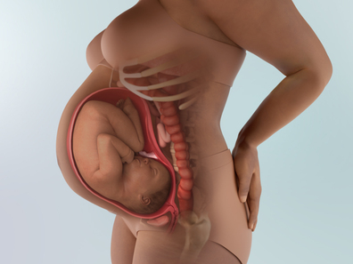
- 1. Sự phát triển của thai nhi
-
Kích thước thai nhi: 50cm (3kg) 👶💟
✨ Bé đang hình thành nhịp ngủ đều đặn – thức theo chu kỳ khoảng 40 phút một lần. Khi ngủ còn có thể nằm mơ nữa.
⚡ Lớp mỡ dưới da đã phát triển đầy đủ để có thể tự điều chỉnh nhiệt độ cơ thể. Móng tay đã dài đến mức sau sinh cần được che lại cẩn thận để tránh bé tự cào trúng mặt, và tóc cũng đã mọc dài khoảng 3cm.
💛 Bé có thể thực hiện các phản xạ sơ sinh như mút tay, ngáp, mỉm cười, nhăn mặt – tất cả những phản xạ dễ thương có ở trẻ sơ sinh. Bé đang mong chờ ngày được gặp bố mẹ.
🌿 Khi bé chuẩn bị bước ra thế giới bên ngoài, nhau thai – dây nối sự sống của bé trong suốt thời gian qua – bắt đầu thoái hóa nhẹ. Dù vậy, đến sát lúc sinh, nhau thai vẫn còn đủ năng lượng để duy trì sự sống cho bé.
💨 Cơ thể bé lúc này đang tiết hormone cortisol (코르티솔). Hormone này giúp bé hô hấp được khi ra ngoài. Giờ thì bé gần như đã sẵn sàng để chào đời rồi!
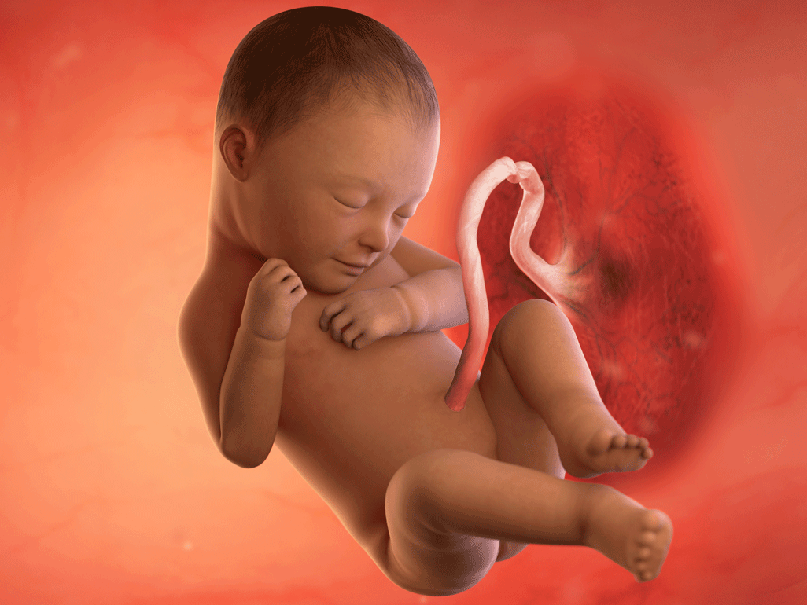
- 2. Thay đổi của cơ thể mẹ
-
- 3. Lưu ý về sức khỏe
-
- 4. Quan hệ vợ chồng khi mang thai
-
Sinh hoạt tình dục: Do nguy cơ vỡ ối sớm, nên hạn chế nghiêm ngặt việc quan hệ tình dục trong giai đoạn này.
👨Vai trò của chồng:
📞 Hãy thường xuyên kiểm tra tình trạng của vợ
Bất cứ lúc nào cũng có thể chuyển dạ nên dù đang ở bên ngoài thì chồng vẫn hãy liên lạc thường xuyên để biết tình trạng của vợ, chia sẻ sự lo lắng và hỗ trợ tinh thần cho vợ nhé.
Em bé sắp chào đời rồi, và thời gian dành riêng cho hai vợ chồng sẽ ít lại. Dù bận rộn chuẩn bị sinh nở, chồng vẫn có thể tạo những khoảnh khắc ấm áp với vợ như: nắm tay đi dạo gần nhà, xem một bộ phim lãng mạn cùng nhau, hoặc chuẩn bị một bữa tối chúc mừng vợ chuẩn bị sinh.
- 5. Trọng tâm thai giáo
-
Mẹ hãy thay đổi tâm trạng bằng các hoạt động nhẹ như tập thể dục nhẹ nhàng. Khi hormone liên tục thay đổi và thời điểm sinh nở đến gần, mẹ dễ bị căng thẳng và lo âu. Lúc này, việc thực hiện các bài tập nhẹ giúp cải thiện cảm xúc rất tốt. Vì thai nhi đã ở trạng thái gần giống một trẻ sơ sinh, mẹ nên trò chuyện và vuốt ve bé như đang chăm sóc một em bé thật sự. Nghe nhạc nhiều cũng rất hữu ích cho mẹ và thai nhi.
- 6. Các thông tin cần biết khác
-
-
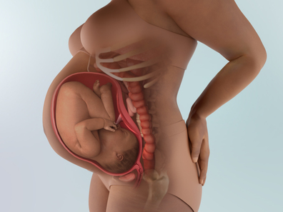
- 1. Sự phát triển của thai nhi
-
Kích thước thai nhi: 50.7cm (3.2kg) 👶💟
- 2. Thay đổi của cơ thể mẹ
-
- 3. Lưu ý về sức khỏe
-
- 4. Quan hệ vợ chồng khi mang thai
-
- 5. Trọng tâm thai giáo
-
- 6. Các thông tin cần biết khác
-
-
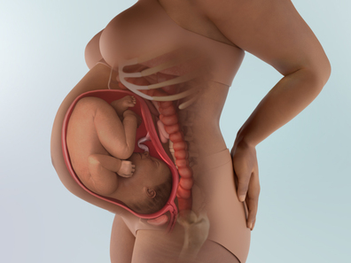
- 1. Sự phát triển của thai nhi
-
Kích thước thai nhi: 52cm (3.4kg) 👶💟
- 2. Thay đổi của cơ thể mẹ
-
- 3. Lưu ý về sức khỏe
-
- 4. Quan hệ vợ chồng khi mang thai
-
- 5. Trọng tâm thai giáo
-
- 6. Các thông tin cần biết khác
-